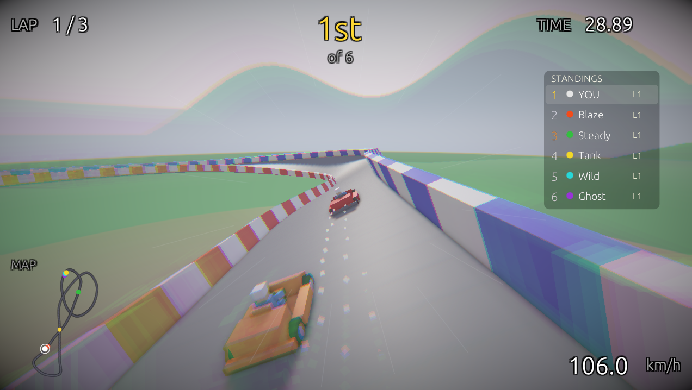
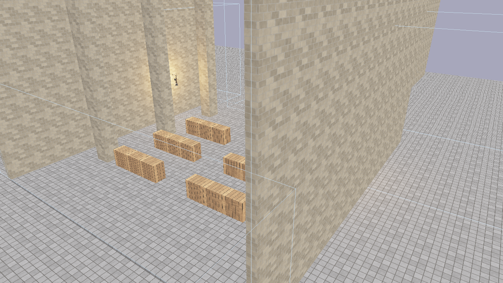
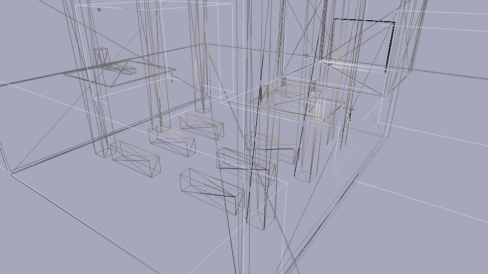
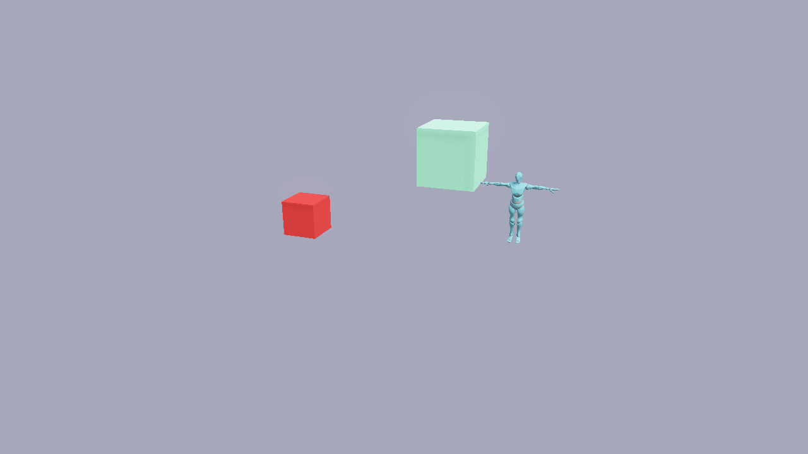
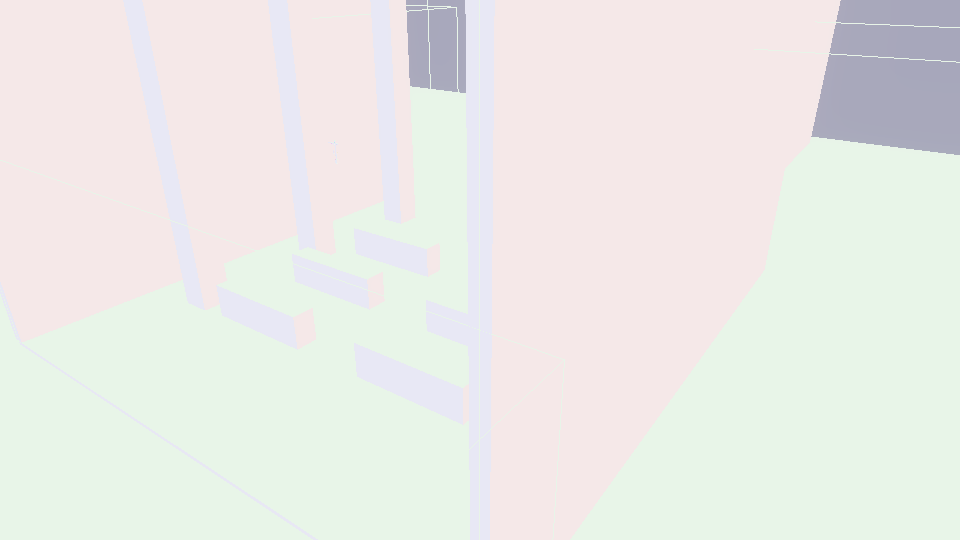
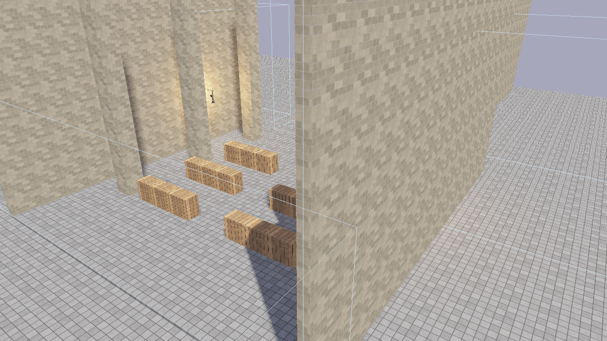
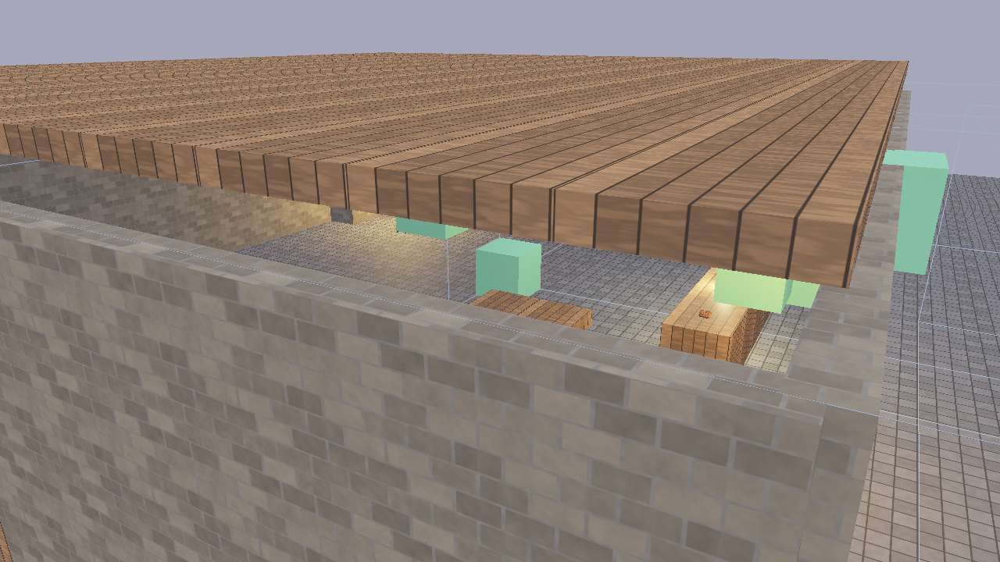

Flint Engine
A CLI-first, AI-agent-optimized 3D game engine written in Rust.
Flint is a general-purpose 3D game engine designed from the ground up to provide an excellent interface for AI coding agents, while maintaining effective workflows for human developers. Unlike existing engines that optimize for GUI-driven workflows, Flint prioritizes programmatic interaction, introspection, and validation.
The Core Idea
Current game engines are built around visual editors, drag-and-drop workflows, and GUI-heavy tooling. These become friction points when AI agents attempt to make changes programmatically — the agent ends up fighting against abstractions designed for human spatial reasoning and visual feedback loops.
Flint inverts this: the primary interface is CLI and code, with visual tools focused on validating results rather than creating them.
Every scene is a TOML file you can read, diff, and version. Every operation is a composable CLI command. Every piece of engine state is queryable as structured data. The viewer exists to answer one question: “Did the agent do what I asked?”
Built with Flint

FlintKart: a kart racing game built as a standalone project using Flint’s game project architecture — custom schemas, scripts, and assets layered on top of the engine via git subtree.
Visual Showcase

The Luminarium showcase scene: Cook-Torrance PBR shading with cascaded shadows, textured walls and floors, glTF models, and emissive materials.

Wireframe debug mode (F1) reveals mesh topology — one of seven built-in debug visualizations for inspecting geometry, normals, depth, UVs, and material properties.
What It Looks Like
Create a scene, add entities, query them, and view the result — all from the command line:
# Initialize a project
flint init my-game
# Create a scene and populate it
flint scene create levels/tavern.scene.toml --name "The Tavern"
flint entity create --archetype room --name "main_hall" --scene levels/tavern.scene.toml
flint entity create --archetype door --name "front_door" --parent "main_hall" --scene levels/tavern.scene.toml
# Query what you've built
flint query "entities where archetype == 'door'" --scene levels/tavern.scene.toml
# Validate against constraints
flint validate levels/tavern.scene.toml --fix --dry-run
# See it in 3D with PBR rendering
flint serve levels/tavern.scene.toml --watch
# Walk around in first person
flint play levels/tavern.scene.toml
Current Status
The engine supports:
- Entity CRUD via CLI with archetype-based creation
- Scene serialization in human-readable TOML
- Query language for filtering and inspecting entities
- Schema system for component and archetype definitions
- Constraint validation with auto-fix capabilities
- Asset management with content-addressed storage and glTF import
- PBR renderer with Cook-Torrance shading, cascaded shadow mapping, and glTF mesh rendering
- GPU skeletal animation with glTF skin/joint import, vertex skinning, and crossfade blending
- egui inspector with entity tree, component editing, and constraint overlay
- Hot-reload viewer that watches for file changes
- Headless rendering for CI and automated screenshots
- Physics simulation via Rapier 3D with kinematic character controller
- First-person gameplay with WASD movement, mouse look, jumping, and sprinting
- Game loop with fixed-timestep accumulator for deterministic physics
- Spatial audio via Kira with 3D positioned sounds, ambient loops, and event-driven triggers
- Property animation with TOML-defined keyframe clips (Step, Linear, CubicSpline interpolation)
- Skeletal animation with glTF skin import, GPU bone matrix skinning, and crossfade blending
- Rhai scripting with entity/input/audio/animation APIs, event callbacks, and hot-reload
- Interactable entities with HUD prompts, proximity detection, and scripted behaviors
- AI asset generation with pluggable providers (Flux textures, Meshy 3D models, ElevenLabs audio), style guides, batch scene resolution, model validation, and build manifests
- Billboard sprites with camera-facing quads and sprite sheet animation
- GPU particle system with instanced rendering, per-emitter pooling, alpha/additive blending, and configurable emission shapes
- Extensible input system with config-driven bindings for keyboard, mouse, and gamepad with runtime rebinding
- Data-driven UI system with TOML-defined layouts, style classes, anchor-based positioning, flow layouts, and runtime scripting API
- Game project architecture for standalone games that include the engine as a git subtree
See the Roadmap for the full development history.
Who Is This For?
- AI agent developers building game content programmatically
- Technical game developers who prefer code over visual editors
- Tooling enthusiasts who want to compose game development operations
- Rust game developers looking for a deterministic, introspectable engine
Reading This Guide
- Start with Why Flint? to understand the motivation
- Follow the Getting Started guide to build from source and create your first project
- Explore Core Concepts to learn about the engine’s systems
- Check the Architecture section if you want to understand the codebase
- Browse the API Reference for per-crate Rust documentation
Quick Reference
A scannable cheat sheet for daily Flint development.
CLI Commands
| Command | Description |
|---|---|
flint init <name> | Initialize a new project |
flint scene create <path> | Create a new scene file |
flint scene list | List scene files |
flint scene info | Show scene metadata |
flint entity create | Create an entity in a scene |
flint entity delete | Delete an entity from a scene |
flint query "<expr>" | Query entities (e.g., "entities where archetype == 'door'") |
flint schema <name> | Inspect a component or archetype schema |
flint validate <scene> | Validate scene against constraints (--fix to auto-fix) |
flint serve <scene> --watch | Interactive viewer with hot-reload |
flint play <scene> | First-person gameplay with physics + scripting |
flint render <scene> -o out.png | Headless render to PNG |
flint asset generate <type> | AI asset generation (texture, model, audio) |
flint asset import <file> | Import file into asset catalog |
flint edit <scene> | Interactive spline/track editor |
flint prefab view <template> | Preview a prefab template in the viewer |
Keyboard Shortcuts
Player (flint play)
| Key | Action |
|---|---|
| WASD | Move |
| Mouse | Look around |
| Space | Jump |
| Shift | Sprint |
| E | Interact |
| Left Click | Fire |
| R | Reload |
| 1 / 2 | Weapon slots |
| F1 | Cycle debug mode (PBR → Wireframe → Normals → Depth → UV → Unlit → Metal/Rough) |
| F4 | Toggle shadows |
| F5 | Toggle bloom |
| F6 | Toggle post-processing pipeline |
| F11 | Toggle fullscreen |
| Escape | Release cursor / Exit |
Viewer (flint serve)
| Key | Action |
|---|---|
| Left-click | Select entity / pick gizmo axis |
| Left-drag | Orbit camera (or drag gizmo) |
| Right-drag | Pan camera |
| Scroll | Zoom |
| Ctrl+S | Save scene |
| Ctrl+Z | Undo position change |
| Ctrl+Shift+Z | Redo position change |
| F1 | Cycle debug mode |
| F2 | Toggle wireframe overlay |
| F3 | Toggle normal arrows |
| F4 | Toggle shadows |
Editor (flint edit)
| Key | Action |
|---|---|
| Left-click | Select control point |
| Left-drag | Move control point |
| Alt+drag | Move vertically (Y) |
| Middle-drag | Orbit |
| Right-drag | Pan |
| Tab / Shift+Tab | Cycle control points |
| I | Insert point |
| Delete | Remove point |
| Ctrl+S | Save spline |
| Ctrl+Z | Undo |
Common TOML Snippets
Minimal Entity
[entities.my_thing]
archetype = "furniture"
[entities.my_thing.transform]
position = [0, 1, 0]
rotation = [0, 45, 0]
scale = [1, 1, 1]
PBR Material
[entities.my_thing.material]
base_color = [0.8, 0.2, 0.1]
roughness = 0.6
metallic = 0.0
emissive = [1.0, 0.4, 0.1]
emissive_strength = 2.0
Physics Body
[entities.wall.collider]
shape = "box"
size = [10.0, 4.0, 0.5]
[entities.wall.rigidbody]
body_type = "static"
Particle Emitter (Fire)
[entities.fire.particle_emitter]
emission_rate = 40.0
max_particles = 200
lifetime_min = 0.3
lifetime_max = 0.8
speed_min = 1.5
speed_max = 3.0
direction = [0, 1, 0]
gravity = [0, 2.0, 0]
size_start = 0.15
size_end = 0.02
color_start = [1.0, 0.7, 0.1, 0.9]
color_end = [1.0, 0.1, 0.0, 0.0]
blend_mode = "additive"
shape = "sphere"
shape_radius = 0.15
autoplay = true
Post-Processing
[post_process]
bloom_enabled = true
bloom_intensity = 0.04
bloom_threshold = 1.0
vignette_enabled = true
vignette_intensity = 0.3
exposure = 1.0
UI Layout
# ui/hud.ui.toml
[ui]
name = "HUD"
style = "ui/hud.style.toml"
[elements.score_panel]
type = "panel"
anchor = "top-right"
class = "hud-panel"
[elements.score_text]
type = "text"
parent = "score_panel"
class = "score-value"
text = "0"
UI Style
# ui/hud.style.toml
[styles.hud-panel]
width = 160
height = 50
bg_color = [0.0, 0.0, 0.0, 0.6]
rounding = 6
padding = [10, 8, 10, 8]
x = -10
y = 10
[styles.score-value]
font_size = 28
color = [1.0, 1.0, 1.0, 1.0]
text_align = "center"
width_pct = 100
Script Attachment
[entities.npc.script]
source = "npc_behavior.rhai"
enabled = true
[entities.npc.interactable]
prompt_text = "Talk"
range = 3.0
interaction_type = "talk"
Audio Source
[entities.campfire.audio_source]
file = "audio/fire_crackle.ogg"
volume = 0.8
loop = true
spatial = true
min_distance = 1.0
max_distance = 15.0
Prefab Instance
[prefabs.player]
template = "kart"
prefix = "player"
[prefabs.player.overrides.kart.transform]
position = [0, 0, 0]
Top Scripting Functions
| Function | Returns | Description |
|---|---|---|
self_entity() | i64 | ID of the entity this script is attached to |
get_entity(name) | i64 | Look up entity by name (-1 if not found) |
get_field(id, comp, field) | Dynamic | Read a component field |
set_field(id, comp, field, val) | — | Write a component field |
get_position(id) | #{x,y,z} | Entity position |
set_position(id, x, y, z) | — | Set entity position |
distance(a, b) | f64 | Distance between two entities |
is_action_pressed(action) | bool | Check if action is held |
is_action_just_pressed(action) | bool | Check if action pressed this frame |
delta_time() | f64 | Seconds since last frame |
play_sound(name) | — | Play a sound effect |
play_clip(id, clip) | — | Play an animation clip |
raycast(ox,oy,oz, dx,dy,dz, dist) | Map/() | Cast a ray, get hit info |
move_character(id, dx, dy, dz) | #{x,y,z,grounded} | Collision-corrected movement |
spawn_entity(name) | i64 | Create a new entity |
load_scene(path) | — | Transition to a new scene |
push_state("paused") | — | Push a game state (e.g., pause) |
pop_state() | — | Pop to previous game state |
persist_set(key, val) | — | Store data across scene transitions |
load_ui(path) | i64 | Load a .ui.toml document (returns handle) |
ui_set_text(id, text) | — | Set element text content |
ui_show(id) / ui_hide(id) | — | Toggle element visibility |
ui_set_style(id, prop, val) | — | Override a style property at runtime |
Render Command Quick Examples
# Basic screenshot
flint render scene.toml -o shot.png --schemas schemas
# Framed hero shot
flint render scene.toml -o hero.png --distance 20 --pitch 30 --yaw 45 --target 0,1,0 --no-grid
# Debug views
flint render scene.toml -o wireframe.png --debug-mode wireframe
flint render scene.toml -o normals.png --debug-mode normals
flint render scene.toml -o depth.png --debug-mode depth
# Post-processing control
flint render scene.toml -o bloom.png --bloom-intensity 0.08
flint render scene.toml -o raw.png --no-postprocess
Why Flint?
The Problem
Game engines today — Unity, Unreal, Godot — are designed around visual editors. You drag objects into scenes, connect nodes in graphs, click through property inspectors. These workflows are excellent for humans using a mouse, but they create friction in two growing scenarios:
-
AI agents building game content. When an AI coding agent needs to place a door in a scene, it shouldn’t need to simulate mouse clicks on a GUI. It should issue a command and get structured feedback.
-
Automation and CI pipelines. Validating a scene, running regression tests on visual output, or batch-processing hundreds of entities — these tasks fight against editor-centric architectures.
The core tension: existing engines treat programmatic access as a secondary concern. The API exists, but it’s bolted onto a system designed for spatial interaction. Scene formats are binary or semi-readable. Introspection is limited. Determinism is not guaranteed.
The Thesis
Flint starts from the opposite assumption: the primary interface is CLI and code. Visual tools are for validation, not creation.
This doesn’t mean Flint is hostile to humans. It means every operation flows through a composable, scriptable interface first. If you can do it in the CLI, you can automate it. If you can automate it, an AI agent can do it. The viewer is the place where a human confirms: “Yes, that’s what I wanted.”
What This Enables
For AI agents
An agent working with Flint has a clean contract:
- Issue CLI commands, get structured JSON/TOML responses
- Query any aspect of engine state with a SQL-inspired language
- Validate work against declarative constraint rules
- Produce visual artifacts (headless renders) for verification
No simulated GUI interaction. No screen scraping. No ambiguous visual state.
For humans
A developer working with Flint gets:
- Scene files that are human-readable TOML, easily diffable in git
- A query language for exploring what’s in a scene without opening an editor
- Constraint rules that serve as living documentation of what a “correct” scene looks like
- A hot-reload viewer that updates in real-time as files change
For teams
A team using Flint gets:
- Deterministic builds — same inputs always produce identical outputs
- Text-based formats that merge cleanly in version control
- Structured output for CI pipelines and automated testing
- A shared vocabulary between human developers and AI tools
Comparison
| Aspect | Traditional Engines | Flint |
|---|---|---|
| Primary interface | GUI editor | CLI |
| Scene format | Binary or semi-text | TOML (fully text) |
| Programmatic API | Secondary | Primary |
| Introspection | Limited | Full (query language) |
| Deterministic builds | Generally no | Yes |
| AI-agent optimized | No | Yes |
| Validation | Runtime errors | Declarative constraints |
The Name
Flint is a tool for starting fires. Simple, reliable, fundamental. Strike it and something sparks into existence. That’s the idea: minimal friction between intent and result.
Design Principles
Flint’s architecture follows six principles that guide every design decision. They are listed in priority order — when principles conflict, higher-ranked ones win.
1. CLI-First
Every operation is expressible as a composable command. There is no operation that requires a GUI. The CLI is the source of truth for what the engine can do.
This means:
- All commands accept flags for output format (
--format json,--format toml) - Commands compose via pipes and standard shell tooling
- Batch operations are first-class, not afterthoughts
- The viewer is a consumer of state, not a producer of it
2. Introspectable
You can query any aspect of engine state as structured data. Nothing is hidden behind opaque handles or binary blobs.
# What entities exist?
flint query "entities where archetype == 'door'"
# What does a door look like?
flint schema door
# What would this change break?
flint validate levels/tavern.scene.toml --fix --dry-run
The query language is the same whether you’re exploring interactively or writing constraint rules. Learn it once, use it everywhere.
3. Deterministic
Same inputs always produce identical outputs. No hidden state, no ambient randomness, no order-dependent behavior.
- Entity IDs are stable across save/load cycles
- Procedural generation uses explicit seeds
- Build manifests record exact asset hashes
- Headless renders are reproducible for regression testing
4. Text-Based
Scene and asset formats are human-readable, machine-parseable, and diffable. TOML is the primary format throughout.
[entities.front_door]
archetype = "door"
parent = "main_hall"
[entities.front_door.transform]
position = [5, 0, 0]
[entities.front_door.door]
style = "hinged"
locked = false
This isn’t just about readability — it’s about collaboration. Text files merge cleanly in version control. Diffs are meaningful. AI agents can read and write them directly.
5. Constraint-Driven
Declarative rules define what a valid scene looks like. The engine validates against these rules and can optionally auto-fix violations.
Constraints serve multiple roles:
- Validation — catch errors before they become runtime bugs
- Documentation — constraints describe what “correct” means
- Automation — auto-fix rules handle routine corrections
- Communication — constraints are a shared contract between human and AI
6. Hybrid Workflows
Humans and AI agents collaborate effectively on the same project. Neither workflow is an afterthought.
The typical loop:
- An AI agent creates or modifies scene content via CLI
- Constraints validate the changes automatically
- A human reviews the result in the viewer
- Feedback flows back to the agent as structured data
This principle ensures Flint doesn’t optimize so hard for agents that humans can’t use it, or so hard for humans that agents can’t automate it.
CLI-First Workflow
Flint’s primary interface is the command line. Every engine operation — creating entities, querying scenes, validating constraints, importing assets, generating content — is a composable CLI command. Visual tools exist to validate results, not to create them.
Why CLI-First?
Traditional game engines center on visual editors: drag a mesh into a viewport, tweak a slider, click Save. This works well for a single human at a desk, but it creates friction for:
- Automation — you can’t script a drag-and-drop operation
- Reproducibility — a sequence of mouse clicks isn’t version-controllable
- AI agents — they see text, not pixels
- CI/CD — headless servers have no windows to click in
- Collaboration — binary project files don’t merge cleanly in git
Flint inverts the priority: text-first, visual-second. The CLI is the engine’s native language.
Composable Commands
Every command reads structured input and produces structured output. This means standard shell patterns work naturally:
# Create a scene with several entities
flint scene create levels/dungeon.scene.toml --name "Dungeon Level 1"
flint entity create --archetype room --name "entrance" --scene levels/dungeon.scene.toml
flint entity create --archetype door --name "iron_gate" --parent "entrance" --scene levels/dungeon.scene.toml
# Query and filter with standard tools
flint query "entities where archetype == 'door'" --scene levels/dungeon.scene.toml --format json
# Validate and capture results
flint validate levels/dungeon.scene.toml --format json
# Render a preview image for review
flint render levels/dungeon.scene.toml --output preview.png --width 1920 --height 1080
Structured Output
Commands support --format json and --format toml output modes, making their results machine-readable. This enables pipelines like:
# Count entities of each archetype
flint query "entities" --scene levels/tavern.scene.toml --format json | jq 'group_by(.archetype) | map({archetype: .[0].archetype, count: length})'
# Check if validation passes (exit code 0 = clean, 1 = violations)
flint validate levels/tavern.scene.toml --format json && echo "Scene is valid"
JSON output follows consistent schemas, so tools can parse results reliably across engine versions.
Batch Operations
Because every operation is a command, building complex scenes is just a script:
#!/bin/bash
SCENE="levels/tavern.scene.toml"
flint scene create "$SCENE" --name "The Rusty Flagon"
# Build the structure
for room in main_hall kitchen storage; do
flint entity create --archetype room --name "$room" --scene "$SCENE"
done
# Add doors between rooms
flint entity create --archetype door --name "kitchen_door" --parent "main_hall" --scene "$SCENE"
flint entity create --archetype door --name "storage_door" --parent "kitchen" --scene "$SCENE"
# Validate the whole thing
flint validate "$SCENE" --fix
This script is version-controllable, reproducible, and can run in CI.
The Viewer as Validator
The flint serve --watch viewer and flint play command are verification tools, not authoring tools. They answer the question: “Does the scene I built look correct?”
# Edit the TOML in your text editor, viewer updates automatically
flint serve levels/tavern.scene.toml --watch
# Walk through the scene to verify physics, audio, and interactions
flint play levels/tavern.scene.toml
The viewer hot-reloads when the scene file changes. Edit TOML, save, see the result — no GUI interaction required.
Headless Rendering for CI
Scenes can be rendered to PNG without a window, enabling automated visual validation:
flint render levels/tavern.scene.toml --output screenshots/tavern.png --width 1920 --height 1080
This is the foundation for visual regression testing in CI pipelines — render a baseline, then compare future renders against it.
Contrast with GUI Engines
| Aspect | GUI Engine | Flint |
|---|---|---|
| Primary input | Mouse clicks, drag-and-drop | CLI commands, TOML files |
| Automation | Limited (editor scripting plugins) | Native (every operation is a command) |
| Version control | Binary project files | Text TOML files, clean git diffs |
| AI agent support | Screenshot parsing, GUI automation | Structured text I/O, query introspection |
| Headless operation | Usually not supported | First-class (render, validate, query) |
| Reproducibility | Manual steps, screenshots | Scripts, exit codes, structured output |
This doesn’t mean Flint is text-only. It means the text interface is complete — anything you can do in the viewer, you can do (and automate) from the command line.
Further Reading
- AI Agent Interface — how this philosophy benefits AI coding agents
- Design Principles — the broader design philosophy
- CLI Reference — full command documentation
AI Agent Interface
Flint is designed from the ground up to be an excellent interface for AI coding agents. Where traditional engines optimize for human spatial reasoning and visual feedback, Flint optimizes for text-based reasoning, structured data, and automated validation.
The Problem with GUI Engines
AI agents working with traditional game engines face fundamental friction:
- Screenshot parsing — agents must interpret rendered pixels to understand scene state, an unreliable and lossy process
- GUI automation — clicking buttons and dragging sliders through accessibility APIs or screenshot analysis is brittle
- Binary formats — proprietary project files can’t be read, diffed, or generated as text
- Implicit state — engine state lives in inspector panels, viewport selections, and undo histories that agents can’t access
Flint eliminates all of these friction points.
Structured Input and Output
Every Flint command accepts text input and produces structured text output:
# JSON output for machine parsing
flint query "entities where archetype == 'door'" --scene levels/tavern.scene.toml --format json
# Exit codes signal success (0) or failure (1)
flint validate levels/tavern.scene.toml --format json
echo $? # 0 = valid, 1 = violations found
An agent can create entities, modify scenes, and inspect state entirely through text — no screenshots, no pixel coordinates, no GUI automation.
Query-Based Introspection
The query language gives agents programmatic access to scene state. Instead of reading a screenshot to count doors, an agent can:
# How many doors are in this scene?
flint query "entities where archetype == 'door'" --scene levels/tavern.scene.toml --format json | jq length
# Is this door locked?
flint query "entities where door.locked == true" --scene levels/tavern.scene.toml --format json
# What components does the player entity have?
flint query "entities where archetype == 'player'" --scene levels/tavern.scene.toml --format json
Queries return structured data that agents can parse, reason about, and use to plan their next action.
Constraint Validation as Feedback
Constraints provide an automated feedback loop. An agent doesn’t need a human to check its work — it can validate programmatically:
# Agent creates some entities...
flint entity create --archetype door --name "secret_door" --scene levels/tavern.scene.toml
# Then checks if the scene is still valid
flint validate levels/tavern.scene.toml --format json
If validation fails, the JSON output tells the agent exactly what’s wrong and how to fix it. The --fix --dry-run mode even previews what auto-fixes would apply. This creates a tight create-validate-fix loop that agents can execute without human intervention.
Schema Introspection
Agents can discover what components and archetypes are available without reading documentation:
# What fields does the 'door' component have?
flint schema door
# What components does the 'player' archetype include?
flint schema player
This means an agent can learn the engine’s data model at runtime, then use that knowledge to create valid entities.
Headless Rendering
Visual verification without a window:
# Render the scene to an image file
flint render levels/tavern.scene.toml --output preview.png --width 1920 --height 1080
An agent (or its supervisor) can render a preview image to check that the scene looks correct, without opening a GUI. This enables visual regression testing in CI and supports workflows where an agent builds a scene, renders a preview, and a human reviews the image.
TOML as Scene Format
Scenes are plain TOML text files. An agent can:
- Read a scene file directly as text
- Write entity data by editing TOML
- Diff changes with standard tools (
git diff) - Generate entire scenes programmatically
- Merge changes from multiple agents without conflicts (each entity is a distinct TOML section)
No proprietary binary formats, no deserialization libraries, no SDK required.
AI Asset Generation
Phase 5 extends the agent interface to asset creation. Agents can generate textures, 3D models, and audio through CLI commands:
# Generate a texture using AI
flint asset generate texture -d "rough stone wall with mortar lines" --style medieval_tavern
# Batch-generate all missing assets for a scene
flint asset resolve my_scene.scene.toml --strategy ai_generate --style medieval_tavern
Style guides ensure generated assets maintain visual consistency, and model validation checks results against constraints — the same automated feedback loop that works for scene structure now works for asset quality.
Further Reading
- CLI-First Workflow — the composable command interface
- AI Agent Workflow — step-by-step guide for agent developers
- AI Asset Generation — the AI asset generation pipeline
Installation
Flint is built from source using the Rust toolchain. There are no pre-built binaries yet.
Prerequisites
- Rust (stable, 1.75+) — install from rustup.rs
- Git — for cloning the repository
- A GPU with Vulkan, Metal, or DX12 support (for the renderer and viewer)
Build from Source
Clone the repository and build in release mode:
git clone https://github.com/chrischaps/flint.git
cd flint
cargo build --release
The binary is at target/release/flint (or target/release/flint.exe on Windows).
Verify Installation
cargo run --bin flint -- --version
You should see the Flint version string.
Running Without Installing
You can run Flint directly through Cargo without installing it system-wide:
cargo run --bin flint -- <command>
For example:
cargo run --bin flint -- init my-game
cargo run --bin flint -- serve demo/showcase.scene.toml --watch
Running Tests
To verify everything is working:
cargo test
This runs the full test suite across all crates.
Optional: Add to PATH
To use flint directly without cargo run:
cargo install --path crates/flint-cli
Or copy the release binary to a directory on your PATH.
What’s Next
With Flint built, follow Your First Project to create a scene from scratch.
Your First Project
This guide walks through creating a Flint project and building a simple scene using only CLI commands.
Initialize a Project
flint init my-tavern
This creates a project directory with the standard structure:
my-tavern/
├── schemas/
│ ├── components/
│ │ ├── transform.toml
│ │ ├── bounds.toml
│ │ └── door.toml
│ ├── archetypes/
│ │ ├── room.toml
│ │ ├── door.toml
│ │ ├── furniture.toml
│ │ └── character.toml
│ └── constraints/
│ └── basics.toml
├── levels/
└── assets/
The schemas/ directory contains default component definitions, archetype bundles, and constraint rules. You’ll modify and extend these as your project grows.
Create a Scene
flint scene create my-tavern/levels/tavern.scene.toml --name "The Rusty Flint Tavern"
This creates an empty scene file:
[scene]
name = "The Rusty Flint Tavern"
version = "1.0"
Add Rooms
Build out the space with room entities:
flint entity create --archetype room --name "main_hall" \
--scene my-tavern/levels/tavern.scene.toml \
--schemas my-tavern/schemas \
--props '{"transform":{"position":[0,0,0]},"bounds":{"min":[-7,0,-5],"max":[7,4,5]}}'
The --archetype room flag tells Flint to create an entity with the components defined in schemas/archetypes/room.toml (transform + bounds). The --props flag provides the specific values.
Add a kitchen connected to the main hall:
flint entity create --archetype room --name "kitchen" \
--parent "main_hall" \
--scene my-tavern/levels/tavern.scene.toml \
--schemas my-tavern/schemas \
--props '{"transform":{"position":[0,0,-9]},"bounds":{"min":[-4,0,-3],"max":[4,3.5,3]}}'
The --parent flag establishes a hierarchy — the kitchen is a child of the main hall.
Add a Door
flint entity create --archetype door --name "front_entrance" \
--parent "main_hall" \
--scene my-tavern/levels/tavern.scene.toml \
--schemas my-tavern/schemas \
--props '{"transform":{"position":[0,0,5]},"door":{"style":"hinged","locked":false}}'
Query Your Scene
See what you’ve built:
flint query "entities" --scene my-tavern/levels/tavern.scene.toml
Filter for specific archetypes:
flint query "entities where archetype == 'door'" --scene my-tavern/levels/tavern.scene.toml
Inspect the Scene File
The scene is plain TOML. Open my-tavern/levels/tavern.scene.toml and you’ll see:
[scene]
name = "The Rusty Flint Tavern"
version = "1.0"
[entities.main_hall]
archetype = "room"
[entities.main_hall.transform]
position = [0, 0, 0]
[entities.main_hall.bounds]
min = [-7, 0, -5]
max = [7, 4, 5]
[entities.kitchen]
archetype = "room"
parent = "main_hall"
[entities.kitchen.transform]
position = [0, 0, -9]
[entities.kitchen.bounds]
min = [-4, 0, -3]
max = [4, 3.5, 3]
[entities.front_entrance]
archetype = "door"
parent = "main_hall"
[entities.front_entrance.transform]
position = [0, 0, 5]
[entities.front_entrance.door]
style = "hinged"
locked = false
Everything is readable, editable, and diffable. You can modify this file directly — the CLI isn’t the only way to edit scenes.
View It
Launch the hot-reload viewer:
flint serve my-tavern/levels/tavern.scene.toml --watch --schemas my-tavern/schemas
A window opens showing your scene as colored boxes:
- Blue wireframes for rooms
- Orange boxes for doors
- Green boxes for furniture
- Yellow boxes for characters
The viewer hot-reloads — any change to the scene file (from the CLI, a text editor, or an AI agent) updates the view instantly.
Camera controls:
| Input | Action |
|---|---|
| Left-drag | Orbit |
| Right-drag | Pan |
| Scroll | Zoom |
| Space | Reset camera |
| R | Force reload |
| Escape | Quit |
What’s Next
- Your First Scene dives deeper into scene file structure
- Querying Entities covers the query language
- Building a Tavern walks through a complete scene build
Your First Scene
A Flint scene is a TOML file describing entities, their components, and their relationships. This page explains the scene format by building one from scratch.
Scene Structure
Every scene file has two sections: metadata and entities.
# Metadata
[scene]
name = "My Scene"
version = "1.0"
description = "An optional description"
# Entities
[entities.my_entity]
archetype = "room"
[entities.my_entity.transform]
position = [0, 0, 0]
The [scene] table holds metadata. Everything under [entities.*] defines the objects in your world.
Entities
An entity is a named thing in the scene. Its name is the key under [entities]:
[entities.main_hall]
archetype = "room"
Entities can optionally have:
- An archetype — a schema-defined bundle of components
- A parent — another entity this one is attached to
- Components — data tables nested under the entity
Components
Components are data attached to entities. They’re defined as nested TOML tables:
[entities.main_hall]
archetype = "room"
[entities.main_hall.transform]
position = [0, 0, 0]
[entities.main_hall.bounds]
min = [-7, 0, -5]
max = [7, 4, 5]
The transform and bounds components are defined by schema files in schemas/components/. The schema tells Flint what fields are valid and what types they are.
Parent-Child Relationships
Entities form hierarchies through the parent field:
[entities.main_hall]
archetype = "room"
[entities.main_hall.transform]
position = [0, 0, 0]
[entities.kitchen]
archetype = "room"
parent = "main_hall"
[entities.kitchen.transform]
position = [0, 0, -9]
The kitchen is a child of the main hall. In the viewer, child transforms are relative to their parent.
A Complete Example
Here’s a small but complete scene — a room with a door and a table:
[scene]
name = "Simple Room"
version = "1.0"
[entities.room]
archetype = "room"
[entities.room.transform]
position = [0, 0, 0]
[entities.room.bounds]
min = [-5, 0, -5]
max = [5, 3, 5]
[entities.door]
archetype = "door"
parent = "room"
[entities.door.transform]
position = [0, 0, 5]
[entities.door.door]
style = "hinged"
locked = false
open_angle = 90.0
[entities.table]
archetype = "furniture"
parent = "room"
[entities.table.transform]
position = [0, 0, 0]
[entities.table.bounds]
min = [-0.6, 0, -0.6]
max = [0.6, 0.8, 0.6]
Editing Scenes
You can edit scene files in three ways:
- CLI commands —
flint entity create,flint entity delete, etc. - Text editor — open the TOML file directly
- Programmatically — any tool that can write TOML
All three approaches produce the same result. The flint serve --watch viewer detects changes from any source and reloads automatically.
Validating Scenes
Run the constraint checker to verify your scene is well-formed:
flint validate levels/my-scene.scene.toml --schemas schemas
This checks your scene against the rules defined in schemas/constraints/. See Constraints for details.
What’s Next
- Entities and ECS explains the entity-component system
- Schemas covers how components and archetypes are defined
- Scenes goes deeper into the scene system internals
Querying Entities
Flint includes a SQL-inspired query language for filtering and inspecting entities. Queries let you search scenes by archetype, component values, or nested field data.
Basic Syntax
All queries follow the pattern:
entities where <condition>
The simplest query returns all entities:
flint query "entities" --scene levels/tavern.scene.toml
Filtering by Archetype
The most common filter — find entities of a specific type:
# Find all doors
flint query "entities where archetype == 'door'" --scene levels/tavern.scene.toml
# Find all rooms
flint query "entities where archetype == 'room'" --scene levels/tavern.scene.toml
Comparison Operators
| Operator | Meaning | Example |
|---|---|---|
== | Equal | archetype == 'door' |
!= | Not equal | archetype != 'room' |
> | Greater than | transform.position.y > 5.0 |
< | Less than | door.open_angle < 90 |
>= | Greater or equal | audio_source.volume >= 0.5 |
<= | Less or equal | collider.friction <= 0.3 |
contains | String contains | name contains 'wall' |
Querying Component Fields
Access component fields with dot notation:
# Find locked doors
flint query "entities where door.locked == true" --scene levels/tavern.scene.toml
# Find entities above a certain height
flint query "entities where transform.position.y > 2.0" --scene levels/tavern.scene.toml
# Find loud audio sources
flint query "entities where audio_source.volume > 0.8" --scene levels/tavern.scene.toml
Output Formats
Query results can be formatted for different consumers:
# Human-readable (default)
flint query "entities where archetype == 'door'" --scene levels/tavern.scene.toml
# JSON for scripting and AI agents
flint query "entities where archetype == 'door'" --scene levels/tavern.scene.toml --format json
# TOML for configuration workflows
flint query "entities where archetype == 'door'" --scene levels/tavern.scene.toml --format toml
Combining with Shell Tools
JSON output composes with standard tools:
# Count doors
flint query "entities where archetype == 'door'" --scene levels/tavern.scene.toml --format json | jq length
# Get just the names
flint query "entities where archetype == 'door'" --scene levels/tavern.scene.toml --format json | jq '.[].name'
# Find entities with a specific parent
flint query "entities" --scene levels/tavern.scene.toml --format json | jq '.[] | select(.parent == "main_hall")'
Further Reading
- Queries — full grammar reference and advanced usage
- Constraints — queries used in validation rules
- CLI Reference — all command options
The Scene Viewer
The Flint viewer is a real-time 3D window for validating scenes. It renders your scene with full PBR shading and shadows, and provides an egui inspector panel for browsing entities and editing component properties.
Launching the Viewer
flint serve levels/tavern.scene.toml --watch --schemas schemas
The --watch flag enables hot-reload: edit the scene TOML file, and the viewer re-parses and re-renders automatically. The entire file is re-parsed on each change (not incremental), which keeps the implementation simple and avoids synchronization issues.
Camera Controls
The viewer uses an orbit camera that rotates around a focus point:
| Input | Action |
|---|---|
| Left-drag | Orbit around focus (or drag gizmo axis when hovering) |
| Right-drag | Pan the view |
| Scroll | Zoom in/out |
| Space | Reset camera |
| R | Force reload |
| Escape | Quit / cancel gizmo drag |
Transform Gizmo
When you select an entity in the inspector, a translate gizmo appears at its position with colored axis arrows and plane handles:
- Red arrow — drag to move along X axis
- Green arrow — drag to move along Y axis
- Blue arrow — drag to move along Z axis
- Plane handles (small squares at axis intersections) — drag to move in two axes simultaneously
The gizmo uses constraint-plane dragging: for single-axis movement, it automatically picks the plane most perpendicular to your camera view. Inactive axes dim while dragging to clearly show the active constraint.
Editing Shortcuts
| Input | Action |
|---|---|
| Ctrl+S | Save scene to disk |
| Ctrl+Z | Undo position change |
| Ctrl+Shift+Z | Redo position change |
| Escape | Cancel current gizmo drag |
All position changes are tracked in an undo/redo stack. Saving writes the modified positions back to the scene TOML file.
The Inspector Panel
The egui-based inspector panel (on the left side of the viewer) provides:
- Entity tree — hierarchical list of all entities in the scene, reflecting parent-child relationships
- Component editor — select an entity to view and edit its component values; position fields are editable via drag-value widgets with color-coded labels (red/green/blue matching the gizmo axes)
- Constraint overlay — validation results from
flint-constraint, highlighting any rule violations
Rendering Features
The viewer renders scenes with the same PBR pipeline used by the player:
- Cook-Torrance physically-based shading
- Cascaded shadow mapping from directional lights
- glTF mesh rendering with material support
- Debug rendering modes (cycle with F1)
- Shadow toggle (F4)
- Fullscreen toggle (F11)
Playing a Scene
To experience a scene in first-person with physics, use play instead of serve:
flint play levels/tavern.scene.toml
See the CLI Reference for full play command details and controls.
Headless Rendering
For CI pipelines and automated screenshots, render to PNG without opening a window:
flint render levels/tavern.scene.toml --output preview.png --width 1920 --height 1080
Entities and ECS
Flint uses an Entity-Component-System (ECS) architecture, built on top of the hecs crate. This page explains how entities, components, and IDs work in Flint.
What Is ECS?
In an ECS architecture:
- Entities are unique identifiers (not objects with methods)
- Components are pure data attached to entities
- Systems are logic that operates on entities with specific component combinations
Flint’s twist: components are dynamic. Instead of being Rust structs compiled into the engine, they’re defined at runtime as TOML schema files and stored as toml::Value. This means you can define new component types without recompiling the engine.
Entity IDs
Every entity gets a stable EntityId — a 64-bit integer that:
- Is unique within a scene
- Never gets recycled (monotonically increasing)
- Persists across save/load cycles
- Is deterministic (the same scene always produces the same IDs)
Internally, Flint maintains a bidirectional map (BiMap) between EntityId values and hecs Entity handles. This allows efficient lookup in both directions.
#![allow(unused)]
fn main() {
// From flint-core
pub struct EntityId(pub u64);
}When loading a saved scene, the ID counter is adjusted to be higher than any existing ID, preventing collisions when new entities are created.
Named Entities
While entity IDs are the internal identifier, entities in Flint are also named. The name is the key in the scene file:
[entities.front_door] # "front_door" is the name
archetype = "door"
Names must be unique within a scene. They’re used in:
- CLI commands:
--name "front_door" - Parent references:
parent = "main_hall" - Query results
- Constraint violation messages
Components as Dynamic Data
In most ECS implementations, components are Rust structs:
#![allow(unused)]
fn main() {
// NOT how Flint works
struct Transform { position: Vec3, rotation: Vec3 }
}In Flint, components are toml::Value maps, defined by schema files:
# schemas/components/transform.toml
[component.transform]
description = "Position and rotation in 3D space"
[component.transform.fields]
position = { type = "vec3", default = [0, 0, 0] }
rotation = { type = "vec3", default = [0, 0, 0] }
scale = { type = "vec3", default = [1, 1, 1] }
This design trades some type safety and performance for flexibility — archetypes and components can be defined, modified, and extended without touching Rust code.
Parent-Child Relationships
Entities can form hierarchies. A child entity references its parent by name:
[entities.kitchen]
archetype = "room"
parent = "main_hall"
The ECS layer tracks these relationships, enabling:
- Hierarchical transforms (child positions are relative to parent)
- Tree queries (“find all children of main_hall”)
- Cascading operations (deleting a parent removes children)
Archetypes
An archetype is a named bundle of components that defines an entity “type”:
# schemas/archetypes/door.toml
[archetype.door]
description = "A door entity"
components = ["transform", "door"]
[archetype.door.defaults.door]
style = "hinged"
locked = false
When you create an entity with --archetype door, Flint ensures it has the required components and fills in defaults for any missing values.
Archetypes are not rigid types — an entity can have components beyond what its archetype specifies. The archetype defines the minimum set.
Working with Entities via CLI
# Create an entity
flint entity create --archetype door --name "vault_door" \
--scene levels/dungeon.scene.toml \
--schemas schemas \
--props '{"transform":{"position":[0,0,0]},"door":{"locked":true}}'
# Delete an entity
flint entity delete --name "vault_door" --scene levels/dungeon.scene.toml
# List entities in a scene
flint query "entities" --scene levels/dungeon.scene.toml
# Filter by archetype
flint query "entities where archetype == 'door'" --scene levels/dungeon.scene.toml
Further Reading
- Schemas — how components and archetypes are defined
- Scenes — how entities are serialized to TOML
- Queries — how to filter and inspect entities
Schemas
Schemas define the structure of your game world. They specify what components exist, what fields they contain, and how they bundle together into archetypes. Schemas are TOML files stored in the schemas/ directory of your project.
Component Schemas
A component schema defines a reusable data type. Components live in schemas/components/:
# schemas/components/door.toml
[component.door]
description = "A door that can connect spaces"
[component.door.fields]
style = { type = "enum", values = ["hinged", "sliding", "rotating"], default = "hinged" }
locked = { type = "bool", default = false }
open_angle = { type = "f32", default = 90.0, min = 0.0, max = 180.0 }
Field Types
| Type | Description | Example |
|---|---|---|
bool | Boolean | true / false |
i32 | 32-bit integer | 42 |
f32 | 32-bit float | 3.14 |
string | Text string | "hello" |
vec3 | 3D vector (array of 3 floats) | [1.0, 2.0, 3.0] |
enum | One of a set of string values | "hinged" |
entity_ref | Reference to another entity by name | "main_hall" |
Field Constraints
Fields can include validation constraints:
open_angle = { type = "f32", default = 90.0, min = 0.0, max = 180.0 }
required_key = { type = "entity_ref", optional = true }
default— value used when not explicitly setmin/max— numeric range boundsoptional— whether the field can be omitted (defaults to false)values— valid options for enum types
Built-in Components
Flint ships with several built-in component schemas:
Transform
# schemas/components/transform.toml
[component.transform]
description = "Position and rotation in 3D space"
[component.transform.fields]
position = { type = "vec3", default = [0, 0, 0] }
rotation = { type = "vec3", default = [0, 0, 0] }
scale = { type = "vec3", default = [1, 1, 1] }
Bounds
# schemas/components/bounds.toml
[component.bounds]
description = "Axis-aligned bounding box"
[component.bounds.fields]
min = { type = "vec3", default = [0, 0, 0] }
max = { type = "vec3", default = [10, 4, 10] }
Door
# schemas/components/door.toml
[component.door]
description = "A door that can connect spaces"
[component.door.fields]
style = { type = "enum", values = ["hinged", "sliding", "rotating"], default = "hinged" }
locked = { type = "bool", default = false }
open_angle = { type = "f32", default = 90.0, min = 0.0, max = 180.0 }
Material
# schemas/components/material.toml
[component.material]
description = "PBR material properties"
[component.material.fields]
texture = { type = "string", default = "", optional = true }
roughness = { type = "f32", default = 0.5, min = 0.0, max = 1.0 }
metallic = { type = "f32", default = 0.0, min = 0.0, max = 1.0 }
color = { type = "vec3", default = [1.0, 1.0, 1.0] }
emissive = { type = "vec3", default = [0.0, 0.0, 0.0] }
Rigidbody
# schemas/components/rigidbody.toml
[component.rigidbody]
description = "Physics rigid body"
[component.rigidbody.fields]
body_type = { type = "enum", values = ["static", "dynamic", "kinematic"], default = "static" }
mass = { type = "f32", default = 1.0, min = 0.0 }
gravity_scale = { type = "f32", default = 1.0 }
Collider
# schemas/components/collider.toml
[component.collider]
description = "Physics collision shape"
[component.collider.fields]
shape = { type = "enum", values = ["box", "sphere", "capsule"], default = "box" }
size = { type = "vec3", default = [1.0, 1.0, 1.0] }
friction = { type = "f32", default = 0.5, min = 0.0, max = 1.0 }
Character Controller
# schemas/components/character_controller.toml
[component.character_controller]
description = "First-person character controller"
[component.character_controller.fields]
move_speed = { type = "f32", default = 5.0, min = 0.0 }
jump_force = { type = "f32", default = 7.0, min = 0.0 }
height = { type = "f32", default = 1.8, min = 0.1 }
radius = { type = "f32", default = 0.4, min = 0.1 }
camera_mode = { type = "enum", values = ["first_person", "orbit"], default = "first_person" }
Sprite
# schemas/components/sprite.toml
[component.sprite]
description = "Billboard sprite rendered as a camera-facing quad"
[component.sprite.fields]
texture = { type = "string", default = "", description = "Sprite sheet texture name" }
width = { type = "f32", default = 1.0, min = 0.01, description = "World-space width" }
height = { type = "f32", default = 1.0, min = 0.01, description = "World-space height" }
frame = { type = "i32", default = 0, min = 0, description = "Current frame index" }
frames_x = { type = "i32", default = 1, min = 1, description = "Columns in sprite sheet" }
frames_y = { type = "i32", default = 1, min = 1, description = "Rows in sprite sheet" }
anchor_y = { type = "f32", default = 0.0, description = "Vertical anchor (0=bottom, 0.5=center)" }
fullbright = { type = "bool", default = true, description = "Bypass PBR lighting" }
visible = { type = "bool", default = true }
The sprite component is used for billboard sprites that always face the camera. See Rendering: Billboard Sprites for details on the rendering pipeline.
Archetype Schemas
Archetypes bundle components together with defaults. They live in schemas/archetypes/:
# schemas/archetypes/room.toml
[archetype.room]
description = "A room or enclosed space"
components = ["transform", "bounds"]
[archetype.room.defaults.bounds]
min = [0, 0, 0]
max = [10, 4, 10]
The components array lists which component schemas an entity of this archetype requires. The defaults section provides values used when a component field isn’t explicitly set.
Built-in Archetypes
| Archetype | Components | Description |
|---|---|---|
room | transform, bounds | An enclosed space |
door | transform, door | A door entity |
furniture | transform, bounds | A piece of furniture |
character | transform | A character or NPC |
wall | transform, bounds, material | A wall surface |
floor | transform, bounds, material | A floor surface |
ceiling | transform, bounds, material | A ceiling surface |
pillar | transform, bounds, material | A structural pillar |
player | transform, character_controller, rigidbody, collider | Player-controlled entity |
Introspecting Schemas
Use the CLI to inspect schema definitions:
# Show a component schema
flint schema door --schemas schemas
# Show an archetype schema
flint schema room --schemas schemas
This outputs the component fields, types, defaults, and constraints — useful for both humans exploring the schema and AI agents discovering what fields are available.
Creating Custom Schemas
To add a new component:
- Create a file in
schemas/components/:
# schemas/components/health.toml
[component.health]
description = "Hit points and damage tracking"
[component.health.fields]
max_hp = { type = "i32", default = 100, min = 1 }
current_hp = { type = "i32", default = 100, min = 0 }
armor = { type = "f32", default = 0.0, min = 0.0, max = 1.0 }
- Reference it in an archetype:
# schemas/archetypes/enemy.toml
[archetype.enemy]
description = "A hostile NPC"
components = ["transform", "health"]
[archetype.enemy.defaults.health]
max_hp = 50
current_hp = 50
- Use it in a scene:
[entities.goblin]
archetype = "enemy"
[entities.goblin.transform]
position = [10, 0, 5]
[entities.goblin.health]
max_hp = 30
current_hp = 30
armor = 0.1
No engine recompilation needed — schemas are loaded at runtime from the TOML files.
Game Project Schemas
Games can define their own schemas that extend or override the engine’s built-in schemas. The --schemas flag accepts multiple paths, with later paths taking priority:
# From a game project root (engine at engine/)
cargo run --manifest-path engine/Cargo.toml --bin flint-player -- \
scenes/arena.scene.toml \
--schemas engine/schemas \
--schemas schemas
In this example, engine/schemas/ provides the engine’s built-in components (transform, material, rigidbody, etc.) and the game’s own schemas/ adds game-specific components (health, weapon, enemy AI). If both directories define a component with the same name, the game’s definition wins.
Game Project Directory Structure
Game projects live in their own repositories with the engine included as a git subtree:
my_game/ (standalone git repo)
├── engine/ (git subtree ← Flint repo)
│ ├── crates/
│ ├── schemas/ (engine schemas)
│ └── Cargo.toml
├── schemas/
│ ├── components/
│ │ ├── health.toml
│ │ ├── weapon.toml
│ │ └── enemy_ai.toml
│ └── archetypes/
│ ├── enemy.toml
│ └── pickup.toml
├── scripts/
│ ├── enemy_ai.rhai
│ ├── weapon.rhai
│ └── hud.rhai
├── scenes/
│ └── level_1.scene.toml
├── sprites/
│ └── imp.png
└── audio/
├── shotgun.ogg
└── imp_death.ogg
This separation keeps game-specific data out of the engine directory, allowing multiple games to share the same engine schemas while defining their own components and archetypes. See Building a Game Project for the full setup guide.
Further Reading
- Entities and ECS — how schemas connect to the entity system
- Constraints — rules that validate entities against schemas
- Scenes — how schema-defined entities are serialized
- Rendering — billboard sprite rendering pipeline
- CLI Reference — multi-schema CLI usage
Scenes
A scene in Flint is a TOML file that describes a collection of entities and their data. Scenes are the primary unit of content — they’re what you load, save, query, validate, and render.
File Format
Scene files use the .scene.toml extension and have two sections:
# Metadata
[scene]
name = "The Rusty Flint Tavern"
version = "1.0"
description = "A showcase scene demonstrating Flint engine capabilities"
# Entity definitions
[entities.main_hall]
archetype = "room"
# ...
The [scene] Table
| Field | Required | Description |
|---|---|---|
name | yes | Human-readable scene name |
version | yes | Format version (currently “1.0”) |
description | no | Optional description |
input_config | no | Path or name of an input config file for this scene (see Input System) |
The [entities.*] Tables
Each entity is a table under [entities], keyed by its unique name:
[entities.front_door]
archetype = "door"
parent = "main_hall"
[entities.front_door.transform]
position = [0, 0, 5]
[entities.front_door.door]
style = "hinged"
locked = false
open_angle = 90.0
Top-level fields:
archetype— the archetype schema name (optional but recommended)parent— name of the parent entity (optional)
Component tables are nested under the entity. Each component name (e.g., transform, door, bounds) corresponds to a schema in schemas/components/.
Scene Operations
Creating a Scene
flint scene create levels/tavern.scene.toml --name "The Tavern"
Listing Scenes
flint scene list
Getting Scene Info
flint scene info levels/tavern.scene.toml
Loading and Saving
The flint-scene crate handles serialization. Scenes are loaded into the ECS world as entities with dynamic components, and saved back to TOML with stable ordering.
When a scene is loaded:
- The TOML is parsed into a scene structure
- Each entity definition creates an ECS entity with a stable
EntityId - Parent-child relationships are established
- The entity ID counter is adjusted to be above any existing ID (preventing collisions on subsequent creates)
When a scene is saved:
- All entities are serialized to their TOML representation
- Component data is written as nested tables
- Parent references use entity names (not internal IDs)
Reload Behavior
Scene reload is a full re-parse. When flint serve --watch detects a file change:
- The entire scene file is re-read and re-parsed
- The old world state is replaced with the new one
- The renderer picks up the new state on the next frame
This approach is simple and correct — there’s no incremental diffing that could get out of sync. For the scene sizes Flint targets, re-parsing is fast enough.
Scene as Source of Truth
A key design decision: the scene file is the source of truth, not the in-memory state. This means:
- You can edit the file with any text editor
- AI agents can write TOML directly
- Git diffs show exactly what changed
- No hidden state lives only in memory
The CLI commands (entity create, entity delete) modify the scene file, and the in-memory world loads from that file. The viewer watches the file, not the internal state.
Example: The Showcase Scene
The demo scene demo/showcase.scene.toml demonstrates the full format:
[scene]
name = "The Rusty Flint Tavern"
version = "1.0"
description = "A showcase scene demonstrating Flint engine capabilities"
# Rooms - rendered as blue wireframe boxes
[entities.main_hall]
archetype = "room"
[entities.main_hall.transform]
position = [0, 0, 0]
[entities.main_hall.bounds]
min = [-7, 0, -5]
max = [7, 4, 5]
# Doors - rendered as orange boxes
[entities.front_entrance]
archetype = "door"
parent = "main_hall"
[entities.front_entrance.transform]
position = [0, 0, 5]
[entities.front_entrance.door]
style = "hinged"
locked = false
open_angle = 90.0
# Furniture - rendered as green boxes
[entities.bar_counter]
archetype = "furniture"
parent = "main_hall"
[entities.bar_counter.transform]
position = [-4, 0, 0]
[entities.bar_counter.bounds]
min = [-1.5, 0, -3]
max = [0, 1.2, 3]
# Characters - rendered as yellow boxes
[entities.bartender]
archetype = "character"
parent = "main_hall"
[entities.bartender.transform]
position = [-5, 0, 0]
This scene defines 4 rooms, 4 doors, 9 pieces of furniture, and 6 characters — all in readable, diffable TOML.
Prefabs
Prefabs are reusable entity group templates that reduce scene file duplication. A prefab defines a set of entities in a .prefab.toml file, and scenes instantiate them with variable substitution and optional overrides.
Defining a Prefab
Prefab files live in the prefabs/ directory and follow the same entity format as scenes, with a [prefab] metadata header:
[prefab]
name = "kart"
description = "Racing kart with body, wheels, and driver"
[entities.kart]
[entities.kart.transform]
position = [0, 0, 0]
[entities.kart.model]
asset = "kart_body"
[entities.wheel_fl]
parent = "${PREFIX}_kart"
[entities.wheel_fl.transform]
position = [-0.4, 0.15, 0.55]
[entities.wheel_fl.model]
asset = "kart_wheel"
All string values containing ${PREFIX} are substituted with the instance prefix at load time. Entity names are automatically prefixed (e.g., kart becomes player_kart when the prefix is "player").
Using Prefabs in a Scene
Scenes reference prefabs in a [prefabs] section:
[prefabs.player]
template = "kart"
prefix = "player"
[prefabs.player.overrides.kart.transform]
position = [0, 0, 0]
[prefabs.ai1]
template = "kart"
prefix = "ai1"
[prefabs.ai1.overrides.kart.transform]
position = [3, 0, -5]
Each prefab instance specifies:
template— the prefab name (matches the.prefab.tomlfilename without extension)prefix— substituted for${PREFIX}in all string values and prepended to entity namesoverrides— per-entity component field overrides (deep-merged with the template)
Override Deep Merge
Overrides are merged at the field level, not the component level. If a prefab template defines a component with five fields and an override specifies one field, only that one field is replaced — the other four are preserved from the template.
Path Resolution
The loader searches for prefab templates in:
<scene_directory>/prefabs/<scene_directory>/../prefabs/
This means a prefabs/ directory at the project root is found when loading scenes from scenes/.
Previewing Prefabs
Use the CLI to visually inspect a prefab template:
flint prefab view prefabs/kart.prefab.toml --schemas schemas
Splines
Splines define smooth paths through 3D space using Catmull-Rom interpolation. They’re used for track layouts, camera paths, and procedural geometry generation.
Spline Component
Attach a spline to an entity with the spline component:
[entities.track_path]
[entities.track_path.spline]
source = "oval_plus.spline.toml"
The engine loads the .spline.toml file, samples it into a dense point array stored as the spline_data ECS component, and makes it available for script queries via the Spline API.
Spline Meshes
The spline_mesh component generates geometry by sweeping a rectangular cross-section along a spline:
[entities.road_surface]
[entities.road_surface.spline_mesh]
spline = "track_path"
width = 12.0
height = 0.3
offset_y = -0.15
[entities.road_surface.material]
base_color = [0.3, 0.3, 0.3]
roughness = 0.8
One spline can feed multiple mesh entities (road surface, walls, guardrails) with different cross-section dimensions and materials.
Further Reading
- Your First Scene — hands-on guide to building a scene
- Entities and ECS — how scene entities map to the ECS
- Schemas — how component structure is defined
- Constraints — how to validate scenes
- File Formats — prefab and spline file format details
Queries
Flint’s query system provides a SQL-inspired language for filtering and inspecting entities. Queries are parsed by a PEG grammar (pest) and executed against the ECS world.
Grammar
The query language is defined in crates/flint-query/src/grammar.pest:
query = { resource ~ (where_clause)? }
resource = { "entities" | "components" }
where_clause = { "where" ~ condition }
condition = { field ~ operator ~ value }
field = { identifier ~ ("." ~ identifier)* }
operator = { "==" | "!=" | "contains" | ">=" | "<=" | ">" | "<" }
value = { string | number | boolean }
Whitespace is ignored between tokens. The where keyword is case-insensitive.
Resources
Two resource types can be queried:
| Resource | Description |
|---|---|
entities | Returns entity data (name, archetype, components) |
components | Returns component definitions from the schema registry |
Operators
| Operator | Description | Value Types |
|---|---|---|
== | Exact equality | string, number, boolean |
!= | Not equal | string, number, boolean |
> | Greater than | number |
< | Less than | number |
>= | Greater than or equal | number |
<= | Less than or equal | number |
contains | Substring match | string |
Field Paths
Fields use dot notation to access nested values:
| Pattern | Meaning |
|---|---|
archetype | The entity’s archetype name |
name | The entity’s name |
door.locked | The locked field of the door component |
transform.position | The position field of the transform component |
Examples:
# Top-level entity properties
flint query "entities where archetype == 'door'"
flint query "entities where name contains 'wall'"
# Component fields
flint query "entities where door.locked == true"
flint query "entities where audio_source.volume > 0.5"
flint query "entities where material.roughness >= 0.8"
flint query "entities where collider.shape == 'box'"
Value Types
| Type | Syntax | Examples |
|---|---|---|
| String | Single or double quotes | 'door', "wall" |
| Number | Integers or decimals, optional negative | 42, 3.14, -1.5 |
| Boolean | Unquoted keywords | true, false |
Use in Constraints
Queries power the constraint system. Each constraint rule includes a query field that selects which entities the constraint applies to:
[[constraint]]
name = "doors_have_transform"
query = "entities where archetype == 'door'"
severity = "error"
message = "Door '{name}' is missing a transform component"
[constraint.kind]
type = "required_component"
archetype = "door"
component = "transform"
The query selects all door entities, and the constraint checks that each one has a transform component. See Constraints for details.
CLI Usage
# Basic query
flint query "entities where archetype == 'door'" --scene levels/tavern.scene.toml
# JSON output for machine consumption
flint query "entities" --scene levels/tavern.scene.toml --format json
# TOML output
flint query "entities where door.locked == true" --scene levels/tavern.scene.toml --format toml
# Specify schemas directory
flint query "entities" --scene levels/tavern.scene.toml --schemas schemas
Limitations
- Conditions are currently single-clause (one field-operator-value comparison per query at the parser level)
- Boolean combinators (
and,or,not) are part of the grammar design but not yet implemented in the parser - Queries operate on in-memory ECS state, not directly on TOML files
- Performance is linear in entity count (queries scan all entities matching the resource type)
Further Reading
- Querying Entities — getting started tutorial
- Constraints — using queries in validation rules
- CLI Reference — command-line options
Constraints
Constraints are declarative validation rules that define what a correct scene looks like. They live in TOML files under schemas/constraints/ and are checked by flint validate.
Constraint File Format
Each constraint file can contain multiple [[constraint]] entries:
[[constraint]]
name = "doors_have_transform"
description = "Every door must have a transform component"
query = "entities where archetype == 'door'"
severity = "error"
message = "Door '{name}' is missing a transform component"
[constraint.kind]
type = "required_component"
archetype = "door"
component = "transform"
| Field | Description |
|---|---|
name | Unique identifier for the constraint |
description | Human-readable explanation of what the rule checks |
query | Flint query that selects which entities this constraint applies to |
severity | "error" (blocks) or "warning" (advisory) |
message | Violation message. {name} is replaced with the entity name |
Constraint Kinds
required_component
Ensures that entities matching the query have a specific component:
[constraint.kind]
type = "required_component"
archetype = "door"
component = "transform"
Use case: every door must have a position in the world.
required_child
Ensures that entities have a child entity of a specific archetype:
[constraint.kind]
type = "required_child"
archetype = "room"
child_archetype = "door"
Use case: every room must have at least one door.
value_range
Checks that a numeric field falls within a valid range:
[constraint.kind]
type = "value_range"
field = "door.open_angle"
min = 0.0
max = 180.0
Use case: door angles must be physically possible.
reference_valid
Checks that an entity reference field points to an existing entity:
[constraint.kind]
type = "reference_valid"
field = "door.target_room"
Use case: a door’s target room must actually exist in the scene.
query_rule
The most flexible kind — validates that a query returns the expected number of results:
[constraint.kind]
type = "query_rule"
rule_query = "entities where archetype == 'player'"
expected = "exactly_one"
Use case: a playable scene must have exactly one player entity.
Auto-Fix Strategies
Some constraint violations can be fixed automatically. The fix section defines how:
- set_default — set a missing field to its schema default
- add_child — create a child entity with the required archetype
- remove_invalid — remove entities that violate the constraint
- assign_from_parent — copy a field value from the parent entity
Auto-fix runs in a loop: fix violations, re-validate, fix new violations. Cycle detection prevents infinite loops.
CLI Usage
# Check a scene for violations
flint validate levels/tavern.scene.toml
# JSON output for parsing
flint validate levels/tavern.scene.toml --format json
# Preview what auto-fix would change
flint validate levels/tavern.scene.toml --fix --dry-run
# Apply auto-fixes
flint validate levels/tavern.scene.toml --fix
# Specify a schemas directory
flint validate levels/tavern.scene.toml --schemas schemas
The exit code is 0 if all constraints pass, 1 if any errors are found. Warnings do not affect the exit code.
Real Example
From schemas/constraints/basics.toml:
[[constraint]]
name = "doors_have_transform"
description = "Every door must have a transform component"
query = "entities where archetype == 'door'"
severity = "error"
message = "Door '{name}' is missing a transform component"
[constraint.kind]
type = "required_component"
archetype = "door"
component = "transform"
[[constraint]]
name = "rooms_have_bounds"
description = "Every room must have a bounds component"
query = "entities where archetype == 'room'"
severity = "error"
message = "Room '{name}' is missing a bounds component"
[constraint.kind]
type = "required_component"
archetype = "room"
component = "bounds"
[[constraint]]
name = "door_angle_range"
description = "Door open angle must be between 0 and 180 degrees"
query = "entities where archetype == 'door'"
severity = "warning"
message = "Door '{name}' has an open_angle outside the valid range"
[constraint.kind]
type = "value_range"
field = "door.open_angle"
min = 0.0
max = 180.0
Further Reading
- Writing Constraints — practical guide to authoring rules
- Queries — the query language used in constraint selectors
- File Formats — constraint file format reference
Assets
Flint uses a content-addressed asset system with SHA-256 hashing. Every imported file is identified by its content hash, which means identical files are automatically deduplicated and any change to a file produces a new, distinct hash.
Content Addressing
When you import a file, Flint computes its SHA-256 hash and stores it under a content-addressed path:
.flint/assets/<first-2-hex>/<full-hash>.<ext>
This means:
- Deduplication — importing the same file twice stores it only once
- Change detection — if a source file changes, its hash changes, and the new version is stored separately
- Integrity — the hash verifies the file hasn’t been corrupted
Asset Catalog
The asset catalog is a searchable index of all imported assets. Each entry tracks:
- Name — a human-friendly identifier (e.g.,
tavern_chair) - Hash — the SHA-256 content hash
- Type — asset type (
mesh,texture,material, etc.) - Tags — arbitrary labels for organization and filtering
- Source path — where the file was originally imported from
Importing Assets
Use the CLI to import files into the asset store:
# Import a glTF model with name and tags
flint asset import models/chair.glb --name tavern_chair --tags furniture,medieval
# Browse the catalog
flint asset list --type mesh
# Check asset references in a scene
flint asset resolve levels/tavern.scene.toml --strategy strict
glTF/GLB Import
The flint-import crate provides full glTF/GLB support, extracting:
- Meshes — vertex positions, normals, texture coordinates, and indices
- Materials — PBR properties (base color, roughness, metallic, emissive)
- Textures — embedded or referenced image files
Imported meshes are rendered by flint-render with full PBR shading.
Resolution Strategies
When a scene references assets, Flint can resolve them using different strategies:
| Strategy | Behavior |
|---|---|
strict | All referenced assets must exist in the catalog. Missing assets are errors. |
placeholder | Missing assets are replaced with placeholder geometry. Useful during development. |
ai_generate | Missing assets are generated via AI providers (Flux, Meshy, ElevenLabs) and stored. |
human_task | Missing assets produce task files for manual creation by an artist. |
ai_then_human | Generate with AI first, then produce review tasks for human approval. |
The ai_generate, human_task, and ai_then_human strategies are part of the AI Asset Generation pipeline.
Asset Sidecar Files
Each asset in the catalog has a .asset.toml sidecar file storing metadata:
[asset]
name = "tavern_chair"
type = "mesh"
hash = "sha256:a1b2c3..."
source_path = "models/chair.glb"
tags = ["furniture", "medieval"]
Runtime Catalog Resolution
The player can load the asset catalog at startup for name-based asset resolution. When an entity references an asset by name, the resolution chain is:
- Look up the name in the
AssetCatalog - If found, resolve the content hash
- Load from the
ContentStorepath (.flint/assets/<hash>) - Fall back to file-based loading if not in the catalog
This allows scenes to reference both pre-imported and AI-generated assets by name without hardcoding file paths.
Further Reading
- Importing Assets — step-by-step import guide
- AI Asset Generation — AI-powered asset creation pipeline
- Schemas — the
materialcomponent schema for PBR properties - File Formats — asset sidecar TOML format reference
Rendering
Flint uses wgpu 23 for cross-platform GPU rendering, providing physically-based rendering (PBR) with a Cook-Torrance BRDF, cascaded shadow mapping, and full glTF mesh support.
PBR Shading
The renderer implements a metallic-roughness PBR workflow based on the Cook-Torrance specular BRDF:
- Base color — the surface albedo, optionally sampled from a texture
- Roughness — controls specular highlight spread (0.0 = mirror, 1.0 = diffuse)
- Metallic — interpolates between dielectric and metallic response
- Emissive — self-illumination for light sources and glowing objects
Materials are defined in scene TOML via the material component, matching the fields in schemas/components/material.toml.
Shadow Mapping
Directional lights cast shadows via cascaded shadow maps. Multiple shadow cascades cover different distance ranges from the camera, giving high-resolution shadows close up and broader coverage at distance.
Toggle shadows at runtime with F4.
Camera Modes
The renderer supports two camera modes that share the same view/projection math:
| Mode | Usage | Controls |
|---|---|---|
| Orbit | Scene viewer (serve) | Left-drag to orbit, right-drag to pan, scroll to zoom |
| First-person | Player (play) | WASD to move, mouse to look, Space to jump, Shift to sprint |
The camera mode is determined by the entry point: serve uses orbit, play uses first-person. Both produce the same view and projection matrices.
glTF Mesh Rendering
Imported glTF models are rendered with their full mesh geometry and materials. The flint-import crate extracts meshes, materials, and textures from .glb/.gltf files, which the renderer draws with PBR shading.
Skinned Mesh Pipeline
For skeletal animation, the renderer provides a separate GPU pipeline that applies bone matrix skinning in the vertex shader. This avoids the 32-byte overhead of bone data on static geometry.
How it works:
flint-importextracts joint indices and weights from glTF skins alongside the mesh dataflint-animationevaluates keyframes and computes bone matrices each frame (local pose -> global hierarchy -> inverse bind matrix)- The renderer uploads bone matrices to a storage buffer and applies them in the vertex shader
Key types:
SkinnedVertex— extends the standard vertex withjoint_indices: [u32; 4]andjoint_weights: [f32; 4](6 attributes total vs. 4 for static geometry)GpuSkinnedMesh— holds the vertex/index buffers, material, and a bone matrix storage buffer with its bind group- Skinned pipeline uses bind groups 0–3: transform, material, lights, and bones (storage buffer, read-only, vertex-visible)
Skinned meshes also cast shadows through a dedicated vs_skinned_shadow shader entry point that applies bone transforms before depth rendering.
Billboard Sprites
Billboard sprites are camera-facing quads used for 2D elements in 3D space — enemies, pickups, particle effects, and environmental details. They always face the camera, like classic Doom-style sprites.
The BillboardPipeline is a separate rendering pipeline from PBR, optimized for flat textured quads:
- No vertex buffer — quad positions are generated procedurally from
vertex_index(4 vertices per sprite) - Per-sprite uniform buffer — each sprite gets its own instance data (position, size, frame, anchor)
- Binary alpha — the fragment shader uses
discardfor transparent pixels (avoids order-independent transparency complexity) - Sprite sheet animation — supports multi-frame sprite sheets via
frame,frames_x, andframes_yfields - Render order — billboard sprites render after skinned meshes in the pipeline
Sprite Component
Attach a sprite to any entity with the sprite component:
[entities.imp]
archetype = "enemy"
[entities.imp.transform]
position = [10, 0, 5]
[entities.imp.sprite]
texture = "imp_spritesheet"
width = 1.5
height = 2.0
frames_x = 4
frames_y = 1
frame = 0
anchor_y = 0.0
fullbright = true
| Field | Type | Default | Description |
|---|---|---|---|
texture | string | "" | Sprite sheet texture name (from sprites/ directory) |
width | f32 | 1.0 | World-space width of the quad |
height | f32 | 1.0 | World-space height of the quad |
frame | i32 | 0 | Current frame index in the sprite sheet |
frames_x | i32 | 1 | Number of columns in the sprite sheet |
frames_y | i32 | 1 | Number of rows in the sprite sheet |
anchor_y | f32 | 0.0 | Vertical anchor point (0.0 = bottom, 0.5 = center) |
fullbright | bool | true | If true, bypasses PBR lighting (always fully lit) |
visible | bool | true | Whether the sprite is rendered |
Design Decisions
Billboard sprites use a separate pipeline rather than extending the PBR pipeline. This keeps the PBR shaders clean and allows sprites to opt out of lighting entirely (fullbright = true). The discard-based alpha approach is simple and avoids the significant complexity of order-independent transparency, at the cost of no partial transparency (pixels are either fully opaque or fully transparent).
Post-Processing
The renderer includes an HDR post-processing pipeline that applies bloom, tonemapping, and vignette as a final pass. See Post-Processing for full details.
When post-processing is active, all scene pipelines (PBR, skinned, billboard, particle, skybox) render to an Rgba16Float HDR intermediate buffer. A composite fullscreen pass then applies exposure, ACES tonemapping, gamma correction, and optional vignette to produce the final sRGB output.
Configure post-processing per-scene via the [post_process] TOML block, or override with CLI flags (--no-postprocess, --bloom-intensity, --bloom-threshold, --exposure).
PBR Materials

PBR materials with varying roughness and metallic values. Left to right: rough dielectric, smooth dielectric, rough metal, polished metal.
Debug Visualization
The renderer provides six debug visualization modes, cycled with F1:
| Mode | Description |
|---|---|
| PBR | Standard Cook-Torrance shading (default) |
| Wireframe | Edge lines only, no fill |
| Normals | World-space surface normals mapped to RGB |
| Depth | Linearized depth as grayscale |
| UV Checker | UV coordinates as a procedural checkerboard |
| Unlit | Albedo color only, no lighting |
| Metal/Rough | Metallic (red channel) and roughness (green channel) |
Additional debug overlays:
- Wireframe overlay (F2 in viewer,
--wireframe-overlayin render) — draws edges on top of solid shading - Normal arrows (F3 in viewer,
--show-normalsin render) — draws face-normal direction arrows
Wireframe debug mode showing mesh topology.

Normal debug mode mapping world-space normals to RGB channels.
Viewer vs Headless
The renderer operates in two modes:
Viewer mode (flint serve --watch) opens an interactive window with:
- Real-time PBR rendering
- egui inspector panel (entity tree, component editor, constraint overlay)
- Hot-reload: edit the scene TOML and the viewer updates automatically
- Debug rendering modes (cycle with F1)
Headless mode (flint render) renders to a PNG file without opening a window — useful for CI pipelines and automated screenshots:
flint render levels/tavern.scene.toml --output preview.png --width 1920 --height 1080
Technology
The rendering stack uses winit 0.30’s ApplicationHandler trait pattern (not the older event-loop closure style). wgpu 23 provides the GPU abstraction, selecting the best available backend (Vulkan, Metal, or DX12) at runtime.
Further Reading
- The Scene Viewer — getting started with the viewer
- Scripting — UI draw API for script-driven HUD overlays
- Schemas — sprite component schema definition
- Animation — the animation system that drives skinned meshes
- Physics and Runtime — the game loop and first-person gameplay
- Headless Rendering — CI integration guide
Post-Processing
Flint includes an HDR post-processing pipeline that transforms the raw scene render into polished final output with bloom, tonemapping, and vignette effects.
How It Works
Instead of rendering directly to the screen, the scene is drawn to an intermediate HDR buffer (Rgba16Float format) that can store values brighter than 1.0. A series of fullscreen passes then process this buffer:
Scene render Bloom chain Composite pass
(PBR, skinned, → downsample (5 mips) → exposure
billboard, upsample (additive) ACES tonemapping
particles, gamma correction
skybox) vignette
↓ ↓ ↓
Rgba16Float bloom texture sRGB surface
HDR buffer (bright halos) (final output)
All scene pipelines — PBR, skinned mesh, billboard sprite, particle, and skybox — render to the HDR buffer when post-processing is active. The PBR shader’s built-in tonemapping is automatically disabled so it outputs linear HDR values for the composite pass to process.
Bloom
Bloom creates the soft glow around bright light sources — emissive materials, fire particles, bright specular highlights. The implementation uses the technique from Call of Duty: Advanced Warfare:
- Threshold — pixels brighter than
bloom_thresholdare extracted - Downsample — a 5-level mip chain progressively halves the resolution using a 13-tap filter
- Upsample — each mip level is upsampled with a 9-tap tent filter and additively blended back up the chain
- Composite — the final bloom texture is mixed into the scene at
bloom_intensitystrength
Post-processing enabled: bloom creates halos around emissive surfaces and bright lights.

Post-processing disabled: the same scene rendered with shader-level tonemapping only.
The mip chain depth is calculated as floor(log2(min(width, height))) - 3, capped at 5 levels, ensuring the smallest mip is at least 8x8 pixels.
Scene Configuration
Add a [post_process] block to your scene TOML to configure per-scene settings:
[post_process]
bloom_enabled = true
bloom_intensity = 0.04
bloom_threshold = 1.0
vignette_enabled = true
vignette_intensity = 0.3
exposure = 1.0
| Field | Type | Default | Description |
|---|---|---|---|
bloom_enabled | bool | true | Enable bloom effect |
bloom_intensity | f32 | 0.04 | Bloom mix strength (0.0 = none, higher = more glow) |
bloom_threshold | f32 | 1.0 | Minimum brightness for bloom extraction |
vignette_enabled | bool | false | Enable screen-edge darkening |
vignette_intensity | f32 | 0.3 | Vignette darkness (0.0 = none, 1.0 = strong) |
exposure | f32 | 1.0 | Exposure multiplier (higher = brighter overall image) |
CLI Flags
Override post-processing settings from the command line:
# Disable all post-processing
flint render scene.toml --no-postprocess
# Adjust bloom
flint render scene.toml --bloom-intensity 0.08 --bloom-threshold 0.8
# Adjust exposure
flint render scene.toml --exposure 1.5
# Combine flags
flint play scene.toml --bloom-intensity 0.1 --exposure 1.2
| Flag | Description |
|---|---|
--no-postprocess | Disable the entire post-processing pipeline |
--bloom-intensity <f32> | Override bloom intensity |
--bloom-threshold <f32> | Override bloom brightness threshold |
--exposure <f32> | Override exposure multiplier |
CLI flags take precedence over scene TOML settings.
Runtime Toggles
During gameplay (flint play), toggle post-processing effects with keyboard shortcuts:
| Key | Action |
|---|---|
| F5 | Toggle bloom on/off |
| F6 | Toggle entire post-processing pipeline on/off |
When post-processing is toggled off at runtime, the PBR shader’s built-in ACES tonemapping and gamma correction are automatically restored as a fallback path. This means the scene always looks correct regardless of the pipeline state.
Shader Integration
When the post-processing pipeline is active, the engine sets enable_tonemapping = 0 in the PBR uniform buffer, forcing shaders to output raw linear HDR values. The composite pass then applies:
- Exposure — multiplies all color values by the exposure setting
- ACES tonemapping — maps HDR values to displayable range using the ACES filmic curve
- Gamma correction — converts linear light to sRGB
- Vignette — darkens screen edges for a cinematic look
When post-processing is disabled (via --no-postprocess or F6), the shader handles tonemapping and gamma internally. This dual-path design ensures backward compatibility with scenes that don’t use post-processing.
Design Decisions
- Rgba16Float for the HDR buffer provides sufficient precision for bloom extraction without the memory cost of Rgba32Float
- Progressive downsample/upsample (rather than a single Gaussian blur) produces wide, natural-looking bloom cheaply
- 1x1 black fallback texture when bloom is disabled avoids conditional bind group creation
- Resize handling —
PostProcessResourcesare recreated on window resize since the HDR texture and bloom mip chain are resolution-dependent
Further Reading
- Rendering — the PBR pipeline that feeds into post-processing
- Headless Rendering — using post-processing flags in CI
- CLI Reference — full command options
- File Formats — the
[post_process]scene block
Audio
Flint’s audio system provides spatial 3D sound via the flint-audio crate, built on Kira 0.11. Sounds can be positioned in 3D space with distance attenuation, played as ambient loops, or triggered by game events like collisions.
Spatial Audio
Spatial sounds are attached to entities via the audio_source component. The sound’s volume attenuates with distance from the listener (the player camera):
- min_distance — full volume within this radius
- max_distance — silence beyond this radius
- Volume falls off smoothly between the two
The listener position and orientation are updated each frame to match the first-person camera, so sounds pan and attenuate as you move through the scene.
Ambient Loops
Non-spatial sounds play on the main audio track at constant volume regardless of listener position. Set spatial = false on an audio_source to use this mode — useful for background music, ambient atmosphere, and UI sounds.
Audio Schemas
Three component schemas define audio behavior:
audio_source (audio_source.toml) — a sound attached to an entity:
| Field | Type | Default | Description |
|---|---|---|---|
file | string | Path to audio file (relative to scene directory) | |
volume | f32 | 1.0 | Playback volume (0.0–2.0) |
pitch | f32 | 1.0 | Playback speed/pitch (0.1–4.0) |
loop | bool | false | Loop the sound continuously |
spatial | bool | true | 3D positioned (uses entity transform) |
min_distance | f32 | 1.0 | Distance at full volume |
max_distance | f32 | 25.0 | Distance at silence |
autoplay | bool | true | Start playing on scene load |
audio_listener (audio_listener.toml) — marks which entity receives audio:
| Field | Type | Default | Description |
|---|---|---|---|
active | bool | true | Whether this listener is active |
audio_trigger (audio_trigger.toml) — event-driven sounds:
| Field | Type | Default | Description |
|---|---|---|---|
on_collision | string | Sound to play on collision start | |
on_interact | string | Sound to play on player interaction | |
on_enter | string | Sound when entering a trigger volume | |
on_exit | string | Sound when exiting a trigger volume |
Dynamic Parameter Sync
Audio source parameters (volume and pitch) can be changed at runtime via set_field() and the engine automatically syncs changes to the playing audio each frame. This enables dynamic audio effects like engine RPM simulation or distance-based volume curves:
#![allow(unused)]
fn main() {
// Adjust engine sound pitch based on speed
let rpm_ratio = speed / max_speed;
set_field(engine_sound, "audio_source", "pitch", 0.5 + rpm_ratio * 1.5);
set_field(engine_sound, "audio_source", "volume", 0.3 + rpm_ratio * 0.7);
}Changes are applied with a 16ms tween for smooth transitions (no clicks or pops).
Scene Transition Behavior
When a scene transition occurs (via load_scene() or reload_scene()), all playing sounds are explicitly stopped with a short fade-out before the old scene is unloaded. This prevents audio bleed between scenes — sounds from the previous scene won’t continue playing into the new one.
Architecture
The audio system has three main components:
- AudioEngine — wraps Kira’s
AudioManager, handles sound file loading, listener positioning, and spatial track creation. Sounds route through spatial tracks for 3D positioning or the main track for ambient playback. - AudioSync — bridges TOML
audio_sourcecomponents to Kira spatial tracks. Discovers new audio entities each frame and updates spatial positions from entity transforms. - AudioTrigger — maps game events (collisions, interactions) to
AudioCommands that play sounds at specific positions.
The system implements the RuntimeSystem trait, ticking in the update() phase of the game loop (not fixed_update(), since audio doesn’t need fixed-timestep processing).
Graceful Degradation
AudioManager::new() can fail on headless machines or CI environments without an audio device. The engine wraps the manager in Option and silently skips audio operations when unavailable. This means scenes with audio components work correctly in all environments — you just won’t hear anything.
Adding Audio to a Scene
# A crackling fire with spatial falloff
[entities.fireplace]
archetype = "furniture"
[entities.fireplace.transform]
position = [5.0, 0.5, 3.0]
[entities.fireplace.audio_source]
file = "audio/fire_crackle.ogg"
volume = 0.8
loop = true
spatial = true
min_distance = 1.0
max_distance = 15.0
# Background tavern ambience (non-spatial)
[entities.ambience]
[entities.ambience.audio_source]
file = "audio/tavern_ambient.ogg"
volume = 0.3
loop = true
spatial = false
Supported audio formats: OGG, WAV, MP3, FLAC (via Kira’s symphonia backend).
Scripting Integration
Audio can be controlled from Rhai scripts using deferred commands. The script API produces ScriptCommand values that the player processes after the script update phase:
| Function | Description |
|---|---|
play_sound(name) | Play a non-spatial sound at default volume |
play_sound(name, volume) | Play a non-spatial sound at the given volume (0.0–1.0) |
play_sound_at(name, x, y, z, volume) | Play a spatial sound at a 3D position |
stop_sound(name) | Stop a playing sound |
#![allow(unused)]
fn main() {
// In a Rhai script:
fn on_interact() {
play_sound("door_open"); // Non-spatial
play_sound_at("glass_clink", 5.0, 1.0, 3.0, 0.8); // Spatial at position
}
}Sound names match files in the audio/ directory. All .ogg, .wav, .mp3, and .flac files are automatically loaded at startup.
Further Reading
- Scripting — full scripting API including audio functions
- Animation — animation system that can trigger audio events
- Physics and Runtime — the game loop and event bus that drives audio triggers
- Schemas — component and archetype definitions
Animation
Flint’s animation system provides two tiers of animation through the flint-animation crate: property tweens for simple transform animations defined in TOML, and skeletal animation for character rigs imported from glTF files with GPU vertex skinning.
Tier 1: Property Animation
Property animations are the simplest form — animate any transform property (position, rotation, scale) or custom float field over time using keyframes. No 3D modeling tool required; clips are defined entirely in TOML.
Animation Clips
Clips are .anim.toml files stored in the demo/animations/ directory:
# animations/door_swing.anim.toml
name = "door_swing"
duration = 0.8
[[tracks]]
interpolation = "Linear"
[tracks.target]
type = "Rotation"
[[tracks.keyframes]]
time = 0.0
value = [0.0, 0.0, 0.0]
[[tracks.keyframes]]
time = 0.8
value = [0.0, 90.0, 0.0]
[[events]]
time = 0.0
event_name = "door_creak"
Interpolation Modes
| Mode | Behavior |
|---|---|
| Step | Jumps instantly to the next keyframe value |
| Linear | Linearly interpolates between keyframes |
| CubicSpline | Smooth interpolation with in/out tangents (matches glTF spec) |
Track Targets
Each track animates a specific property:
| Target | Description |
|---|---|
Position | Entity position [x, y, z] |
Rotation | Entity rotation in euler degrees [x, y, z] |
Scale | Entity scale [x, y, z] |
CustomFloat | Any numeric component field (specify component and field) |
Animation Events
Clips can fire game events at specific times — useful for triggering sounds (footstep at a specific frame), spawning particles, or notifying scripts. Events fire once per loop cycle.
Attaching an Animation
Add an animator component to any entity in your scene:
[entities.platform]
archetype = "furniture"
[entities.platform.transform]
position = [2.0, 0.5, 3.0]
[entities.platform.animator]
clip = "platform_bob"
autoplay = true
loop = true
speed = 1.0
The animation system scans for .anim.toml files at startup and matches clip names to animator components.
Tier 2: Skeletal Animation
For characters and complex articulated meshes, skeletal animation imports bone hierarchies from glTF files and drives them with GPU vertex skinning.
Pipeline
glTF file (.glb)
├── Skin: joint hierarchy + inverse bind matrices
├── Mesh: positions, normals, UVs, joint_indices, joint_weights
└── Animations: per-joint translation/rotation/scale channels
│
▼
┌──────────────────────┐
│ flint-import │ Extract skeleton, clips, skinned vertices
└──────────┬───────────┘
│
┌──────────▼───────────┐
│ flint-animation │ Evaluate keyframes → bone matrices each frame
└──────────┬───────────┘
│
┌──────────▼───────────┐
│ flint-render │ Upload bone matrices → vertex shader skinning
└──────────────────────┘
How It Works
- Import —
flint-importextracts the skeleton (joint hierarchy, inverse bind matrices) and animation clips (per-joint keyframe channels) from glTF files - Evaluate — each frame,
flint-animationsamples the current clip time to produce local joint poses, walks the bone hierarchy to compute global transforms, and multiplies by inverse bind matrices to get final bone matrices - Render — bone matrices are uploaded to a GPU storage buffer. The skinned vertex shader transforms each vertex by its weighted bone influences
Skinned Vertices
Skeletal meshes use a separate SkinnedVertex type with 6 attributes (vs. 4 for static geometry), avoiding 32 bytes of wasted bone data on every static vertex in the scene:
| Attribute | Type | Description |
|---|---|---|
position | vec3 | Vertex position |
normal | vec3 | Vertex normal |
color | vec4 | Vertex color |
uv | vec2 | Texture coordinates |
joint_indices | uvec4 | Indices of 4 influencing bones |
joint_weights | vec4 | Weights for each bone (sum to 1.0) |
Crossfade Blending
Smooth transitions between skeletal clips (e.g., idle to walk) use crossfade blending controlled by the animator component:
[entities.character.animator]
clip = "idle"
playing = true
loop = true
blend_target = "walk" # Crossfade into this clip
blend_duration = 0.3 # Over 0.3 seconds
Blending uses slerp for rotation quaternions and lerp for translation/scale, producing smooth pose interpolation.
Skeleton Schema
The skeleton component references a glTF skin:
[entities.character.skeleton]
skin = "Armature" # Name of the glTF skin
Entities with both animator and skeleton components use the skeletal animation path. Entities with only animator use property tweens.
Animator Schema
The animator component controls playback for both tiers:
| Field | Type | Default | Description |
|---|---|---|---|
clip | string | “” | Current animation clip name |
playing | bool | false | Whether the animation is playing |
autoplay | bool | false | Start playing on scene load |
loop | bool | true | Loop when the clip ends |
speed | f32 | 1.0 | Playback speed (-10.0 to 10.0) |
blend_target | string | “” | Clip to crossfade into |
blend_duration | f32 | 0.3 | Crossfade duration in seconds |
Architecture
- AnimationPlayer — clip registry and per-entity playback state for property tweens
- AnimationSync — bridges ECS
animatorcomponents to property animation playback, auto-discovers new entities each frame - SkeletalSync — bridges ECS to skeletal animation, manages per-entity skeleton state and bone matrix computation
- AnimationSystem — top-level
RuntimeSystemimplementation that ticks both tiers
Animation runs in update() (variable-rate), not fixed_update(), because smooth interpolation benefits from matching the rendering frame rate rather than the physics tick rate.
Scripting Integration
Animations can be controlled from Rhai scripts by writing directly to the animator component. The AnimationSync system picks up changes on the next frame:
| Function | Description |
|---|---|
play_clip(entity_id, clip_name) | Start playing a named animation clip |
stop_clip(entity_id) | Stop the current animation |
blend_to(entity_id, clip, duration) | Crossfade to another clip over the given duration |
set_anim_speed(entity_id, speed) | Set animation playback speed |
#![allow(unused)]
fn main() {
// In a Rhai script:
fn on_interact() {
let me = self_entity();
play_clip(me, "door_swing");
}
fn on_init() {
let me = self_entity();
blend_to(me, "idle", 0.3); // Smooth transition to idle
}
}Further Reading
- Scripting — full scripting API including animation functions
- Audio — audio system that responds to animation events
- Rendering — the skinned mesh GPU pipeline
- Physics and Runtime — the game loop that drives animation
- File Formats —
.anim.tomlformat reference
Terrain
Flint’s terrain system provides heightmap-based outdoor environments via the flint-terrain crate. Rolling hills, mountains, valleys, and open landscapes are defined by a grayscale heightmap image and textured with up to four blended surface layers controlled by an RGBA splat map.
How It Works
A single terrain component on an entity defines the entire terrain surface:
Heightmap PNG flint-terrain flint-render
grayscale ──► Chunked mesh generation ──► TerrainPipeline
257x257 positions/normals/UVs PBR lighting
triangle indices splat-map blending
cascaded shadows
Splat Map PNG flint-physics
RGBA channels ──► 4-layer texture blend Rapier trimesh
R=grass G=dirt tiled from world pos collision collider
B=rock A=sand
The heightmap is a grayscale PNG (8-bit or 16-bit) where black is the lowest point and white is the highest. The terrain is divided into chunks for efficient rendering — each chunk is an independent draw call with its own vertex and index buffers.
Adding Terrain to a Scene
Create an entity with the terrain archetype:
[entities.ground]
archetype = "terrain"
[entities.ground.transform]
position = [-128, 0, -128]
[entities.ground.terrain]
heightmap = "terrain/heightmap.png"
splat_map = "terrain/splatmap.png"
layer0_texture = "terrain/grass.png"
layer1_texture = "terrain/dirt.png"
layer2_texture = "terrain/rock.png"
layer3_texture = "terrain/sand.png"
width = 256.0
depth = 256.0
height_scale = 50.0
texture_tile = 16.0
The transform.position sets the world-space origin of the terrain. The heightmap is placed starting at that position, extending width units along X and depth units along Z. Heights range from 0 to height_scale units along Y.
Heightmap
The heightmap is a grayscale PNG image. Each pixel encodes a height value:
- 8-bit grayscale — 256 height levels
- 16-bit grayscale — 65,536 height levels (recommended for large terrains)
The heightmap resolution determines mesh detail. A 257x257 image with chunk_resolution = 64 produces a 4x4 grid of chunks, each with 65x65 vertices (16,641 vertices per chunk, 24,576 triangles per chunk).
Heights are sampled with bilinear interpolation for smooth surfaces, even with lower-resolution heightmaps.
Creating Heightmaps
Any image editor that outputs grayscale PNGs works. Common approaches:
- Photoshop/GIMP — paint or use noise filters, export as grayscale PNG
- World Machine / Gaea — procedural terrain generation tools
- Python + Pillow — generate programmatically with noise functions
- Real-world data — USGS elevation data converted to grayscale
The dimensions should ideally be (N * chunk_resolution) + 1 for clean chunk boundaries (e.g., 257, 513, 1025).
Splat Map
The splat map is an RGBA PNG that controls how four texture layers blend across the terrain surface:
| Channel | Layer | Typical Use |
|---|---|---|
| R (red) | Layer 0 | Grass |
| G (green) | Layer 1 | Dirt |
| B (blue) | Layer 2 | Rock |
| A (alpha) | Layer 3 | Sand |
At each pixel, the RGBA weights are normalized so they always sum to 1.0. A pixel with (255, 0, 0, 0) shows pure grass; (128, 128, 0, 0) shows a 50/50 grass-dirt blend.
If no splat map is provided, the terrain uses the default white texture uniformly.
Creating Splat Maps
Splat maps can be painted manually in any image editor that supports RGBA channels, or generated algorithmically based on height and slope:
- Low flat areas — grass (red channel)
- Mid elevations — dirt (green channel)
- Steep slopes / high peaks — rock (blue channel)
- Very low areas — sand (alpha channel)
Texture Tiling
Layer textures are tiled across the terrain surface based on world position, not the terrain UV. The texture_tile field controls how many times the texture repeats per 100 world units:
texture_tile | Repetitions per 100 units | Good for |
|---|---|---|
| 4.0 | 4x | Large rock formations |
| 12.0 | 12x | General ground cover |
| 24.0 | 24x | Fine detail (grass blades) |
Higher values produce finer detail but may show visible tiling at a distance. Future updates will add detail textures and triplanar mapping to mitigate this.
Component Schema
| Field | Type | Default | Description |
|---|---|---|---|
heightmap | string | Path to grayscale PNG (relative to scene directory) | |
width | f32 | 256.0 | World-space extent along X axis |
depth | f32 | 256.0 | World-space extent along Z axis |
height_scale | f32 | 50.0 | Maximum height in world units |
chunk_resolution | i32 | 64 | Vertices per chunk edge (higher = more detail) |
texture_tile | f32 | 16.0 | Texture tiling factor per 100 world units |
splat_map | string | “” | Path to RGBA splat map PNG |
layer0_texture | string | “” | Layer 0 texture (splat R channel) |
layer1_texture | string | “” | Layer 1 texture (splat G channel) |
layer2_texture | string | “” | Layer 2 texture (splat B channel) |
layer3_texture | string | “” | Layer 3 texture (splat A channel) |
metallic | f32 | 0.0 | PBR metallic value for terrain surface |
roughness | f32 | 0.85 | PBR roughness value for terrain surface |
Physics Collision
Terrain automatically gets a trimesh physics collider via Rapier. The mesh geometry is exported as vertices and triangle indices, then registered as a fixed (immovable) rigid body. This means:
- Characters walk on the terrain surface naturally
- Objects collide with the terrain
- Raycasts hit the terrain for line-of-sight checks
The collider shape exactly matches the rendered mesh, so what you see is what you collide with.
Height Sampling from Scripts
The terrain_height(x, z) function is available in Rhai scripts to query the terrain height at any world position:
#![allow(unused)]
fn main() {
fn on_update() {
let me = self_entity();
let pos = get_position(me);
// Get terrain height at entity's XZ position
let ground_y = terrain_height(pos.x, pos.z);
// Snap entity to terrain surface
set_position(me, pos.x, ground_y + 0.5, pos.z);
}
}This is useful for:
- NPC placement — keep characters on the ground
- Projectile impact — detect when a projectile hits terrain
- Camera clamping — prevent the camera from going below ground
- Vegetation scattering — place objects at correct heights
The function uses bilinear interpolation on the heightmap data, matching the rendered surface exactly. It returns 0.0 if no terrain is loaded.
Rendering
Terrain uses its own TerrainPipeline with full PBR lighting — the same Cook-Torrance BRDF, cascaded shadow maps, point lights, and spot lights as regular scene geometry. Terrain both casts and receives shadows.
The rendering order places terrain early in the pass (after the skybox, before entity geometry) to fill the depth buffer for efficient occlusion culling of objects behind hills.
When post-processing is active, the terrain outputs linear HDR values like all other scene geometry. The composite pass handles tonemapping, bloom, fog, and other effects.
Scene Transitions
Terrain is fully cleared and reloaded during scene transitions. When load_scene() is called:
- Current terrain draw calls and physics collider are removed
- New scene is loaded
- New terrain (if any) is generated, uploaded to GPU, and registered with physics
- The
terrain_height()callback is updated to use the new heightmap
Architecture
The terrain system is split across crates to maintain clean dependency boundaries:
flint-terrain— pure data crate (no GPU dependency). Generates chunked mesh geometry from heightmap data. Outputs raw positions, normals, UVs, and indices.flint-render—TerrainPipelineandterrain_shader.wgsl. Assembles GPU vertex buffers from terrain data, handles splat-map texture blending and PBR lighting.flint-physics— reuses existingregister_static_trimesh()for collision. No terrain-specific physics code needed.flint-script—terrain_height(x, z)Rhai function via callback pattern.
This separation means flint-terrain can be used independently for tools, CLI commands, or headless processing without pulling in the GPU stack.
Limitations
- One terrain per scene — currently only the first terrain entity is loaded
- No LOD — all chunks render at full resolution regardless of distance
- No runtime deformation — terrain is static after loading
- CPU-side simulation — no GPU compute for terrain generation
- Fixed PBR parameters — metallic and roughness are uniform across the entire terrain surface
See the Terrain Roadmap for planned features including LOD, sculpting, auto-splatting, triplanar mapping, and more.
Further Reading
- Rendering — the PBR pipeline that terrain builds on
- Post-Processing — bloom, fog, and SSAO that apply to terrain
- Physics and Runtime — the collision system terrain integrates with
- Scripting —
terrain_height()and other script APIs - Schemas — component and archetype definitions
Particles
Flint’s particle system provides GPU-instanced visual effects through the flint-particles crate. Fire, smoke, sparks, dust motes, magic effects — any volumetric visual that needs hundreds or thousands of small, short-lived elements.
Note: Particle effects are dynamic simulations that accumulate over time. Use
flint playto see them in action — headlessflint rendercaptures a single frame and won’t show accumulated particles.
How It Works
Each entity with a particle_emitter component owns a pool of particles simulated on the CPU and rendered as camera-facing quads via GPU instancing. The pipeline is:
TOML component CPU simulation GPU rendering
particle_emitter ──► ParticleSync reads config ──► ParticlePipeline
emission_rate spawn/integrate/kill instanced draw
gravity pack into instance buffer storage buffer
color_start/end (swap-remove pool) alpha or additive
Unlike billboard sprites (which are individual ECS entities), particles are pooled per-emitter — a single entity can own thousands of particles without overwhelming the ECS.
Adding Particles to a Scene
Add a particle_emitter component to any entity:
[entities.campfire]
[entities.campfire.transform]
position = [0, 0.2, 0]
[entities.campfire.particle_emitter]
emission_rate = 40.0
max_particles = 200
lifetime_min = 0.3
lifetime_max = 0.8
speed_min = 1.5
speed_max = 3.0
direction = [0, 1, 0]
spread = 20.0
gravity = [0, 2.0, 0]
size_start = 0.15
size_end = 0.02
color_start = [1.0, 0.7, 0.1, 0.9]
color_end = [1.0, 0.1, 0.0, 0.0]
blend_mode = "additive"
shape = "sphere"
shape_radius = 0.15
autoplay = true
Emission Shapes
The shape field controls where new particles spawn relative to the emitter:
| Shape | Fields | Description |
|---|---|---|
point | (none) | All particles spawn at the emitter origin |
sphere | shape_radius | Random position within a sphere |
cone | shape_angle, shape_radius | Particles emit in a cone around direction |
box | shape_extents | Random position within an axis-aligned box |
Blend Modes
| Mode | Use Case | Description |
|---|---|---|
alpha | Smoke, dust, fog | Standard alpha blending — particles fade naturally |
additive | Fire, sparks, magic | Colors add together — bright, glowing effects |
Additive blending is order-independent, making it ideal for dense effects. Alpha blending looks best for soft, diffuse effects.
Value Over Lifetime
Particles interpolate linearly between start and end values over their lifetime:
size_start/size_end— particles can grow (smoke expanding) or shrink (sparks dying)color_start/color_end— RGBA transition. Setcolor_endalpha to 0 for fade-out
Sprite Sheet Animation
For textured particles (flame sprites, explosion frames), use sprite sheets:
[entities.explosion.particle_emitter]
texture = "explosion_sheet.png"
frames_x = 4
frames_y = 4
animate_frames = true # Auto-advance frames over particle lifetime
With animate_frames = true, each particle plays through the sprite sheet from birth to death.
Bursts and Duration
For one-shot effects (explosions, impacts), combine bursts with limited duration:
[entities.explosion.particle_emitter]
emission_rate = 0.0 # No continuous emission
burst_count = 50 # 50 particles on each burst
duration = 0.5 # Emitter runs for 0.5 seconds
looping = false # Don't repeat
autoplay = true # Fire immediately
For periodic bursts (fountain, heartbeat), set looping = true with a duration.
Component Schema
| Field | Type | Default | Description |
|---|---|---|---|
emission_rate | f32 | 10.0 | Particles per second (0 = burst-only) |
burst_count | i32 | 0 | Particles fired on each burst/loop start |
max_particles | i32 | 256 | Pool capacity (max 10,000) |
lifetime_min | f32 | 1.0 | Minimum particle lifetime in seconds |
lifetime_max | f32 | 2.0 | Maximum particle lifetime in seconds |
speed_min | f32 | 1.0 | Minimum initial speed |
speed_max | f32 | 3.0 | Maximum initial speed |
direction | vec3 | [0,1,0] | Base emission direction (local space) |
spread | f32 | 15.0 | Random deviation angle in degrees |
gravity | vec3 | [0,-9.81,0] | Acceleration applied per frame (world space) |
damping | f32 | 0.0 | Velocity decay per second |
size_start | f32 | 0.1 | Particle size at birth |
size_end | f32 | 0.0 | Particle size at death |
color_start | vec4 | [1,1,1,1] | RGBA color at birth |
color_end | vec4 | [1,1,1,0] | RGBA color at death |
texture | string | “” | Sprite texture (empty = white dot) |
frames_x | i32 | 1 | Sprite sheet columns |
frames_y | i32 | 1 | Sprite sheet rows |
animate_frames | bool | false | Auto-advance frames over lifetime |
blend_mode | string | “alpha” | "alpha" or "additive" |
shape | string | “point” | "point", "sphere", "cone", "box" |
shape_radius | f32 | 0.5 | Radius for sphere/cone shapes |
shape_angle | f32 | 30.0 | Half-angle for cone shape (degrees) |
shape_extents | vec3 | [0.5,0.5,0.5] | Half-extents for box shape |
world_space | bool | true | Particles detach from emitter transform |
duration | f32 | 0.0 | Emitter duration (0 = infinite) |
looping | bool | true | Loop when duration expires |
playing | bool | false | Current playback state |
autoplay | bool | true | Start emitting on scene load |
Scripting Integration
Particles can be controlled from Rhai scripts:
| Function | Description |
|---|---|
emit_burst(entity_id, count) | Fire N particles immediately |
start_emitter(entity_id) | Start continuous emission |
stop_emitter(entity_id) | Stop emission (existing particles finish) |
set_emission_rate(entity_id, rate) | Change emission rate dynamically |
#![allow(unused)]
fn main() {
// Rhai script: burst of sparks on impact
fn on_collision() {
let me = self_entity();
emit_burst(me, 30);
}
// Rhai script: toggle emitter with interaction
fn on_interact() {
let me = self_entity();
let playing = get_field(me, "particle_emitter", "playing");
if playing {
stop_emitter(me);
} else {
start_emitter(me);
}
}
}Architecture
- ParticlePool — swap-remove array for O(1) particle death, contiguous alive iteration
- ParticleSync — bridges ECS
particle_emittercomponents to the simulation, auto-discovers new emitters each frame - ParticleSystem — top-level
RuntimeSystemthat ticks simulation inupdate()(variable-rate, not fixed-step) - ParticlePipeline — wgpu render pipeline with alpha and additive variants, storage buffer for instances
The particle system runs after animation (emitter transforms may be animated) and before the renderer refresh. Instance data is packed contiguously and uploaded to a GPU storage buffer for efficient instanced drawing.
Recipes
Fire
emission_rate = 40.0
gravity = [0, 2.0, 0]
color_start = [1.0, 0.7, 0.1, 0.9]
color_end = [1.0, 0.1, 0.0, 0.0]
blend_mode = "additive"
shape = "sphere"
shape_radius = 0.15
Smoke
emission_rate = 8.0
gravity = [0, 0.5, 0]
damping = 0.3
size_start = 0.1
size_end = 0.6
color_start = [0.4, 0.4, 0.4, 0.3]
color_end = [0.6, 0.6, 0.6, 0.0]
blend_mode = "alpha"
Sparks
emission_rate = 15.0
speed_min = 3.0
speed_max = 6.0
spread = 45.0
gravity = [0, -9.81, 0]
size_start = 0.03
size_end = 0.01
color_start = [1.0, 0.9, 0.3, 1.0]
color_end = [1.0, 0.3, 0.0, 0.0]
blend_mode = "additive"
Dust Motes
emission_rate = 5.0
speed_min = 0.05
speed_max = 0.2
spread = 180.0
gravity = [0, 0.02, 0]
damping = 0.5
size_start = 0.02
size_end = 0.02
color_start = [1.0, 1.0, 0.9, 0.5]
color_end = [1.0, 1.0, 0.9, 0.0]
shape = "box"
shape_extents = [2.0, 1.0, 2.0]
Further Reading
- Scripting — full scripting API including particle functions
- Animation — animate emitter transforms with property tweens
- Rendering — the GPU pipeline that draws particles
- Physics and Runtime — the game loop that drives particle simulation
Physics and Runtime
Flint’s runtime layer transforms static scenes into interactive, playable experiences. The flint-runtime crate provides the game loop infrastructure, and flint-physics integrates the Rapier 3D physics engine for collision detection and character movement.
The Game Loop
The game loop uses a fixed-timestep accumulator pattern. Physics simulation steps at a constant rate (1/60s by default) regardless of how fast or slow the rendering runs. This ensures deterministic behavior across different hardware.
The loop structure:
- Tick the clock — advance time, accumulate delta into the physics budget
- Process input — read keyboard and mouse state into
InputState - Fixed-step physics — while enough time has accumulated, step the physics simulation
- Character controller — apply player movement based on input and physics state
- Update audio — sync listener position to camera, process trigger events, update spatial tracks
- Advance animation — tick property tweens and skeletal playback, write updated transforms to ECS, upload bone matrices to GPU
- Run scripts — execute Rhai scripts (
on_update, event callbacks), process deferred commands (audio, events) - Render — draw the frame with the current entity positions, HUD overlay (crosshair, interaction prompts)
The RuntimeSystem trait provides a standard interface for systems that plug into this loop. Physics, audio, animation, and scripting each implement RuntimeSystem with initialize(), fixed_update(), update(), and shutdown() methods.
Physics with Rapier 3D
The flint-physics crate wraps Rapier 3D and bridges it to Flint’s TOML-based component system:
- PhysicsWorld — manages Rapier’s rigid body set, collider set, and simulation pipeline
- PhysicsSync — reads
rigidbodyandcollidercomponents from entities and creates corresponding Rapier bodies. Static bodies for world geometry (walls, floors, furniture), kinematic bodies for the player. - CharacterController — kinematic first-person movement with gravity, jumping, ground detection, and sprint
Physics Schemas
Three component schemas define physics properties:
Rigidbody (rigidbody.toml) — determines how an entity participates in physics:
body_type:"static"(immovable world geometry),"dynamic"(simulated), or"kinematic"(script-controlled)mass,gravity_scale
Collider (collider.toml) — defines the collision shape:
shape:"box","sphere", or"capsule"size: dimensions of the collision volumefriction: surface friction coefficient
Character Controller (character_controller.toml) — first-person movement parameters:
move_speed,jump_force,height,radius,camera_mode
The player archetype (player.toml) bundles these together with a transform for a ready-to-use player entity.
Adding Physics to a Scene
To make a scene playable, add physics components to entities:
# The player entity
[entities.player]
archetype = "player"
[entities.player.transform]
position = [0, 1, 0]
[entities.player.character_controller]
move_speed = 6.0
jump_force = 7.0
# A wall with a static collider
[entities.north_wall]
archetype = "wall"
[entities.north_wall.transform]
position = [0, 2, -10]
[entities.north_wall.collider]
shape = "box"
size = [20, 4, 0.5]
[entities.north_wall.rigidbody]
body_type = "static"
Then play the scene:
flint play my_scene.scene.toml
Raycasting
The physics system provides raycasting for line-of-sight checks, hitscan weapons, and interaction targeting. PhysicsWorld::raycast() casts a ray through the Rapier collision world and returns the first hit:
#![allow(unused)]
fn main() {
pub struct EntityRaycastHit {
pub entity_id: EntityId,
pub distance: f32,
pub point: [f32; 3],
pub normal: [f32; 3],
}
}The function resolves Rapier collider handles back to Flint EntityIds through the collider-to-entity map maintained by PhysicsSync. An optional exclude_entity parameter lets callers exclude a specific entity (typically the shooter) from the results.
Raycasting is exposed to scripts via the raycast() function — see Scripting: Physics API for the script-level interface and examples.
Input System
The InputState struct provides a config-driven, device-agnostic input layer. It tracks keyboard, mouse, and gamepad state each frame and evaluates logical actions from physical bindings.
How It Works
All input flows through a unified Binding model:
- Keyboard keys (
Key { code }) — any winitKeyCodename (e.g.,"KeyW","Space","ShiftLeft") - Mouse buttons (
MouseButton { button }) —"Left","Right","Middle","Back","Forward" - Mouse delta (
MouseDelta { axis, scale }) — raw mouse movement for camera look - Mouse wheel (
MouseWheel { axis, scale }) — scroll wheel input - Gamepad buttons (
GamepadButton { button, gamepad }) — any gilrs button name (e.g.,"South","RightTrigger") - Gamepad axes (
GamepadAxis { axis, gamepad, deadzone, scale, invert, threshold, direction }) — analog sticks and triggers with full processing pipeline
Actions have two kinds:
- Button — discrete on/off (pressed/released). Any binding value >= 0.5 counts as pressed.
- Axis1d — continuous analog value. All binding values are summed.
Input Configuration Files
Bindings are defined in TOML files with a layered loading model:
version = 1
game_id = "doom_fps"
[actions.move_forward]
kind = "button"
[[actions.move_forward.bindings]]
type = "key"
code = "KeyW"
[[actions.move_forward.bindings]]
type = "gamepad_axis"
axis = "LeftStickY"
direction = "negative"
threshold = 0.35
gamepad = "any"
[actions.fire]
kind = "button"
[[actions.fire.bindings]]
type = "mouse_button"
button = "Left"
[[actions.fire.bindings]]
type = "gamepad_button"
button = "RightTrigger"
gamepad = "any"
[actions.look_x]
kind = "axis1d"
[[actions.look_x.bindings]]
type = "mouse_delta"
axis = "x"
scale = 2.0
[[actions.look_x.bindings]]
type = "gamepad_axis"
axis = "RightStickX"
deadzone = 0.15
scale = 1.0
gamepad = "any"
Config Layering
Configs are loaded with deterministic precedence (later layers override earlier):
- Engine built-in defaults — hardcoded WASD + mouse baseline (always present)
- Game default config —
<game_root>/config/input.toml(checked into the repo) - User overrides —
~/.flint/input_{game_id}.toml(per-player remapping, written at runtime) - CLI override —
--input-config <path>flag (one-off testing/debugging)
Scenes can also reference an input config via the input_config field in the [scene] table.
Default Action Bindings
When no config files are present, the built-in defaults provide:
| Action | Default Binding | Kind |
|---|---|---|
move_forward | W | Button |
move_backward | S | Button |
move_left | A | Button |
move_right | D | Button |
jump | Space | Button |
interact | E | Button |
sprint | Left Shift | Button |
weapon_1 | 1 | Button |
weapon_2 | 2 | Button |
reload | R | Button |
fire | Left Mouse Button | Button |
Games can define any number of custom actions in their config files. Scripts access them with is_action_pressed("custom_action").
Gamepad Support
Gamepad input is handled via the gilrs crate. The player polls gamepad events each frame and routes them through the same binding system as keyboard/mouse:
- Buttons are matched by gilrs
Debugnames:South,East,North,West,LeftTrigger,RightTrigger,DPadUp, etc. - Axes support deadzone filtering, scale, invert, and optional threshold for button-like behavior
- Multi-gamepad is supported via
GamepadSelector::Any(first match) orGamepadSelector::Index(n)(specific controller) - Disconnected gamepads are automatically cleaned up
Runtime Rebinding
Bindings can be remapped at runtime through the rebind_action() API:
- Call
begin_rebind_capture(action, mode)to enter capture mode - The next physical input (key press, mouse click, or gamepad button/axis) becomes the new binding
- The mode determines conflict resolution:
- Replace — clear all existing bindings, set the new one
- Add — append to the binding list (allows multiple inputs for one action)
- Swap — remove this binding from any other action, assign to target
- User overrides are automatically saved to
~/.flint/input_{game_id}.toml
Runtime Physics Updates
The physics system handles several runtime updates beyond the core simulation:
- Sensor flag updates — when game logic marks an entity as dead, its collider can be set to a sensor (non-solid) so other entities pass through it
- Kinematic body sync — script-controlled position changes are written back to Rapier kinematic bodies each frame
- Collision event drain — the
ChannelEventCollectorcollects collision and contact events each physics step; these are drained and dispatched as script callbacks (on_collision,on_trigger_enter,on_trigger_exit)
Further Reading
- Scripting — Rhai scripting system for game logic
- Audio — spatial audio with Kira
- Animation — property tweens and skeletal animation
- Rendering — the PBR rendering pipeline
- Schemas — component and archetype definitions including physics schemas
- CLI Reference — the
playcommand and player binary
Scripting
Flint’s scripting system provides runtime game logic through Rhai, a lightweight embedded scripting language. Scripts can read and write entity data, respond to game events, control animation and audio, and hot-reload while the game is running.
Overview
The flint-script crate integrates Rhai into the game loop:
- ScriptEngine — compiles and runs
.rhaiscripts, manages per-entity state (scope, AST, callbacks) - ScriptSync — discovers entities with
scriptcomponents, handles hot-reload by watching file timestamps - ScriptSystem — implements
RuntimeSystemfor game loop integration, running inupdate()(variable-rate)
Scripts run each frame during the update() phase, after physics and before rendering. This gives them access to the latest physics state while allowing their output to affect the current frame’s visuals.
Script Component
Attach a script to any entity with the script component:
[entities.my_door]
archetype = "door"
[entities.my_door.script]
source = "door_interact.rhai"
enabled = true
| Field | Type | Default | Description |
|---|---|---|---|
source | string | "" | Path to .rhai file (relative to the scripts/ directory) |
enabled | bool | true | Whether the script is active |
Script files live in the scripts/ directory next to your scene file.
Event Callbacks
Scripts define behavior through callback functions. The engine detects which callbacks are defined in each script’s AST and only calls those that exist:
| Callback | Signature | When It Fires |
|---|---|---|
on_init | fn on_init() | Once when the script is first loaded |
on_update | fn on_update() | Every frame. Use delta_time() for frame delta |
on_collision | fn on_collision(other_id) | When this entity collides with another |
on_trigger_enter | fn on_trigger_enter(other_id) | When another entity enters a trigger volume |
on_trigger_exit | fn on_trigger_exit(other_id) | When another entity exits a trigger volume |
on_action | fn on_action(action_name) | When an input action fires (e.g., "jump", "interact") |
on_interact | fn on_interact() | When the player presses Interact near this entity |
on_draw_ui | fn on_draw_ui() | Every frame after on_update, for 2D HUD draw commands |
The on_interact callback is sugar for the common pattern of proximity-based interaction. It automatically checks the entity’s interactable component for range (default 3.0) and enabled (default true) before firing.
API Reference
All functions are available globally in every script. Entity IDs are passed as i64 (Rhai’s native integer type).
Entity API
| Function | Returns | Description |
|---|---|---|
self_entity() | i64 | The entity ID of the entity this script is attached to |
this_entity() | i64 | Alias for self_entity() |
get_entity(name) | i64 | Look up an entity by name. Returns -1 if not found |
entity_exists(id) | bool | Check whether an entity ID is valid |
entity_name(id) | String | Get the name of an entity |
has_component(id, component) | bool | Check if an entity has a specific component |
get_component(id, component) | Map | Get an entire component as a map (or () if missing) |
get_field(id, component, field) | Dynamic | Read a component field value |
set_field(id, component, field, value) | — | Write a component field value |
get_position(id) | Map | Get entity position as #{x, y, z} |
set_position(id, x, y, z) | — | Set entity position |
get_rotation(id) | Map | Get entity rotation (euler degrees) as #{x, y, z} |
set_rotation(id, x, y, z) | — | Set entity rotation (euler degrees) |
distance(a, b) | f64 | Euclidean distance between two entities |
set_parent(child_id, parent_id) | — | Set an entity’s parent in the hierarchy |
get_parent(id) | i64 | Get the parent entity ID (-1 if none) |
get_children(id) | Array | Get child entity IDs as an array |
get_world_position(id) | Map | World-space position as #{x, y, z} (accounts for parent transforms) |
set_material_color(id, r, g, b, a) | — | Set the material base color (RGBA, 0.0–1.0) |
find_entities_with(component) | Array | All entity IDs that have the given component |
entity_count_with(component) | i64 | Count of entities with the given component |
spawn_entity(name) | i64 | Create a new entity. Returns its ID or -1 on failure |
despawn_entity(id) | — | Remove an entity from the world |
Input API
| Function | Returns | Description |
|---|---|---|
is_action_pressed(action) | bool | Whether an action is currently held |
is_action_just_pressed(action) | bool | Whether an action was pressed this frame |
is_action_just_released(action) | bool | Whether an action was released this frame |
action_value(action) | f64 | Analog value for Axis1d actions (0.0 if not bound) |
mouse_delta_x() | f64 | Horizontal mouse movement this frame |
mouse_delta_y() | f64 | Vertical mouse movement this frame |
Action names are defined by input configuration files and are fully customizable per game. The built-in defaults include: move_forward, move_backward, move_left, move_right, jump, interact, sprint, weapon_1, weapon_2, reload, fire. Games can define arbitrary custom actions in their input config TOML files and query them from scripts with is_action_pressed("custom_action").
Input bindings support keyboard, mouse, and gamepad devices. See Physics and Runtime: Input System for the config file format and layered loading model.
Time API
| Function | Returns | Description |
|---|---|---|
delta_time() | f64 | Seconds since last frame |
total_time() | f64 | Total elapsed time since scene start |
Audio API
Audio functions produce deferred commands that the player processes after the script update phase:
| Function | Description |
|---|---|
play_sound(name) | Play a non-spatial sound at default volume |
play_sound(name, volume) | Play a non-spatial sound at the given volume (0.0–1.0) |
play_sound_at(name, x, y, z, volume) | Play a spatial sound at a 3D position |
stop_sound(name) | Stop a playing sound |
Sound names match the audio files loaded from the audio/ directory (without extension).
Animation API
Animation functions write directly to the animator component on the target entity. The AnimationSync system picks up changes on the next frame:
| Function | Description |
|---|---|
play_clip(entity_id, clip_name) | Start playing a named animation clip |
stop_clip(entity_id) | Stop the current animation |
blend_to(entity_id, clip, duration) | Crossfade to another clip over the given duration |
set_anim_speed(entity_id, speed) | Set animation playback speed |
Coordinate System
Flint uses a Y-up, right-handed coordinate system:
- Forward =
-Z(into the screen) - Right =
+X - Up =
+Y
Euler angles are stored as (pitch, yaw, roll) in degrees, applied in ZYX order. Positive yaw rotates counter-clockwise when viewed from above (i.e., turns left).
Use the direction helpers (forward_from_yaw, right_from_yaw) to convert a yaw angle into a world-space direction vector. These encode the coordinate convention so scripts don’t need to compute the trig manually.
Math API
| Function | Returns | Description |
|---|---|---|
PI() | f64 | The constant π (3.14159…) |
TAU() | f64 | The constant τ = 2π (6.28318…) |
deg_to_rad(degrees) | f64 | Convert degrees to radians |
rad_to_deg(radians) | f64 | Convert radians to degrees |
forward_from_yaw(yaw_deg) | Map | Forward direction vector #{x, y, z} for a given yaw in degrees |
right_from_yaw(yaw_deg) | Map | Right direction vector #{x, y, z} for a given yaw in degrees |
wrap_angle(degrees) | f64 | Normalize an angle to [0, 360) |
clamp(val, min, max) | f64 | Clamp a value to a range |
lerp(a, b, t) | f64 | Linear interpolation between a and b |
random() | f64 | Random value in [0, 1) |
random_range(min, max) | f64 | Random value in [min, max) |
sin(x) | f64 | Sine (radians) |
cos(x) | f64 | Cosine (radians) |
abs(x) | f64 | Absolute value |
sqrt(x) | f64 | Square root |
floor(x) | f64 | Floor |
ceil(x) | f64 | Ceiling |
min(a, b) | f64 | Minimum of two values |
max(a, b) | f64 | Maximum of two values |
atan2(y, x) | f64 | Two-argument arctangent (radians) |
Event API
| Function | Description |
|---|---|
fire_event(name) | Fire a named game event |
fire_event_data(name, data) | Fire an event with a data map payload |
Log API
| Function | Description |
|---|---|
log(msg) | Log an info-level message |
log_info(msg) | Alias for log() |
log_warn(msg) | Log a warning |
log_error(msg) | Log an error |
Physics API
Physics functions provide raycasting and camera access for combat, line-of-sight checks, and interaction targeting:
| Function | Returns | Description |
|---|---|---|
raycast(ox, oy, oz, dx, dy, dz, max_dist) | Map or () | Cast a ray from origin in direction. Returns hit info or () if nothing hit |
move_character(id, dx, dy, dz) | Map or () | Collision-corrected kinematic movement. Returns #{x, y, z, grounded} |
get_collider_extents(id) | Map or () | Collider shape dimensions (see below) |
get_camera_position() | Map | Camera world position as #{x, y, z} |
get_camera_direction() | Map | Camera forward vector as #{x, y, z} |
set_camera_position(x, y, z) | — | Override camera position from script |
set_camera_target(x, y, z) | — | Override camera look-at target from script |
set_camera_fov(fov) | — | Override camera field of view (degrees) from script |
The raycast() function automatically excludes the calling entity’s collider from results. On a hit, it returns a map with these fields:
| Field | Type | Description |
|---|---|---|
entity | i64 | Entity ID of the hit object |
distance | f64 | Distance from origin to hit point |
point_x, point_y, point_z | f64 | World-space hit position |
normal_x, normal_y, normal_z | f64 | Surface normal at hit point |
move_character performs collision-corrected kinematic movement using Rapier’s shape-sweep. The entity must have rigidbody and collider components. The returned map contains the corrected position and a grounded flag:
#![allow(unused)]
fn main() {
fn on_update() {
let me = self_entity();
let dt = delta_time();
let result = move_character(me, 0.0, -9.81 * dt, 5.0 * dt);
if result != () {
set_position(me, result.x, result.y, result.z);
if result.grounded {
// Can jump
}
}
}
}get_collider_extents returns the collider shape dimensions. The returned map varies by shape:
- Box:
#{shape: "box", half_x, half_y, half_z} - Capsule:
#{shape: "capsule", radius, half_height} - Sphere:
#{shape: "sphere", radius}
Returns () if the entity has no collider.
Example: Hitscan weapon
#![allow(unused)]
fn main() {
fn fire_weapon() {
let cam_pos = get_camera_position();
let cam_dir = get_camera_direction();
let hit = raycast(cam_pos.x, cam_pos.y, cam_pos.z,
cam_dir.x, cam_dir.y, cam_dir.z, 100.0);
if hit != () {
let target = hit.entity;
if has_component(target, "health") {
let hp = get_field(target, "health", "current_hp");
set_field(target, "health", "current_hp", hp - 25);
}
}
}
}Spline API
Query spline entities for path-following, track layouts, and procedural placement:
| Function | Returns | Description |
|---|---|---|
spline_closest_point(spline_id, x, y, z) | Map or () | Nearest point on spline to query position. Returns #{t, x, y, z, dist_sq} |
spline_sample_at(spline_id, t) | Map or () | Sample spline at parameter t (0.0–1.0). Returns #{x, y, z, fwd_x, fwd_y, fwd_z, right_x, right_y, right_z} |
The t parameter wraps for closed splines. The returned forward and right vectors are normalized and can be used for orientation.
Particle API
| Function | Description |
|---|---|
emit_burst(entity_id, count) | Fire N particles immediately |
start_emitter(entity_id) | Start continuous emission |
stop_emitter(entity_id) | Stop emission (existing particles finish their lifetime) |
set_emission_rate(entity_id, rate) | Change emission rate dynamically |
See Particles for full component schema and recipes.
Post-Processing API
Control the HDR post-processing pipeline at runtime from scripts:
| Function | Description |
|---|---|
set_vignette(intensity) | Set vignette intensity (0.0 = none, 1.0 = heavy) |
set_bloom_intensity(intensity) | Set bloom strength (0.0 = none) |
set_exposure(value) | Set exposure multiplier (1.0 = default) |
These overrides are applied each frame and combine with the scene’s [post_process] baseline settings. Useful for dynamic effects like speed vignetting, boost bloom, or exposure flashes.
Audio Filter API
| Function | Description |
|---|---|
set_audio_lowpass(cutoff_hz) | Set master bus low-pass filter cutoff frequency (Hz) |
The low-pass filter affects all audio output. Pass 20000.0 for no filtering, lower values for a muffled effect. Useful for speed-dependent audio (e.g., wind rush at high speed) or dramatic transitions.
Scene Transition API
Load new scenes, manage game state, and persist data across transitions:
| Function | Returns | Description |
|---|---|---|
load_scene(path) | — | Begin transition to a new scene |
reload_scene() | — | Reload the current scene |
current_scene() | String | Path of the current scene |
transition_progress() | f64 | Progress of the current transition (0.0–1.0) |
transition_phase() | String | Current transition phase ("idle", "exiting", "loading", "entering") |
is_transitioning() | bool | Whether a scene transition is in progress |
complete_transition() | — | Advance to the next transition phase |
Scene transitions follow a lifecycle: Idle -> Exiting -> Loading -> Entering -> Idle. During the Exiting and Entering phases, on_draw_ui() still runs so scripts can draw fade effects using transition_progress(). Call complete_transition() to advance phases — this gives scripts full control over transition timing and visuals.
Two additional callbacks fire during transitions:
| Callback | Signature | When It Fires |
|---|---|---|
on_scene_enter | fn on_scene_enter() | After a new scene is loaded and ready |
on_scene_exit | fn on_scene_exit() | Before the current scene is unloaded |
Game State Machine API
A pushdown automaton for managing game states (playing, paused, custom):
| Function | Returns | Description |
|---|---|---|
push_state(name) | — | Push a named state onto the stack |
pop_state() | — | Pop the top state (returns to previous) |
replace_state(name) | — | Replace the top state |
current_state() | String | Name of the current (top) state |
state_stack() | Array | All state names from bottom to top |
register_state(name, config) | — | Register a custom state template |
Built-in state templates:
"playing"— all systems run (default)"paused"— physics, scripts, animation, particles, and audio are paused; rendering runs;on_draw_ui()still fires (for pause menus)"loading"— all systems paused
Persistent Data API
Key-value store that survives scene transitions:
| Function | Returns | Description |
|---|---|---|
persist_set(key, value) | — | Store a value |
persist_get(key) | Dynamic | Retrieve a value (or () if not set) |
persist_has(key) | bool | Check if a key exists |
persist_remove(key) | — | Remove a key |
persist_clear() | — | Clear all persistent data |
persist_keys() | Array | List all keys |
persist_save(path) | — | Save store to a TOML file |
persist_load(path) | — | Load store from a TOML file |
Data-Driven UI API
Load and manipulate TOML-defined UI documents at runtime:
| Function | Returns | Description |
|---|---|---|
load_ui(path) | i64 | Load a UI document (.ui.toml). Returns a handle |
unload_ui(handle) | — | Unload a UI document |
ui_set_text(element_id, text) | — | Set the text content of a UI element |
ui_show(element_id) | — | Show a hidden UI element |
ui_hide(element_id) | — | Hide a UI element |
ui_set_visible(element_id, visible) | — | Set element visibility |
ui_set_color(element_id, r, g, b, a) | — | Set element text/foreground color |
ui_set_bg_color(element_id, r, g, b, a) | — | Set element background color |
ui_set_style(element_id, property, value) | — | Override a single style property |
ui_reset_style(element_id) | — | Remove all style overrides |
ui_set_class(element_id, class_name) | — | Change an element’s style class |
ui_exists(element_id) | bool | Check if a UI element exists |
ui_get_rect(element_id) | Map | Get resolved position/size as #{x, y, width, height} |
UI documents are defined with paired .ui.toml (layout) and .style.toml (styling) files, following an HTML/CSS/JS-like separation of concerns. See File Formats for the format specification.
UI Draw API
The draw API lets scripts render 2D overlays each frame via the on_draw_ui() callback. Draw commands are issued in screen-space coordinates (logical points, not physical pixels) and rendered by the engine through egui.
Draw Primitives
| Function | Description |
|---|---|
draw_text(x, y, text, size, r, g, b, a) | Draw text at position |
draw_text_ex(x, y, text, size, r, g, b, a, layer) | Draw text with explicit layer |
draw_rect(x, y, w, h, r, g, b, a) | Draw filled rectangle |
draw_rect_ex(x, y, w, h, r, g, b, a, rounding, layer) | Filled rectangle with corner rounding and layer |
draw_rect_outline(x, y, w, h, r, g, b, a, thickness) | Rectangle outline |
draw_circle(x, y, radius, r, g, b, a) | Draw filled circle |
draw_circle_outline(x, y, radius, r, g, b, a, thickness) | Circle outline |
draw_line(x1, y1, x2, y2, r, g, b, a, thickness) | Draw a line segment |
draw_sprite(x, y, w, h, name) | Draw a sprite image |
draw_sprite_ex(x, y, w, h, name, u0, v0, u1, v1, r, g, b, a, layer) | Sprite with custom UV coordinates, tint, and layer |
Query Functions
| Function | Returns | Description |
|---|---|---|
screen_width() | f64 | Logical screen width in points |
screen_height() | f64 | Logical screen height in points |
measure_text(text, size) | Map | Approximate text size as #{width, height} |
find_nearest_interactable() | Map or () | Nearest interactable entity info, or () if none in range |
find_nearest_interactable() returns a map with entity (ID), prompt_text, interaction_type, and distance fields when an interactable entity is within range.
Layer Ordering
All draw commands accept a layer parameter (or default to 0). Commands are sorted by layer before rendering:
- Negative layers render behind (background elements)
- Layer 0 is the default
- Positive layers render in front (foreground elements)
Coordinate System
Coordinates are in egui logical points, not physical pixels. On high-DPI displays, logical points differ from pixels by the scale factor. Use screen_width() and screen_height() for layout calculations — they return the correct logical dimensions.
Sprite Loading
Sprite names map to image files in the sprites/ directory (without extension). Supported formats: PNG, JPG, BMP, TGA. Textures are lazy-loaded on first use and cached for subsequent frames.
Data-Driven UI System
For structured interfaces like menus, HUDs, and dialog boxes, Flint provides a data-driven UI system that separates layout, style, and logic into distinct files. The procedural draw_* API above continues to work alongside it for dynamic elements like minimaps or particle trails.
The pattern is:
- Layout (
.ui.toml) — element tree with types, hierarchy, anchoring, and default text/images - Style (
.style.toml) — named style classes with visual properties (colors, sizes, fonts, padding) - Logic (
.rhai) — scripts load UI documents and manipulate elements at runtime
File Format: .ui.toml
[ui]
name = "Race HUD"
style = "ui/race_hud.style.toml" # Path to companion style file
[elements.speed_panel]
type = "panel"
anchor = "bottom-center"
class = "hud-panel"
[elements.speed_label]
type = "text"
parent = "speed_panel"
class = "speed-text"
text = "0"
[elements.lap_counter]
type = "text"
anchor = "top-right"
class = "lap-text"
text = "Lap 1/3"
| Field | Type | Default | Description |
|---|---|---|---|
type | string | "panel" | Element type: panel, text, rect, circle, image |
anchor | string | "top-left" | Screen anchor for root elements (see below) |
parent | string | — | Parent element ID (child inherits position from parent) |
class | string | "" | Style class name from the companion .style.toml |
text | string | "" | Default text content (for text elements) |
src | string | "" | Image source path (for image elements) |
visible | bool | true | Initial visibility |
Anchor points: top-left, top-center, top-right, center-left, center, center-right, bottom-left, bottom-center, bottom-right
File Format: .style.toml
[styles.hud-panel]
width = 200
height = 60
bg_color = [0.0, 0.0, 0.0, 0.6]
rounding = 8
padding = [12, 8, 12, 8]
layout = "stack"
[styles.speed-text]
font_size = 32
color = [1.0, 1.0, 1.0, 1.0]
text_align = "center"
width_pct = 100
[styles.lap-text]
font_size = 24
color = [1.0, 0.85, 0.2, 1.0]
width = 120
height = 30
x = -10
y = 10
Style properties:
| Property | Type | Default | Description |
|---|---|---|---|
x, y | float | 0 | Offset from anchor point or parent |
width, height | float | 0 | Fixed dimensions in logical points |
width_pct, height_pct | float | — | Percentage of parent width/height (0–100) |
height_auto | bool | false | Auto-size height from children extent |
color | [r,g,b,a] | [1,1,1,1] | Primary color (text color, shape fill) |
bg_color | [r,g,b,a] | [0,0,0,0] | Background color (panels) |
font_size | float | 16 | Text font size |
text_align | string | "left" | Text alignment: left, center, right |
rounding | float | 0 | Corner rounding for panels/rects |
opacity | float | 1.0 | Element opacity multiplier |
thickness | float | 1 | Stroke thickness for outlines |
radius | float | 0 | Circle radius |
layer | int | 0 | Render layer (negative = behind, positive = in front) |
padding | [l,t,r,b] | [0,0,0,0] | Interior padding (left, top, right, bottom) |
layout | string | "stack" | Child flow: stack (vertical) or horizontal |
margin_bottom | float | 0 | Space below element in flow layout |
Rhai API: Data-Driven UI
| Function | Returns | Description |
|---|---|---|
load_ui(layout_path) | i64 | Load a .ui.toml document. Returns a handle (-1 on error) |
unload_ui(handle) | — | Unload a previously loaded UI document |
ui_set_text(element_id, text) | — | Change an element’s text content |
ui_show(element_id) | — | Show an element |
ui_hide(element_id) | — | Hide an element |
ui_set_visible(element_id, visible) | — | Set element visibility |
ui_set_color(element_id, r, g, b, a) | — | Override primary color |
ui_set_bg_color(element_id, r, g, b, a) | — | Override background color |
ui_set_style(element_id, prop, value) | — | Override any style property by name |
ui_reset_style(element_id) | — | Clear all runtime overrides |
ui_set_class(element_id, class) | — | Switch an element’s style class |
ui_exists(element_id) | bool | Check if an element exists in any loaded document |
ui_get_rect(element_id) | Map or () | Get resolved screen rect as #{x, y, w, h} |
Element IDs are the TOML key names from the layout file (e.g., "speed_label", "lap_counter"). Functions search all loaded documents when resolving an element ID.
Example: Menu with Data-Driven UI
# ui/main_menu.ui.toml
[ui]
name = "Main Menu"
style = "ui/main_menu.style.toml"
[elements.title]
type = "text"
anchor = "top-center"
class = "title"
text = "MY GAME"
[elements.menu_panel]
type = "panel"
anchor = "center"
class = "menu-container"
[elements.btn_play]
type = "text"
parent = "menu_panel"
class = "menu-item"
text = "Play"
[elements.btn_quit]
type = "text"
parent = "menu_panel"
class = "menu-item"
text = "Quit"
#![allow(unused)]
fn main() {
// scripts/menu.rhai
let menu_handle = 0;
let selected = 0;
fn on_init() {
menu_handle = load_ui("ui/main_menu.ui.toml");
}
fn on_update() {
// Highlight selected item
if selected == 0 {
ui_set_color("btn_play", 1.0, 0.85, 0.2, 1.0);
ui_set_color("btn_quit", 0.6, 0.6, 0.6, 1.0);
} else {
ui_set_color("btn_play", 0.6, 0.6, 0.6, 1.0);
ui_set_color("btn_quit", 1.0, 0.85, 0.2, 1.0);
}
if is_action_just_pressed("move_forward") { selected = 0; }
if is_action_just_pressed("move_backward") { selected = 1; }
if is_action_just_pressed("interact") {
if selected == 0 { load_scene("scenes/level1.scene.toml"); }
}
}
}When to Use Each UI Approach
| Approach | Best For |
|---|---|
Data-driven (.ui.toml + .style.toml) | Menus, HUD panels, dialog boxes, score displays — anything with stable structure |
Procedural (draw_* API) | Crosshairs, damage flashes, debug overlays, dynamic effects — anything computed per-frame |
| Both together | Load a HUD layout for structure, use draw_* for dynamic overlays on top |
Hot-Reload
The script system checks file modification timestamps each frame. When a .rhai file changes on disk:
- The file is recompiled to a new AST
- If compilation succeeds, the old AST is replaced and the new version takes effect immediately
- If compilation fails, the old AST is kept and an error is logged — the game never crashes from a script typo
This enables a fast iteration workflow: edit a script in your text editor, save, and see the result in the running game without restarting.
Interactable System
The interactable component marks entities that the player can interact with at close range. It works together with scripting to create interactive objects:
[entities.tavern_door]
archetype = "door"
[entities.tavern_door.interactable]
prompt_text = "Open Door"
range = 3.0
interaction_type = "use"
enabled = true
[entities.tavern_door.script]
source = "door_interact.rhai"
| Field | Type | Default | Description |
|---|---|---|---|
prompt_text | string | "Interact" | Text shown on the HUD when in range |
range | f32 | 3.0 | Maximum interaction distance from the player |
interaction_type | string | "use" | Type of interaction: use, talk, examine |
enabled | bool | true | Whether this interactable is currently active |
When the player is within range of an enabled interactable entity, the HUD displays a crosshair and the prompt_text. Pressing the Interact key (E) fires the on_interact callback on the entity’s script.
The find_nearest_interactable() function scans all interactable entities each frame to determine which (if any) to highlight. The HUD prompt fades in and out based on proximity.
Example: Interactive Door
#![allow(unused)]
fn main() {
// scripts/door_interact.rhai
let door_open = false;
fn on_interact() {
let me = self_entity();
door_open = !door_open;
if door_open {
play_clip(me, "door_swing");
play_sound("door_open");
log("Door opened");
} else {
play_clip(me, "door_close");
play_sound("door_close");
log("Door closed");
}
}
}Example: Flickering Torch
#![allow(unused)]
fn main() {
// scripts/torch_flicker.rhai
fn on_update() {
let me = self_entity();
let t = total_time();
// Flicker the emissive intensity with layered sine waves
let flicker = 0.8 + 0.2 * sin(t * 8.0) * sin(t * 13.0 + 0.7);
set_field(me, "material", "emissive_strength", clamp(flicker, 0.3, 1.0));
}
}Example: NPC Bartender
#![allow(unused)]
fn main() {
// scripts/bartender.rhai
fn on_init() {
let me = self_entity();
play_clip(me, "idle");
log("Bartender ready to serve");
}
fn on_interact() {
let me = self_entity();
let player = get_entity("player");
let dist = distance(me, player);
// Face the player
let my_pos = get_position(me);
let player_pos = get_position(player);
let angle = atan2(player_pos.x - my_pos.x, player_pos.z - my_pos.z);
set_rotation(me, 0.0, angle * 57.2958, 0.0);
// React
play_sound("glass_clink");
blend_to(me, "wave", 0.3);
log("Bartender waves at you");
}
}Architecture
on_init ──► ScriptEngine.call_inits()
│
▼
per-entity Scope + AST
│
▼
on_update ──► ScriptEngine.call_updates()
│
▼
events ────► ScriptEngine.process_events()
│ │
▼ ▼
ECS reads/writes ScriptCommands
(via ScriptCallContext) (PlaySound, FireEvent, Log)
│
on_draw_ui ► ScriptEngine ▼
│ PlayerApp processes
▼ deferred commands
DrawCommands
(Text, Rect, Circle,
Line, Sprite)
│
▼
egui layer_painter()
renders 2D overlay
Each entity gets its own Rhai Scope, preserving persistent variables between frames. The Engine is shared across all entities. World access happens through a ScriptCallContext that holds a raw pointer to the FlintWorld — valid only during the call batch, cleared immediately after.
Example: Combat HUD
For game-specific UI, use a dedicated hud_controller entity with a script component. The entity has no physical presence in the world — it exists only to run the HUD script:
[entities.hud_controller]
[entities.hud_controller.script]
source = "hud.rhai"
#![allow(unused)]
fn main() {
// scripts/hud.rhai
fn on_draw_ui() {
let sw = screen_width();
let sh = screen_height();
// Crosshair
let cx = sw / 2.0;
let cy = sh / 2.0;
draw_line(cx - 10.0, cy, cx + 10.0, cy, 0.0, 1.0, 0.0, 0.8, 2.0);
draw_line(cx, cy - 10.0, cx, cy + 10.0, 0.0, 1.0, 0.0, 0.8, 2.0);
// Health bar
let player = get_entity("player");
if player != -1 && has_component(player, "health") {
let hp = get_field(player, "health", "current_hp");
let max_hp = get_field(player, "health", "max_hp");
let pct = hp / max_hp;
draw_rect(20.0, sh - 40.0, 200.0, 20.0, 0.2, 0.2, 0.2, 0.8);
draw_rect(20.0, sh - 40.0, 200.0 * pct, 20.0, 0.8, 0.1, 0.1, 0.9);
draw_text(25.0, sh - 38.0, `HP: ${hp}/${max_hp}`, 14.0, 1.0, 1.0, 1.0, 1.0);
}
// Interaction prompt
let interact = find_nearest_interactable();
if interact != () {
let prompt = interact.prompt_text;
let tw = measure_text(prompt, 18.0);
draw_text(cx - tw.width / 2.0, cy + 40.0, `[E] ${prompt}`, 18.0, 1.0, 1.0, 1.0, 0.9);
}
}
}This pattern keeps all game-specific HUD logic in scripts rather than engine code. The engine provides only the generic draw primitives.
Further Reading
- Audio — sound system that scripts can control
- Animation — animation system driven by script commands
- Physics and Runtime — the game loop that calls scripts
- Rendering — billboard sprites and the PBR pipeline
- Building a Tavern — tutorial using scripts for interactive entities
2D Sprites
Flint’s 2D sprite system provides GPU-instanced flat-quad rendering for side-scrollers, top-down games, and any project that needs sprite-based visuals. It sits alongside the existing 3D billboard sprite pipeline but uses an orthographic camera and XY-plane alignment instead of camera-facing quads.
How It Works
2D sprites render as axis-aligned quads on the XY plane using a dedicated Sprite2dPipeline in flint-render. The pipeline follows the same storage-buffer instancing pattern as the particle system — one draw call per texture batch, quads generated from vertex_index in the shader, no vertex buffers needed.
Scene TOML CPU collection GPU rendering
sprite component ──► Collect instances ──► Sprite2dPipeline
mode = "sprite2d" batch by texture instanced draw
texture, layer sort by layer storage buffer
tint, flip pack Sprite2dInstanceGpu orthographic proj
Key differences from 3D billboard sprites:
| Billboard | Sprite2D | |
|---|---|---|
| Orientation | Always faces camera | Fixed on XY plane |
| Camera | Perspective (3D scene) | Orthographic |
| Z-ordering | Depth buffer | Layer field (integer) |
| Depth write | Yes (binary alpha discard) | No (layer-based sorting) |
| Use case | Items/NPCs in 3D world | 2D games |
Setting Up a 2D Scene
A 2D scene needs an orthographic camera and sprites set to sprite2d mode:
[scene]
name = "My 2D Game"
[camera]
projection = "orthographic"
ortho_height = 10.0 # visible height in world units
position = [0.0, 0.0, 50.0] # Z offset doesn't affect ortho rendering
target = [0.0, 0.0, 0.0]
[entities.player]
archetype = "sprite"
[entities.player.transform]
position = [0.0, 2.0, 0.0]
[entities.player.sprite]
mode = "sprite2d"
texture = "player.png"
width = 1.0
height = 2.0
layer = 10
tint = [1.0, 1.0, 1.0, 1.0]
[entities.background]
archetype = "sprite"
[entities.background.transform]
position = [0.0, 0.0, 0.0]
[entities.background.sprite]
mode = "sprite2d"
texture = "sky.png"
width = 20.0
height = 12.0
layer = 0
The layer field controls draw order — higher layers render in front. Unlike depth-buffer sorting, this gives you explicit, deterministic control over what overlaps what.
Sprite Component
The sprite component works for both billboard and sprite2d modes. Set mode = "sprite2d" to switch to flat rendering.
| Field | Type | Default | Description |
|---|---|---|---|
texture | string | "" | Sprite texture file (empty = solid color from tint) |
width | f32 | 1.0 | World-space width |
height | f32 | 1.0 | World-space height |
mode | string | "billboard" | "billboard" (3D camera-facing) or "sprite2d" (flat XY quad) |
layer | i32 | 0 | Z-order layer for 2D sorting (higher = in front) |
tint | vec4 | [1,1,1,1] | RGBA color multiplier |
flip_x | bool | false | Mirror horizontally |
flip_y | bool | false | Mirror vertically |
source_rect | vec4 | [0,0,0,0] | Source rectangle in pixels [x, y, w, h]; [0,0,0,0] = full texture |
anchor_y | f32 | 0.0 | Vertical anchor (0 = bottom, 0.5 = center) |
frame | i32 | 0 | Current sprite sheet frame index |
frames_x | i32 | 1 | Columns in sprite sheet |
frames_y | i32 | 1 | Rows in sprite sheet |
fullbright | bool | true | Bypass PBR lighting (always true for 2D) |
visible | bool | true | Show/hide the sprite |
Texture Atlases
For sprite sheets and texture packing, Flint supports .atlas.toml sidecar files that define named regions within a texture:
# sprites/player_sheet.atlas.toml
[atlas]
texture = "player_sheet.png"
[atlas.regions]
idle_0 = [0, 0, 64, 64]
idle_1 = [64, 0, 64, 64]
run_0 = [0, 64, 64, 64]
run_1 = [64, 64, 64, 64]
run_2 = [128, 64, 64, 64]
run_3 = [192, 64, 64, 64]
Each region is [x, y, width, height] in pixel coordinates. The AtlasRegistry loads all .atlas.toml files from a directory and resolves region names to UV rectangles at runtime.
Sprite Sheet Animation
The flint-animation crate provides frame-based sprite animation through .sprite.toml clip files and the sprite_animator component.
Defining Clips
Animation clips live in .sprite.toml files alongside your scene:
# animations/character.sprite.toml
[animation.idle]
texture = "character_sheet.png"
frame_size = [64, 64]
frames = [
{ col = 0, row = 0, duration_ms = 300 },
{ col = 1, row = 0, duration_ms = 300 },
]
loop_mode = "loop"
[animation.run]
texture = "character_sheet.png"
frame_size = [64, 64]
frames = [
{ col = 0, row = 1, duration_ms = 100 },
{ col = 1, row = 1, duration_ms = 100 },
{ col = 2, row = 1, duration_ms = 100 },
{ col = 3, row = 1, duration_ms = 100 },
]
loop_mode = "loop"
[animation.jump]
texture = "character_sheet.png"
frame_size = [64, 64]
frames = [
{ col = 0, row = 2, duration_ms = 150 },
{ col = 1, row = 2, duration_ms = 200 },
{ col = 2, row = 2, duration_ms = 300 },
]
loop_mode = "once"
Each frame specifies a column and row in the sprite sheet, plus a duration in milliseconds. A single file can contain multiple named clips.
Loop Modes
| Mode | Behavior |
|---|---|
loop | Repeats indefinitely from the start |
ping_pong | Plays forward then backward, repeating |
once | Plays once and stops on the last frame |
Attaching Animation
Add a sprite_animator component alongside the sprite component:
[entities.player]
archetype = "animated_sprite"
[entities.player.transform]
position = [0.0, 2.0, 0.0]
[entities.player.sprite]
mode = "sprite2d"
texture = "character_sheet.png"
width = 2.0
height = 2.0
[entities.player.sprite_animator]
clip = "idle"
playing = true
speed = 1.0
The animated_sprite archetype bundles transform, sprite (mode = sprite2d), and sprite_animator together.
Sprite Animator Component
| Field | Type | Default | Description |
|---|---|---|---|
clip | string | "" | Active animation clip name |
playing | bool | false | Whether animation is playing |
speed | f32 | 1.0 | Playback speed multiplier (0–10) |
How Playback Works
SpriteAnimSync runs each frame during the animation update:
- Sync from world — reads
sprite_animator.clipandsprite_animator.playingfrom the ECS, detects changes - Advance — steps playback time by
delta * speed, finds the current frame in the clip - Write back — computes the source rectangle from the frame’s col/row and writes
sprite.source_rectback to the ECS
The source rectangle tells the GPU which portion of the sprite sheet to display. This happens automatically — scripts only need to set the clip name and playing state.
Scripting Integration
Control sprite animation from Rhai scripts:
| Function | Description |
|---|---|
sprite_play(entity_id, clip_name) | Start playing a clip |
sprite_stop(entity_id) | Stop playback |
sprite_set_speed(entity_id, speed) | Set playback speed |
sprite_is_playing(entity_id) | Check if currently playing |
The on_animation_end(clip_name) callback fires when a once clip finishes:
#![allow(unused)]
fn main() {
// Rhai script: character animation controller
fn on_init() {
let me = self_entity();
sprite_play(me, "idle");
}
fn on_update() {
let me = self_entity();
let vx = 0.0;
if action_held("move_right") { vx = 1.0; }
if action_held("move_left") { vx = -1.0; }
if vx != 0.0 {
sprite_play(me, "run");
set_field(me, "sprite", "flip_x", vx < 0.0);
} else {
sprite_play(me, "idle");
}
}
fn on_animation_end(clip) {
if clip == "jump" {
sprite_play(self_entity(), "idle");
}
}
}Architecture
- Sprite2dPipeline (
flint-render) — wgpu render pipeline with orthographic projection, storage buffer instancing, per-texture batching - Sprite2dInstanceGpu — 80-byte per-instance struct: position, size, UV rect, tint, flip flags
- TextureAtlas / AtlasRegistry (
flint-render) — parses.atlas.tomlfiles, resolves region names to pixel rectangles - SpriteAnimClip (
flint-animation) — frame sequence with per-frame duration and loop mode - SpriteAnimSync (
flint-animation) — bridges ECSsprite_animatorcomponents to playback state, writessource_rectback each frame
Further Reading
- Touch Input — mobile-friendly input for 2D games
- Animation — property tweens and skeletal animation
- Scripting — full scripting API including sprite animation functions
- Rendering — the GPU pipeline architecture
Touch Input
Flint’s input system extends seamlessly to touchscreens through touch zones — named screen regions that map to the same action bindings used by keyboard and gamepad. A single input config can drive a game on desktop and mobile without code changes.
How It Works
Touch input integrates into the existing InputState system in flint-runtime:
Touch event (OS) Normalized tracking Action evaluation
TouchStart(id, x, y) ──► TouchPoint { id, pos, ──► binding_value(TouchZone)
TouchMove(id, x, y) start_pos, phase, checks zone containment
TouchEnd(id) start_time } produces action values
Touch coordinates are normalized to [0..1] range (0,0 = top-left, 1,1 = bottom-right), making zone definitions resolution-independent. Tap detection uses physics: a touch qualifies as a tap when elapsed time < 300ms and movement distance < 20 pixels.
Touch Zones
Touch zones are named rectangular screen regions. Five built-in zones cover the most common layouts:
| Zone | Region | Common Use |
|---|---|---|
full_screen | Entire screen | Global taps, swipes |
left_half | Left 50% | Move left, D-pad left |
right_half | Right 50% | Move right, D-pad right |
top_half | Top 50% | Look up, jump |
bottom_half | Bottom 50% | Look down, crouch |
Zones are defined as normalized rectangles (x, y, width, height). For example, left_half is (0.0, 0.0, 0.5, 1.0).
Input Configuration
Touch zones use the same InputConfig TOML format as keyboard and gamepad bindings. A single action can have multiple binding types:
# input.toml
version = 1
game_id = "my_game"
[actions.move_left]
kind = "button"
[[actions.move_left.bindings]]
type = "key"
code = "KeyA"
[[actions.move_left.bindings]]
type = "touch_zone"
zone = "left_half"
[actions.move_right]
kind = "button"
[[actions.move_right.bindings]]
type = "key"
code = "KeyD"
[[actions.move_right.bindings]]
type = "touch_zone"
zone = "right_half"
[actions.jump]
kind = "button"
[[actions.jump.bindings]]
type = "key"
code = "Space"
Touch zone bindings support a scale field (default 1.0) that multiplies the action value, just like gamepad axis bindings.
Binding Format
[[actions.my_action.bindings]]
type = "touch_zone"
zone = "left_half" # Zone name (one of the 5 built-in zones)
scale = 1.0 # Optional: action value multiplier
Mouse-as-Touch Emulation
By default, Flint emulates touch input from mouse clicks on desktop. Left-click-and-drag produces touch events as finger ID 0, letting you test touch-based games without a touchscreen.
- Enabled by default (
emulate_touch_from_mouse = true) - Automatically disabled when a real touch event arrives
- Left mouse button maps to finger 0
- Mouse position maps to touch position
This means touch-zone bindings work immediately on desktop during development.
Tap Detection
Taps are detected automatically when a touch ends:
- Duration < 300ms (from touch start to touch end)
- Distance < 20 pixels (from start position to end position)
Taps are available for one frame after detection and are consumed on read.
Scripting API
Touch state is accessible from Rhai scripts via these functions:
Touch Tracking
| Function | Returns | Description |
|---|---|---|
touch_count() | i64 | Number of currently active touches |
touch_x(index) | f64 | Normalized X position (0–1) of touch at index |
touch_y(index) | f64 | Normalized Y position (0–1) of touch at index |
is_touching(id) | bool | Whether the given touch ID is currently active |
touch_just_started(id) | bool | Whether the touch ID just became active this frame |
touch_just_ended(id) | bool | Whether the touch ID just ended this frame |
Tap Detection
| Function | Returns | Description |
|---|---|---|
tap_count() | i64 | Number of taps detected this frame |
tap_x(index) | f64 | Normalized X position of tap at index |
tap_y(index) | f64 | Normalized Y position of tap at index |
Example: Touch-Driven Movement
#![allow(unused)]
fn main() {
// scripts/touch_controller.rhai
fn on_update() {
let me = self_entity();
let speed = 5.0;
let dt = delta_time();
// Action-based movement works with both keyboard and touch
if action_held("move_left") {
let pos = get_position(me);
set_position(me, pos.x - speed * dt, pos.y, pos.z);
}
if action_held("move_right") {
let pos = get_position(me);
set_position(me, pos.x + speed * dt, pos.y, pos.z);
}
// Direct tap handling for jumping
if tap_count() > 0 {
// Jump on any tap
fire_event("jump");
}
}
fn on_draw_ui() {
// Visualize active touches (useful for debugging)
let w = screen_width();
let h = screen_height();
for i in 0..touch_count() {
let tx = touch_x(i) * w;
let ty = touch_y(i) * h;
draw_circle(tx, ty, 20.0, 1.0, 1.0, 1.0, 0.4);
}
}
}Design Philosophy
The touch system is intentionally minimal. Rather than providing virtual joysticks, gesture recognizers, or complex multi-touch state machines, it gives you:
- Zone-based action bindings — works with the existing input config system
- Raw touch state — positions, phases, and tap detection exposed to scripts
- Mouse emulation — desktop testing without hardware
Game-specific touch UI (virtual D-pads, on-screen buttons, swipe gestures) belongs in scripts, not the engine. The engine provides the primitives; scripts compose them into the interaction model that fits each game.
Further Reading
- 2D Sprites — the rendering system for 2D games
- Scripting — full scripting API reference
- Physics and Runtime — the input system and game loop
- Deploying to Android — building and running on mobile devices
AI Asset Generation
Flint includes an integrated AI asset generation pipeline through the flint-asset-gen crate. The system connects to external AI services to produce textures, 3D models, and audio from text descriptions, while maintaining visual consistency through style guides and validating results against constraints.
Overview
The pipeline follows a request-enrich-generate-validate-catalog flow:
Description + Style Guide
│
▼
Prompt Enrichment (palette, materials, constraints)
│
▼
GenerationProvider (Flux / Meshy / ElevenLabs / Mock)
│
▼
Post-generation Validation (geometry, materials)
│
▼
Content-Addressed Storage + Asset Catalog
Providers
Flint uses a pluggable GenerationProvider trait. Each provider handles one or more asset types:
| Provider | Asset Types | Service | Description |
|---|---|---|---|
| Flux | Textures | Flux API | AI image generation for PBR textures |
| Meshy | 3D Models | Meshy API | Text-to-3D model generation (GLB output) |
| ElevenLabs | Audio | ElevenLabs API | AI sound effect and voice generation |
| Mock | All | Local | Generates minimal valid files for testing without network access |
The GenerationProvider trait defines the interface:
#![allow(unused)]
fn main() {
pub trait GenerationProvider: Send {
fn name(&self) -> &str;
fn supported_kinds(&self) -> Vec<AssetKind>;
fn health_check(&self) -> Result<ProviderStatus>;
fn generate(&self, request: &GenerateRequest, style: Option<&StyleGuide>, output_dir: &Path) -> Result<GenerateResult>;
fn submit_job(&self, request: &GenerateRequest, style: Option<&StyleGuide>) -> Result<GenerationJob>;
fn poll_job(&self, job: &GenerationJob) -> Result<JobPollResult>;
fn download_result(&self, job: &GenerationJob, output_dir: &Path) -> Result<GenerateResult>;
fn build_prompt(&self, request: &GenerateRequest, style: Option<&StyleGuide>) -> String;
}
}The Mock provider generates solid-color PNGs, minimal valid GLB files, and silence WAV files — useful for testing workflows and CI pipelines without API keys or network access.
Style Guides
Style guides enforce visual consistency across generated assets. They are TOML files that define a palette, material constraints, geometry constraints, and prompt modifiers:
# styles/medieval_tavern.style.toml
[style]
name = "medieval_tavern"
description = "Weathered medieval fantasy tavern"
prompt_prefix = "Medieval fantasy tavern style, low-fantasy realism"
prompt_suffix = "Photorealistic textures, warm candlelight tones"
negative_prompt = "modern, sci-fi, neon, plastic, chrome"
palette = ["#8B4513", "#A0522D", "#D4A574", "#4A4A4A", "#2F1B0E"]
[style.materials]
roughness_range = [0.6, 0.95]
metallic_range = [0.0, 0.15]
preferred_materials = ["aged oak wood", "rough-hewn stone", "hammered wrought iron"]
[style.geometry]
max_triangles = 5000
require_uvs = true
require_normals = true
When a style guide is active, the provider enriches the generation prompt by prepending the prompt_prefix, appending palette colors and material descriptors, and adding the prompt_suffix. The negative_prompt tells AI services what to avoid.
Style guides are searched in styles/ then .flint/styles/ by name (e.g., medieval_tavern finds styles/medieval_tavern.style.toml).
Semantic Asset Definitions
The asset_def component describes what an entity needs in terms of assets, expressed as intent rather than file paths:
[entities.tavern_wall]
archetype = "wall"
[entities.tavern_wall.asset_def]
name = "tavern_wall_texture"
description = "Rough stone wall with mortar lines, medieval tavern interior"
type = "texture"
material_intent = "rough stone"
wear_level = 0.7
tags = ["wall", "interior", "medieval"]
| Field | Type | Description |
|---|---|---|
name | string | Asset name identifier |
description | string | What this asset is for (used as the generation prompt) |
type | string | Asset type: texture, model, or audio |
material_intent | string | Material intent (e.g., “aged wood”, “rough stone”) |
wear_level | f32 | How worn/damaged (0.0 = pristine, 1.0 = heavily worn) |
size_class | string | Size class: small, medium, large, huge |
tags | array | Tags for categorization |
These definitions let the batch resolver automatically generate all assets a scene needs.
Batch Resolution
The flint asset resolve command can resolve an entire scene’s asset needs at once using different strategies:
| Strategy | Behavior |
|---|---|
strict | All assets must already exist in the catalog. Missing assets are errors. |
placeholder | Missing assets get placeholder geometry. |
ai_generate | Missing assets are generated via AI providers and stored in the catalog. |
human_task | Missing assets produce task files for manual creation. |
ai_then_human | Generate with AI first, then produce review tasks for human approval. |
# Generate all missing assets for a scene using AI
flint asset resolve my_scene.scene.toml --strategy ai_generate --style medieval_tavern
# Create task files for a human artist
flint asset resolve my_scene.scene.toml --strategy human_task --output-dir tasks/
Model Validation
After generating a 3D model, Flint can validate it against a style guide’s constraints. The validator imports the GLB file through the same import_gltf() pipeline used by the player, then checks:
- Triangle count against
geometry.max_triangles - UV coordinates present if
geometry.require_uvsis set - Normals present if
geometry.require_normalsis set - Material properties against
materials.roughness_rangeandmaterials.metallic_range
flint asset validate model.glb --style medieval_tavern
Each check reports Pass, Warn, or Fail status.
Build Manifests
Build manifests track the provenance of all generated assets in a project. They record which provider generated each asset, what prompt was used, and the content hash:
flint asset manifest --assets-dir assets --output build/manifest.toml
The manifest scans .asset.toml sidecar files for provider properties to identify which assets were AI-generated vs. manually created. This is useful for auditing, reproducing builds, and tracking which assets need regeneration when style guides change.
Configuration
Flint uses a layered configuration system for API keys and provider settings:
Global config (~/.flint/config.toml):
[providers.flux]
api_key = "your-flux-key"
enabled = true
[providers.meshy]
api_key = "your-meshy-key"
enabled = true
[providers.elevenlabs]
api_key = "your-elevenlabs-key"
enabled = true
[generation]
default_style = "medieval_tavern"
Project config (.flint/config.toml): overrides global settings for this project.
Environment variables: override both config files:
FLINT_FLUX_API_KEYFLINT_MESHY_API_KEYFLINT_ELEVENLABS_API_KEY
The layering order is: global config < project config < environment variables.
CLI Commands
| Command | Description |
|---|---|
flint asset generate <type> -d "<prompt>" | Generate a single asset |
flint asset generate texture -d "stone wall" --style medieval_tavern | Generate with style guide |
flint asset generate model -d "wooden chair" --provider meshy | Generate with specific provider |
flint asset resolve <scene> --strategy ai_generate | Batch-generate all missing scene assets |
flint asset validate <file> --style <name> | Validate a model against style constraints |
flint asset manifest | Generate a build manifest of all generated assets |
flint asset regenerate <name> --seed 42 | Regenerate an existing asset with a new seed |
flint asset job status <id> | Check status of an async generation job |
flint asset job list | List all generation jobs |
Runtime Catalog Integration
The player can optionally load the asset catalog at startup for runtime asset resolution. When an entity references an asset by name, the resolution chain is:
- Look up the name in the
AssetCatalog - If found, resolve the content hash
- Load from the
ContentStorepath (.flint/assets/<hash>) - Fall back to file-based loading if not in the catalog
This means scenes can seamlessly reference both pre-imported and AI-generated assets by name, without hardcoding file paths.
Further Reading
- Assets — content-addressed storage and catalog system
- File Formats —
.style.tomlandasset_def.tomlformat reference - CLI Reference — full command documentation
- AI Agent Workflow — using AI generation in automated workflows
Building a Tavern

This tutorial walks through building a complete tavern scene from scratch using Flint’s CLI. By the end, you’ll have a walkable tavern with physics, audio, animation, scripted NPCs, and interactive objects.
1. Initialize the Project
flint init tavern-game
cd tavern-game
This creates a project directory with schemas/ containing default component and archetype definitions.
2. Create the Scene
flint scene create levels/tavern.scene.toml --name "The Rusty Flagon"
3. Build the Rooms
Create the tavern’s three rooms using parent-child hierarchy:
SCENE="levels/tavern.scene.toml"
# Main hall
flint entity create --archetype room --name "main_hall" --scene $SCENE
flint entity create --archetype room --name "kitchen" --scene $SCENE
flint entity create --archetype room --name "storage" --scene $SCENE
Now edit the TOML directly to set positions and dimensions. Each room needs a transform and bounds:
[entities.main_hall]
archetype = "room"
[entities.main_hall.transform]
position = [0.0, 0.0, 0.0]
[entities.main_hall.bounds]
size = [15.0, 4.0, 12.0]
4. Add Physics Colliders
For the scene to be walkable, surfaces need physics colliders. Add walls, floor, and ceiling:
[entities.floor]
archetype = "wall"
[entities.floor.transform]
position = [0.0, -0.25, 0.0]
[entities.floor.collider]
shape = "box"
size = [20.0, 0.5, 20.0]
[entities.floor.rigidbody]
body_type = "static"
[entities.north_wall]
archetype = "wall"
[entities.north_wall.transform]
position = [0.0, 2.0, -10.0]
[entities.north_wall.collider]
shape = "box"
size = [20.0, 4.0, 0.5]
[entities.north_wall.rigidbody]
body_type = "static"
Repeat for all walls. Static rigidbodies are immovable world geometry that the player collides with.
5. Create the Player
The player entity bundles a character controller, transform, and audio listener:
[entities.player]
archetype = "player"
[entities.player.transform]
position = [0.0, 1.0, 5.0]
[entities.player.character_controller]
move_speed = 6.0
jump_force = 7.0
height = 1.8
radius = 0.3
6. Add Furniture
Place objects throughout the tavern:
[entities.bar_counter]
archetype = "furniture"
[entities.bar_counter.transform]
position = [-3.0, 0.5, -2.0]
scale = [3.0, 1.0, 0.8]
[entities.bar_counter.collider]
shape = "box"
size = [3.0, 1.0, 0.8]
[entities.bar_counter.rigidbody]
body_type = "static"
[entities.fireplace]
archetype = "furniture"
[entities.fireplace.transform]
position = [5.0, 0.5, -8.0]
[entities.fireplace.material]
emissive = [1.0, 0.4, 0.1]
emissive_strength = 2.0
7. Add Audio
Attach spatial sounds to entities:
[entities.fireplace.audio_source]
file = "audio/fire_crackle.ogg"
volume = 0.8
loop = true
spatial = true
min_distance = 1.0
max_distance = 15.0
[entities.ambience]
[entities.ambience.audio_source]
file = "audio/tavern_ambient.ogg"
volume = 0.3
loop = true
spatial = false
Place audio files (OGG, WAV, MP3, or FLAC) in the audio/ directory next to the scene.
8. Add Animations
Create animation clips in animations/:
# animations/platform_bob.anim.toml
name = "platform_bob"
duration = 4.0
[[tracks]]
interpolation = "CubicSpline"
[tracks.target]
type = "Position"
[[tracks.keyframes]]
time = 0.0
value = [2.0, 0.5, 3.0]
[[tracks.keyframes]]
time = 2.0
value = [2.0, 1.5, 3.0]
[[tracks.keyframes]]
time = 4.0
value = [2.0, 0.5, 3.0]
Attach an animator to the entity:
[entities.platform.animator]
clip = "platform_bob"
autoplay = true
loop = true
speed = 1.0
9. Add Interactable Objects
Make the door interactive with a script:
[entities.front_door]
archetype = "door"
[entities.front_door.transform]
position = [0.0, 1.0, -5.0]
[entities.front_door.interactable]
prompt_text = "Open Door"
range = 3.0
interaction_type = "use"
[entities.front_door.script]
source = "door_interact.rhai"
Create the script in scripts/door_interact.rhai:
#![allow(unused)]
fn main() {
let door_open = false;
fn on_interact() {
let me = self_entity();
door_open = !door_open;
if door_open {
play_clip(me, "door_swing");
play_sound("door_open");
} else {
play_clip(me, "door_close");
play_sound("door_close");
}
}
}10. Add NPCs
Create NPC entities with scripts for behavior:
[entities.bartender]
archetype = "npc"
[entities.bartender.transform]
position = [-3.0, 0.0, -3.0]
[entities.bartender.interactable]
prompt_text = "Talk to Bartender"
range = 3.0
interaction_type = "talk"
[entities.bartender.script]
source = "bartender.rhai"
11. Validate and Test
# Check the scene against constraints
flint validate levels/tavern.scene.toml
# View in the scene viewer with hot-reload
flint serve levels/tavern.scene.toml --watch
# Walk through the tavern in first person
flint play levels/tavern.scene.toml
12. The Finished Result
The demo/phase4_runtime.scene.toml in the Flint repository is a complete implementation of this tavern, with:
- Three rooms (main hall, kitchen, storage) with physics colliders on all surfaces
- A bar counter, tables, fireplace, and barrels
- Four NPCs: bartender, two patrons, and a mysterious stranger with scripted behaviors
- Spatial audio: fire crackle, ambient tavern noise, door sounds, glass clinks
- Property animations: bobbing platform, door swings
- Interactable doors and NPCs with HUD prompts
- Footstep sounds synced to player movement
# Try the finished demo
cargo run --bin flint -- play demo/phase4_runtime.scene.toml
Further Reading
- Scripting — full Rhai API reference
- Audio — spatial audio system
- Animation — property tweens and skeletal animation
- Physics and Runtime — game loop and character controller
Writing Constraints
This guide walks through authoring constraint rules for your Flint project. Constraints are declarative TOML rules that define what a valid scene looks like, checked by flint validate.
Anatomy of a Constraint File
Constraint files live in schemas/constraints/ and contain one or more [[constraint]] entries:
[[constraint]]
name = "unique_identifier"
description = "Human-readable explanation"
query = "entities where <condition>"
severity = "error"
message = "Violation message for '{name}'"
[constraint.kind]
type = "<kind>"
# kind-specific fields...
- name — unique identifier, used in logs and JSON output
- description — what the rule checks (for documentation)
- query — which entities this constraint applies to
- severity —
"error"fails validation,"warning"is advisory - message — shown when violated.
{name}is replaced with the entity name
Choosing the Right Kind
required_component — “Entity X must have component Y”
The most common kind. Use when an archetype needs a specific component:
[[constraint]]
name = "doors_have_transform"
description = "Every door must have a transform"
query = "entities where archetype == 'door'"
severity = "error"
message = "Door '{name}' is missing a transform component"
[constraint.kind]
type = "required_component"
archetype = "door"
component = "transform"
value_range — “Field X must be between A and B”
Validates that a numeric field is within bounds:
[[constraint]]
name = "door_angle_range"
description = "Door open angle must be between 0 and 180"
query = "entities where archetype == 'door'"
severity = "warning"
message = "Door '{name}' has an invalid open_angle"
[constraint.kind]
type = "value_range"
field = "door.open_angle"
min = 0.0
max = 180.0
required_child — “Entity X must have a child of archetype Y”
Enforces parent-child relationships:
[[constraint]]
name = "rooms_have_door"
description = "Every room needs at least one exit"
query = "entities where archetype == 'room'"
severity = "error"
message = "Room '{name}' has no door"
[constraint.kind]
type = "required_child"
archetype = "room"
child_archetype = "door"
reference_valid — “This reference field must point to an existing entity”
Checks referential integrity:
[[constraint]]
name = "door_target_exists"
description = "Door target room must exist"
query = "entities where archetype == 'door'"
severity = "error"
message = "Door '{name}' references a non-existent target"
[constraint.kind]
type = "reference_valid"
field = "door.target_room"
query_rule — “This query must return the expected count”
The most flexible kind, for arbitrary rules:
[[constraint]]
name = "one_player"
description = "Playable scenes need exactly one player"
query = "entities where archetype == 'player'"
severity = "error"
message = "Scene must have exactly one player entity"
[constraint.kind]
type = "query_rule"
rule_query = "entities where archetype == 'player'"
expected = "exactly_one"
Auto-Fix Strategies
Add a [constraint.fix] section to enable automatic repair:
[[constraint]]
name = "rooms_have_bounds"
query = "entities where archetype == 'room'"
severity = "error"
message = "Room '{name}' needs bounds"
[constraint.kind]
type = "required_component"
archetype = "room"
component = "bounds"
[constraint.fix]
strategy = "set_default"
Available strategies:
- set_default — add the missing component with schema defaults
- add_child — create a child entity of the required archetype
- remove_invalid — remove entities that violate the rule
- assign_from_parent — copy a value from the parent entity
Testing Constraints
Always test with --dry-run first to preview changes:
# See what violations exist
flint validate levels/tavern.scene.toml --schemas schemas
# Preview auto-fix changes without applying
flint validate levels/tavern.scene.toml --fix --dry-run
# Apply fixes
flint validate levels/tavern.scene.toml --fix
JSON output gives machine-readable results for CI:
flint validate levels/tavern.scene.toml --format json
Organizing Constraint Files
Group related constraints into files by topic:
schemas/constraints/
├── basics.toml # Fundamental rules (transform required, etc.)
├── physics.toml # Physics constraints (collider sizes, mass ranges)
├── audio.toml # Audio constraints (volume ranges, spatial settings)
└── gameplay.toml # Game-specific rules (one player, door connectivity)
All .toml files in schemas/constraints/ are loaded automatically.
Cascade Detection
When auto-fix modifies one entity, it might cause a different constraint to fail. Flint handles this by running fix-validate cycles. If a cycle is detected (the same violation keeps appearing), the fixer stops and reports the issue.
Further Reading
- Constraints — constraint system reference
- Queries — query syntax used in constraint selectors
- File Formats — constraint TOML format
Importing Assets
This guide walks through importing external files into Flint’s content-addressed asset store.
Basic Import
Import a glTF model with the flint asset import command:
flint asset import models/chair.glb --name tavern_chair --tags furniture,medieval
This does three things:
- Hashes the file (SHA-256) and stores it under
.flint/assets/<hash>/ - Extracts mesh, material, and texture data (for glTF/GLB files)
- Writes a
.asset.tomlsidecar with metadata
Content-Addressed Storage
Every imported file is stored by its content hash:
.flint/
└── assets/
├── a1/
│ └── a1b2c3d4e5f6... (the actual file)
└── f7/
└── f7a8b9c0d1e2... (another file)
The first two hex characters of the hash form a subdirectory, preventing any single directory from having too many entries. Identical files are automatically deduplicated — importing the same model twice stores it only once.
glTF/GLB Import
For 3D models, the importer extracts structured data:
$ flint asset import models/tavern_door.glb --name tavern_door
Imported: 3 mesh(es), 2 texture(s), 2 material(s)
Asset 'tavern_door' registered.
Hash: sha256:a1b2c3...
Type: Mesh
Sidecar: assets/meshes/tavern_door.asset.toml
Extracted data includes:
- Meshes — vertex positions, normals, texture coordinates, indices, and optionally joint indices/weights for skeletal meshes
- Materials — PBR properties (base color, roughness, metallic, emissive)
- Textures — embedded or referenced image files
- Skeletons — joint hierarchy and inverse bind matrices (if the model has skins)
- Animations — per-joint keyframe channels (translation, rotation, scale)
Sidecar Metadata
Each imported asset gets an .asset.toml file in the assets/ directory:
[asset]
name = "tavern_chair"
type = "mesh"
hash = "sha256:a1b2c3d4e5f6..."
source_path = "models/chair.glb"
format = "glb"
tags = ["furniture", "medieval"]
For AI-generated assets, the sidecar also records provenance:
[asset.properties]
prompt = "weathered wooden tavern chair"
provider = "meshy"
Tagging and Organization
Tags help organize and filter assets:
# Import with tags
flint asset import models/barrel.glb --name barrel --tags furniture,storage,medieval
# Filter by tag
flint asset list --tag medieval
# Filter by type
flint asset list --type mesh
# Get details on a specific asset
flint asset info tavern_chair
Asset Catalog
The catalog is built by scanning all .asset.toml files in the assets/ directory. It provides indexed lookup by name, type, and tag:
# List all assets
flint asset list
# JSON output for scripting
flint asset list --format json
Resolving References
Check that a scene’s asset references are satisfied:
# Strict mode --- all references must exist
flint asset resolve levels/tavern.scene.toml --strategy strict
# Placeholder mode --- missing assets replaced with fallback geometry
flint asset resolve levels/tavern.scene.toml --strategy placeholder
# AI generation --- missing assets created by AI providers
flint asset resolve levels/tavern.scene.toml --strategy ai_generate --style medieval_tavern
Supported Formats
| Format | Type | Import Support |
|---|---|---|
.glb, .gltf | 3D Model | Full (mesh, material, texture, skeleton, animation) |
.png, .jpg, .bmp, .tga, .hdr | Texture | Hash and catalog |
.wav, .ogg, .mp3, .flac | Audio | Hash and catalog |
| Other | Generic | Hash and catalog (type guessed from extension) |
Further Reading
- Assets — content-addressed storage concept
- AI Asset Generation — generating assets with AI providers
- File Formats —
.asset.tomlsidecar format
Headless Rendering
Flint can render scenes to PNG images without opening a window. This enables automated screenshots, visual regression testing, and CI pipeline integration.
The flint render Command
flint render levels/tavern.scene.toml --output preview.png
This loads the scene, renders a single frame with PBR shading and shadows, and writes the result to a PNG file.
Camera Options
Control the camera position with orbit-style parameters:
flint render levels/tavern.scene.toml \
--output preview.png \
--width 1920 --height 1080 \
--distance 30 \
--yaw 45 \
--pitch 30
| Flag | Default | Description |
|---|---|---|
--output <path> | render.png | Output file path |
--width <px> | 1920 | Image width in pixels |
--height <px> | 1080 | Image height in pixels |
--distance <units> | (auto) | Camera distance from origin |
--yaw <degrees> | (auto) | Horizontal camera angle |
--pitch <degrees> | (auto) | Vertical camera angle |
--target <x,y,z> | (auto) | Camera look-at point (comma-separated) |
--fov <degrees> | (auto) | Field of view in degrees |
--no-grid | false | Disable ground grid |
--schemas <path> | schemas | Path to schemas directory (repeatable) |
Post-Processing Flags
Control post-processing from the command line:
# Disable all post-processing (raw shader output)
flint render scene.toml --no-postprocess --output raw.png
# Custom bloom settings
flint render scene.toml --bloom-intensity 0.08 --bloom-threshold 0.8
# Adjust exposure
flint render scene.toml --exposure 1.5
| Flag | Default | Description |
|---|---|---|
--no-postprocess | false | Disable entire post-processing pipeline |
--bloom-intensity <f32> | 0.04 | Bloom mix strength |
--bloom-threshold <f32> | 1.0 | Minimum brightness for bloom |
--exposure <f32> | 1.0 | Exposure multiplier |
Debug Rendering Flags
Render debug visualizations for diagnostics:
# Wireframe view
flint render scene.toml --debug-mode wireframe --output wireframe.png
# Surface normals
flint render scene.toml --debug-mode normals --output normals.png
# Other modes: depth, uv, unlit, metalrough
flint render scene.toml --debug-mode depth --output depth.png
# Wireframe overlay on solid geometry
flint render scene.toml --wireframe-overlay --output overlay.png
# Normal arrows
flint render scene.toml --show-normals --output arrows.png
# Raw linear output (no tonemapping)
flint render scene.toml --no-tonemapping --output linear.png
| Flag | Default | Description |
|---|---|---|
--debug-mode <mode> | (none) | wireframe, normals, depth, uv, unlit, metalrough |
--wireframe-overlay | false | Draw wireframe edges over solid shading |
--show-normals | false | Draw face-normal direction arrows |
--no-tonemapping | false | Disable tonemapping for raw linear output |
--no-shadows | false | Disable shadow mapping |
--shadow-resolution <px> | 1024 | Shadow map resolution per cascade |
CI Pipeline Integration
Headless rendering works on machines without a display. Use it in CI to catch visual regressions:
# Example GitHub Actions step
- name: Render preview
run: |
cargo run --bin flint -- render levels/tavern.scene.toml \
--output screenshots/tavern.png \
--width 1920 --height 1080
- name: Upload screenshot
uses: actions/upload-artifact@v4
with:
name: screenshots
path: screenshots/
Visual Regression Testing
A basic visual regression workflow:
-
Baseline — render a reference image and commit it:
flint render levels/tavern.scene.toml --output tests/baseline/tavern.png -
Test — after changes, render again and compare:
flint render levels/tavern.scene.toml --output tests/current/tavern.png # Compare with your preferred tool (ImageMagick, pixelmatch, etc.) -
Update — if the change is intentional, update the baseline:
cp tests/current/tavern.png tests/baseline/tavern.png
Since Flint’s renderer is deterministic for a given scene file and camera position, identical inputs produce identical outputs.
Rendering Multiple Views
Script multiple renders for different angles:
#!/bin/bash
SCENE="levels/tavern.scene.toml"
for angle in 0 90 180 270; do
flint render "$SCENE" \
--output "screenshots/view_${angle}.png" \
--yaw $angle --pitch 25 --distance 25 \
--width 1920 --height 1080
done
Rendering Pipeline Details
Headless rendering uses the same wgpu PBR pipeline as the interactive viewer:
- Cook-Torrance BRDF with roughness/metallic workflow
- Cascaded shadow mapping for directional light shadows
- glTF mesh rendering with full material support
- Skinned mesh rendering with bone matrix upload (for skeletal meshes)
The only difference from interactive rendering is that the output goes to a texture-to-buffer copy instead of a swapchain surface.
Further Reading
- Rendering — the PBR rendering pipeline
- AI Agent Workflow — using headless renders for agent verification
- CLI Reference — full command options
AI Agent Workflow
This guide covers how AI coding agents interact with Flint to build game scenes programmatically. It describes the agent interaction loop, error handling patterns, and best practices.
The Agent Interaction Loop
An agent building a scene follows a create-validate-query-render cycle:
┌──────────────────────────────────────────────────┐
│ │
│ 1. Discover ──► 2. Create ──► 3. Validate ─┐ │
│ ▲ │ │
│ │ 4. Query ◄─── 5. Fix ◄─────┘ │
│ │ │ │
│ └──────────────┤ │
│ ▼ │
│ 6. Render ──► Human Review │
│ │
└──────────────────────────────────────────────────┘
Step 1: Discover Available Schemas
Before creating entities, the agent learns what’s available:
# List available archetypes
flint schema --list-archetypes --schemas schemas
# Inspect a specific archetype
flint schema player --schemas schemas
# Inspect a component
flint schema collider --schemas schemas
This tells the agent what fields exist, their types, and their defaults.
Step 2: Create Scene and Entities
# Create the scene file
flint scene create levels/dungeon.scene.toml --name "Dungeon Level 1"
# Create entities
flint entity create --archetype room --name "entrance" \
--scene levels/dungeon.scene.toml
flint entity create --archetype door --name "iron_gate" \
--parent "entrance" \
--scene levels/dungeon.scene.toml
Or the agent can write TOML directly — often faster for complex scenes:
[scene]
name = "Dungeon Level 1"
[entities.entrance]
archetype = "room"
[entities.entrance.transform]
position = [0.0, 0.0, 0.0]
[entities.entrance.bounds]
size = [10.0, 4.0, 10.0]
[entities.iron_gate]
archetype = "door"
parent = "entrance"
[entities.iron_gate.transform]
position = [0.0, 1.5, -5.0]
Step 3: Validate
Check the scene against constraints:
flint validate levels/dungeon.scene.toml --format json --schemas schemas
JSON output example:
{
"valid": false,
"violations": [
{
"constraint": "doors_have_transform",
"entity": "iron_gate",
"severity": "error",
"message": "Door 'iron_gate' is missing a transform component"
}
]
}
The agent parses this JSON, understands what’s wrong, and proceeds to fix it.
Step 4: Query to Verify
After fixing violations, the agent can query to confirm the scene state:
# Verify the door now has a transform
flint query "entities where archetype == 'door'" \
--scene levels/dungeon.scene.toml --format json
# Count entities
flint query "entities" \
--scene levels/dungeon.scene.toml --format json | jq length
Step 5: Fix and Iterate
If validation fails, the agent can either:
-
Auto-fix — let Flint handle it:
flint validate levels/dungeon.scene.toml --fix --dry-run --format json flint validate levels/dungeon.scene.toml --fix -
Manual fix — edit the TOML to add missing data
Step 6: Render for Review
Generate a preview image for human (or vision-model) review:
flint render levels/dungeon.scene.toml --output preview.png \
--width 1920 --height 1080 --distance 25 --yaw 45
AI Asset Generation
Agents can generate assets alongside scene construction:
# Generate textures for the scene
flint asset generate texture \
-d "rough dungeon stone wall, torch-lit" \
--style medieval_tavern \
--name dungeon_wall_texture
# Generate a 3D model
flint asset generate model \
-d "iron-bound wooden door, medieval dungeon" \
--provider meshy \
--name iron_door_model
# Batch-generate all missing assets for the entire scene
flint asset resolve levels/dungeon.scene.toml \
--strategy ai_generate \
--style medieval_tavern
Semantic asset definitions in the scene file guide batch generation:
[entities.wall_section.asset_def]
name = "dungeon_wall_texture"
description = "Rough stone dungeon wall with moss and cracks"
type = "texture"
material_intent = "rough stone"
wear_level = 0.8
Error Handling Patterns
Exit Codes
All Flint commands use standard exit codes:
- 0 — success
- 1 — error (validation failure, missing file, etc.)
flint validate levels/dungeon.scene.toml --format json
if [ $? -ne 0 ]; then
echo "Validation failed, fixing..."
flint validate levels/dungeon.scene.toml --fix
fi
JSON Error Output
Error details are always available in JSON:
flint validate levels/dungeon.scene.toml --format json 2>/dev/null
Idempotent Operations
Most Flint operations are idempotent — running them twice produces the same result. This is important for agents that may retry failed operations.
Example: Agent Building a Complete Scene
Here’s a complete agent workflow script:
#!/bin/bash
set -e
SCENE="levels/generated.scene.toml"
SCHEMAS="schemas"
# 1. Create scene
flint scene create "$SCENE" --name "Agent-Generated Level"
# 2. Build structure
flint entity create --archetype room --name "main_room" --scene "$SCENE"
flint entity create --archetype room --name "side_room" --scene "$SCENE"
flint entity create --archetype door --name "connecting_door" \
--parent "main_room" --scene "$SCENE"
# 3. Add player
flint entity create --archetype player --name "player" --scene "$SCENE"
# 4. Validate (will likely fail --- no transforms yet)
flint validate "$SCENE" --schemas "$SCHEMAS" --format json || true
# 5. Auto-fix what we can
flint validate "$SCENE" --schemas "$SCHEMAS" --fix
# 6. Verify
ENTITY_COUNT=$(flint query "entities" --scene "$SCENE" --format json | jq length)
echo "Scene has $ENTITY_COUNT entities"
# 7. Render preview
flint render "$SCENE" --output preview.png --schemas "$SCHEMAS" \
--width 1920 --height 1080
echo "Scene built successfully. Preview: preview.png"
Best Practices
- Always validate after creating entities — catch problems early
- Use JSON output — easier to parse than text
- Use
--dry-runbefore--fix— preview changes before applying - Write TOML directly for complex scenes — faster than many CLI commands
- Use semantic asset definitions — let batch resolution handle asset generation
- Render previews — visual verification catches issues that validation can’t
Further Reading
- AI Agent Interface — the design philosophy
- CLI-First Workflow — composable commands
- AI Asset Generation — the AI asset pipeline
- CLI Reference — full command documentation
Building a Game Project
This guide walks through setting up a standalone game project that uses Flint’s engine schemas while defining its own game-specific components, scripts, and assets.
Setting Up a Game Repository
Game projects live in their own git repositories with the Flint engine included as a git subtree. This gives you a single clone with everything needed to build and play, while keeping game and engine commits separate.
1. Create the repository
mkdir my_game && cd my_game
git init
mkdir schemas schemas/components schemas/archetypes scripts scenes sprites audio
2. Add the engine as a subtree
git remote add flint-engine https://github.com/chrischaps/Flint.git
git subtree add --prefix=engine flint-engine main --squash
The --squash flag collapses engine history into one commit, keeping your game history clean. Full engine history stays in the Flint repo.
3. Create convenience scripts
play.bat — launch any scene by name:
@echo off
set SCENE=%~1
if "%SCENE%"=="" set SCENE=level_1
cargo run --manifest-path engine\Cargo.toml --bin flint-player -- scenes\%SCENE%.scene.toml --schemas engine\schemas --schemas schemas %2 %3 %4
build.bat — build the engine in release mode:
@echo off
cargo build --manifest-path engine\Cargo.toml --release
Directory Structure
my_game/ (your git repo)
├── engine/ (git subtree ← Flint repo)
│ ├── crates/
│ ├── schemas/ (engine schemas: transform, material, etc.)
│ └── Cargo.toml
├── schemas/
│ ├── components/ # Game-specific component definitions
│ │ ├── health.toml
│ │ ├── weapon.toml
│ │ └── enemy_ai.toml
│ └── archetypes/ # Game-specific archetype bundles
│ ├── enemy.toml
│ └── pickup.toml
├── scripts/ # Rhai game logic scripts
│ ├── player_weapon.rhai
│ ├── enemy_ai.rhai
│ └── hud.rhai
├── scenes/ # Scene files
│ └── level_1.scene.toml
├── sprites/ # Billboard sprite textures
├── audio/ # Sound effects and music
├── play.bat # Convenience launcher
└── build.bat # Engine build script
Multi-Schema Layering
The key to the game project pattern is the --schemas flag, which accepts multiple paths. Schemas load in order, with later paths overriding earlier ones:
cargo run --manifest-path engine\Cargo.toml --bin flint-player -- ^
scenes\level_1.scene.toml ^
--schemas engine\schemas ^
--schemas schemas
This loads:
- Engine schemas from
engine/schemas/— built-in components liketransform,material,rigidbody,collider,character_controller,sprite, etc. - Game schemas from
schemas/— game-specific components likehealth,weapon,enemy_ai
If both directories define a component with the same name, the game’s version takes priority.
Defining Game Components
Create component schemas in schemas/components/:
# schemas/components/health.toml
[component.health]
description = "Hit points for damageable entities"
[component.health.fields]
max_hp = { type = "i32", default = 100, min = 1 }
current_hp = { type = "i32", default = 100, min = 0 }
# schemas/components/weapon.toml
[component.weapon]
description = "Weapon carried by the player"
[component.weapon.fields]
name = { type = "string", default = "Pistol" }
damage = { type = "i32", default = 10 }
fire_rate = { type = "f32", default = 0.5 }
ammo = { type = "i32", default = 50 }
max_ammo = { type = "i32", default = 100 }
Defining Game Archetypes
Bundle game components with engine components:
# schemas/archetypes/enemy.toml
[archetype.enemy]
description = "A hostile NPC with health and a sprite"
components = ["transform", "health", "sprite", "collider", "rigidbody", "script"]
[archetype.enemy.defaults.health]
max_hp = 50
current_hp = 50
[archetype.enemy.defaults.sprite]
fullbright = true
[archetype.enemy.defaults.rigidbody]
body_type = "kinematic"
[archetype.enemy.defaults.collider]
shape = "box"
size = [1.0, 2.0, 1.0]
Writing the Scene
Reference game archetypes in your scene file just like engine archetypes:
[scene]
name = "Level 1"
[entities.player]
archetype = "player"
[entities.player.transform]
position = [0, 1, 0]
[entities.player.character_controller]
move_speed = 8.0
[entities.player.health]
max_hp = 100
current_hp = 100
[entities.enemy_1]
archetype = "enemy"
[entities.enemy_1.transform]
position = [10, 0, 5]
[entities.enemy_1.sprite]
texture = "enemy"
width = 1.5
height = 2.0
[entities.enemy_1.script]
source = "enemy_ai.rhai"
[entities.hud_controller]
[entities.hud_controller.script]
source = "hud.rhai"
Script-Driven Game Logic
All game-specific behavior lives in Rhai scripts. The engine provides generic APIs (entity, input, audio, physics, draw) and your scripts implement game rules:
#![allow(unused)]
fn main() {
// scripts/hud.rhai
fn on_draw_ui() {
let sw = screen_width();
let sh = screen_height();
// Crosshair
let cx = sw / 2.0;
let cy = sh / 2.0;
draw_line(cx - 8.0, cy, cx + 8.0, cy, 0.0, 1.0, 0.0, 0.8, 2.0);
draw_line(cx, cy - 8.0, cx, cy + 8.0, 0.0, 1.0, 0.0, 0.8, 2.0);
// Health display
let player = get_entity("player");
if player != -1 && has_component(player, "health") {
let hp = get_field(player, "health", "current_hp");
let max_hp = get_field(player, "health", "max_hp");
draw_text(20.0, sh - 30.0, `HP: ${hp}/${max_hp}`, 16.0, 1.0, 1.0, 1.0, 1.0);
}
}
}Running the Game
# Via convenience script
.\play.bat level_1
# Via the standalone player directly
cargo run --manifest-path engine\Cargo.toml --bin flint-player -- ^
scenes\level_1.scene.toml --schemas engine\schemas --schemas schemas
Asset Resolution
Scripts, audio, and sprite paths are resolved relative to the game project root. When a scene lives in scenes/, the engine looks for:
- Scripts in
scripts/ - Audio in
audio/ - Sprites in
sprites/
Engine Subtree Workflow
The engine at engine/ is a full copy of the Flint repo. You can edit engine code directly, and manage updates with standard git subtree commands:
# Pull latest engine changes
git subtree pull --prefix=engine flint-engine main --squash
# Push engine edits back to the Flint repo
git subtree push --prefix=engine flint-engine main
Engine edits are normal commits in your game repo. The subtree commands handle splitting and merging the engine/ prefix.
Further Reading
- Schemas — component and archetype schema system
- Scripting — full Rhai scripting API
- Rendering — billboard sprites and PBR pipeline
- CLI Reference — the
playcommand and--schemasflag
Deploying to Android
Flint games can be packaged as Android APKs and run on physical devices. The engine uses the same wgpu/Vulkan rendering, Rhai scripting, and TOML scene format on mobile — no code changes needed. Touch input, orthographic cameras, and 2D sprites work identically across desktop and Android.
Prerequisites
1. Android SDK
Install via Android Studio or the standalone sdkmanager:
- compileSdk: API level 34
- Build Tools: 34.x
- NDK: latest version
2. Rust Android Target
rustup target add aarch64-linux-android
3. cargo-ndk
cargo install cargo-ndk
4. Environment Variables
export ANDROID_HOME=/path/to/android/sdk
export ANDROID_NDK_HOME=$ANDROID_HOME/ndk/<version>
Building an APK
From the Flint engine root:
# Quick build + install to a connected device
./scripts/android-build.sh /path/to/your/game
# Or manual Gradle build
cd android
./gradlew assembleDebug -PgameDir=/path/to/your/game
The -PgameDir parameter points to your game project directory (the one containing scene files, schemas, scripts, etc.).
What the Build Does
The Gradle build runs two tasks:
-
cargoNdkBuild— Cross-compiles theflint-androidcrate as a native shared library (libflint_android.so) for ARM64 (arm64-v8a) usingcargo ndk. The library is placed inapp/src/main/jniLibs/. -
copyGameAssets— Copies your game’s assets into the APK:- Scene files (
*.scene.toml,*.sprite.toml,*.anim.toml) - Directories:
schemas/,scripts/,sprites/,textures/,models/,audio/,animations/ - Engine schemas are copied separately into
engine/schemas/ - Generates
asset_manifest.txtlisting every bundled file path
- Scene files (
Asset Manifest
Android’s NDK AAssetDir_getNextFileName() only enumerates files within a directory — it does not list subdirectories. To work around this, the Gradle build generates an asset_manifest.txt listing every relative file path. At runtime, the extractor reads this manifest and copies each file individually.
How It Runs
When the APK launches:
android_main()initializes Android logging (visible inlogcat)- Asset extraction copies all bundled files from the APK to internal storage so that
std::fscode works unchanged — no virtual filesystem needed - Version marker (
.asset_version) prevents redundant extraction on subsequent launches - Schema loading loads engine schemas then game schemas (same merge order as desktop)
- Scene discovery finds the first
*.scene.tomlfile in the extracted assets - Player event loop starts the game using the same
PlayerAppas desktop, with Android surface integration
Architecture Decisions
Extract, Don’t Abstract
Rather than building a virtual filesystem that intercepts all file reads, Flint extracts APK assets to internal storage at startup. This means every std::fs::read_to_string(), image::open(), gltf::import(), and Rhai script load works exactly as on desktop. The extraction happens once, takes a fraction of a second for typical game assets.
NativeActivity over GameActivity
Flint uses Android’s built-in NativeActivity (hasCode = "false" in the manifest) rather than Google’s Jetpack GameActivity. NativeActivity has zero Java dependencies — the entire app is Rust.
GPU Limits
Mobile GPUs may not support desktop-default wgpu limits. The Android entry point uses wgpu::Limits::downlevel_defaults() as a base, then overrides max_texture_dimension_2d with the adapter’s actual reported capability.
Platform API Level
The minimum API level is 26 (Android 8.0), required for:
- AAudio — the audio backend used by Kira
- Vulkan — the graphics backend used by wgpu
Surface Lifecycle
Android can pause and resume apps at any time. Flint handles this gracefully:
suspended()— drops the window and surface, preserves GPU device and all game stateresumed()— recreates the window and surface, continues rendering
The first resumed() call performs full initialization (GPU device, pipelines, scene loading). Subsequent calls only recreate the surface.
Game Project Structure
A typical game project targeting Android:
my_game/
scenes/
main.scene.toml # Entry scene (first .scene.toml found)
schemas/
components/ # Game-specific components
archetypes/ # Game-specific archetypes
scripts/
player.rhai
hud.rhai
sprites/
player_sheet.png
animations/
character.sprite.toml
audio/
music.ogg
input.toml # Touch + keyboard bindings
The build copies this entire structure into the APK. Engine schemas are bundled separately, and the schema merge order (engine then game) is preserved.
Testing on Desktop
Touch-zone bindings work on desktop via mouse emulation (enabled by default). Left-click-and-drag emulates a single finger touch, so you can test the full touch interaction model without a device.
# Test your touch-enabled game on desktop
flint play scenes/main.scene.toml --schemas schemas
Debugging
Logcat
All log::info!, log::warn!, and log::error! calls from Rust appear in Android logcat with the tag flint:
adb logcat -s flint:*
Common Issues
| Issue | Cause | Fix |
|---|---|---|
| Black screen on launch | Scene file not found in extracted assets | Check asset_manifest.txt includes your scene |
| Crash on surface creation | GPU doesn’t support required features | Check adb logcat for wgpu errors; ensure Vulkan device |
| No audio | API level < 26 | AAudio requires Android 8.0+ |
| Touch not responding | WindowEvent::Touch not reaching input state | Verify process_touch_* calls in PlayerApp |
Further Reading
- Touch Input — touch zones, tap detection, and scripting API
- 2D Sprites — the rendering system for mobile-friendly 2D games
- Building a Game Project — structuring a game that uses Flint as a subtree
CLI Reference
Flint’s CLI is the primary interface for all engine operations. Below is a reference of available commands.
Commands
| Command | Description |
|---|---|
flint init <name> | Initialize a new project |
flint entity create | Create an entity in a scene |
flint entity delete | Delete an entity from a scene |
flint scene create | Create a new scene file |
flint scene list | List scene files |
flint scene info | Show scene metadata and entity count |
flint query "<query>" | Query entities with the Flint query language |
flint schema <name> | Inspect a component or archetype schema |
flint validate <scene> | Validate a scene against constraints |
flint asset import | Import a file into the asset store |
flint asset list | List assets in the catalog |
flint asset info | Show details for a specific asset |
flint asset resolve | Check asset references in a scene |
flint asset generate | Generate an asset using AI providers |
flint asset validate | Validate a generated model against style constraints |
flint asset manifest | Generate a build manifest of all generated assets |
flint asset regenerate | Regenerate an existing asset with new parameters |
flint asset job status | Check status of an async generation job |
flint asset job list | List all generation jobs |
flint serve <scene> | Launch the hot-reload PBR viewer with egui inspector |
flint play <scene> | Play a scene with first-person controls and physics |
flint render <scene> | Render a scene to PNG (headless) |
flint edit <scene> | Launch the interactive spline/track editor |
flint prefab view <template> | Preview a prefab template in the viewer |
The play Command
Launch a scene as an interactive first-person experience with physics:
flint play demo/phase4_runtime.scene.toml
flint play levels/tavern.scene.toml --schemas schemas --fullscreen
| Flag | Description |
|---|---|
--schemas <path> | Path to schemas directory (repeatable; later paths override earlier). Default: schemas |
--fullscreen | Launch in fullscreen mode |
--input-config <path> | Input config overlay path (highest priority, overrides all other layers) |
Player Controls (Defaults)
These are the built-in defaults. Games can override any binding via input config files (see Physics and Runtime: Input System).
| Input | Action |
|---|---|
| WASD | Move |
| Mouse | Look around |
| Left Click | Fire (weapon) |
| Space | Jump |
| Shift | Sprint |
| E | Interact with nearby object |
| R | Reload |
| 1 / 2 | Select weapon slot |
| Escape | Release cursor / Exit |
| F1 | Cycle debug rendering mode (PBR → Wireframe → Normals → Depth → UV → Unlit → Metal/Rough) |
| F4 | Toggle shadows |
| F5 | Toggle bloom |
| F6 | Toggle post-processing pipeline |
| F11 | Toggle fullscreen |
Gamepad controllers are also supported when connected. Bindings for gamepad buttons and axes can be configured in input config TOML files.
The play command requires the scene to have a player archetype entity with a character_controller component. Physics colliders on other entities define the walkable geometry.
Game Project Pattern
Games that define their own schemas, scripts, and assets use multiple --schemas paths. Game projects typically live in their own repositories with the engine included as a git subtree at engine/. The engine schemas come first, then the game-specific schemas overlay on top:
# From a game project root (engine at engine/)
cargo run --manifest-path engine/Cargo.toml --bin flint-player -- \
scenes/level_1.scene.toml \
--schemas engine/schemas \
--schemas schemas
This loads the engine’s built-in components (transform, material, rigidbody, etc.) from engine/schemas/, then adds game-specific components (health, weapon, enemy AI) from the game’s own schemas/. See Schemas: Game Project Schemas for directory structure details and Building a Game Project for the full workflow.
Standalone Player Binary
The player is also available as a standalone binary for distribution:
cargo run --bin flint-player -- demo/phase4_runtime.scene.toml --schemas schemas
# With game project schemas (from a game repo with engine subtree)
cargo run --manifest-path engine/Cargo.toml --bin flint-player -- \
scenes/level_1.scene.toml --schemas engine/schemas --schemas schemas
The render Command
Render a scene to a PNG image without opening a window:
flint render demo/phase3_showcase.scene.toml --output hero.png --schemas schemas
flint render scene.toml -o shot.png --distance 20 --pitch 30 --yaw 45 --target 0,1,0 --no-grid
| Flag | Default | Description |
|---|---|---|
--output <path> / -o | render.png | Output file path |
--width <px> | 1920 | Image width |
--height <px> | 1080 | Image height |
--distance <f32> | (auto) | Camera distance from target |
--yaw <deg> | (auto) | Horizontal camera angle |
--pitch <deg> | (auto) | Vertical camera angle |
--target <x,y,z> | (auto) | Camera look-at point |
--fov <deg> | (auto) | Field of view |
--no-grid | false | Disable ground grid |
--debug-mode <mode> | (none) | wireframe, normals, depth, uv, unlit, metalrough |
--wireframe-overlay | false | Wireframe edges on solid geometry |
--show-normals | false | Normal direction arrows |
--no-tonemapping | false | Raw linear output |
--no-shadows | false | Disable shadow mapping |
--shadow-resolution <px> | 1024 | Shadow map resolution per cascade |
--no-postprocess | false | Disable post-processing |
--bloom-intensity <f32> | 0.04 | Bloom strength |
--bloom-threshold <f32> | 1.0 | Bloom brightness threshold |
--exposure <f32> | 1.0 | Exposure multiplier |
--schemas <path> | schemas | Schemas directory (repeatable) |
The serve Command
Launch the interactive scene viewer with hot-reload:
flint serve demo/phase3_showcase.scene.toml --watch --schemas schemas
flint serve scene.toml --no-inspector
| Flag | Default | Description |
|---|---|---|
--watch | false | Watch for file changes and auto-reload |
--no-inspector | false | Hide egui inspector panels |
--schemas <path> | schemas | Schemas directory (repeatable) |
Viewer Controls
| Input | Action |
|---|---|
| Left-click | Select entity / pick gizmo axis |
| Left-drag | Orbit camera (or drag gizmo if axis selected) |
| Right-drag | Pan camera |
| Scroll | Zoom |
| Ctrl+S | Save scene to disk |
| Ctrl+Z | Undo position change |
| Ctrl+Shift+Z | Redo position change |
| Escape | Cancel gizmo drag |
| F1 | Cycle debug mode |
| F2 | Toggle wireframe overlay |
| F3 | Toggle normal arrows |
| F4 | Toggle shadows |
When an entity is selected, a translate gizmo appears with colored axis arrows (red = X, green = Y, blue = Z) and plane handles. Click and drag an axis or plane to move the entity. Position changes can be undone/redone and saved back to the scene file.
The asset generate Command
Generate assets using AI providers:
flint asset generate texture -d "rough stone wall" --style medieval_tavern
flint asset generate model -d "wooden chair" --provider meshy --seed 42
flint asset generate audio -d "tavern ambient noise" --duration 10.0
| Flag | Description |
|---|---|
-d, --description | Generation prompt (required) |
--name | Asset name (derived from description if omitted) |
--provider | Provider to use: flux, meshy, elevenlabs, mock |
--style | Style guide name (e.g., medieval_tavern) |
--width, --height | Image dimensions for textures (default: 1024x1024) |
--seed | Random seed for reproducibility |
--tags | Comma-separated tags |
--output | Output directory (default: .flint/generated) |
--duration | Audio duration in seconds (default: 3.0) |
Generated assets are automatically stored in content-addressed storage and registered in the asset catalog with a .asset.toml sidecar. Models are validated against style constraints after generation.
The edit Command
Launch the interactive spline editor for authoring and modifying track layouts:
flint edit scenes/race_track.scene.toml --schemas engine/schemas --schemas schemas
The editor extends the scene viewer with spline-specific tools. It parses the first .spline.toml reference found in the scene and provides visual editing of control points.
| Flag | Default | Description |
|---|---|---|
--schemas <path> | schemas | Schemas directory (repeatable) |
Editor Controls
| Input | Action |
|---|---|
| Left-click | Select / pick control point |
| Left-drag | Move control point on constraint plane |
| Alt + drag | Move control point vertically (Y axis) |
| Middle-drag | Orbit camera |
| Right-drag | Pan camera |
| Scroll | Zoom |
| Tab / Shift+Tab | Cycle through control points |
| I | Insert a new control point after the selected one |
| Delete | Remove selected control point |
| Ctrl+S | Save spline to disk |
| Ctrl+Z | Undo |
| Escape | Cancel current drag |
The editor also provides an egui panel with DragValue editors for precise X/Y/Z/Twist control of the selected point.
The prefab view Command
Preview a prefab template in the interactive viewer:
flint prefab view prefabs/kart.prefab.toml --schemas engine/schemas --schemas schemas
| Flag | Default | Description |
|---|---|---|
--prefix <string> | "preview" | Prefix for ${PREFIX} substitution |
--schemas <path> | schemas | Schemas directory (repeatable) |
This command loads the .prefab.toml template, performs variable substitution, builds a synthetic scene from the expanded entities, and launches the viewer for visual inspection. Useful for verifying prefab structure and appearance without creating a full scene.
Common Flags
| Flag | Description |
|---|---|
--scene <path> | Path to scene file |
--schemas <path> | Path to schemas directory (repeatable for multi-schema layering; default: schemas) |
--format <fmt> | Output format: json, toml, or text |
--watch | Watch for file changes (with serve) |
--fix | Apply auto-fixes (with validate) |
--dry-run | Preview changes without applying |
Usage
# Get help
flint --help
flint <command> --help
# Examples
flint init my-game
flint serve levels/tavern.scene.toml --watch --schemas schemas
flint play levels/tavern.scene.toml
flint query "entities where archetype == 'door'" --scene levels/tavern.scene.toml
File Formats
All Flint data formats use TOML. This page provides a complete reference for every file type.
Scene Files (.scene.toml)
The primary data format. Each scene file contains metadata and a collection of named entities with their component data.
[scene]
name = "Scene Name"
version = "1.0"
input_config = "custom_input.toml" # Optional input binding config
[entities.<name>]
archetype = "<archetype>"
parent = "<parent_name>" # Optional parent entity
[entities.<name>.<component>]
field = value
Scenes may also include optional top-level blocks for post-processing and environment settings:
[post_process]
bloom_enabled = true
bloom_intensity = 0.04
bloom_threshold = 1.0
vignette_enabled = true
vignette_intensity = 0.3
exposure = 1.0
[environment]
ambient_color = [0.1, 0.1, 0.15]
ambient_intensity = 0.3
fog_enabled = false
fog_color = [0.5, 0.5, 0.6]
fog_density = 0.02
The [post_process] block configures the HDR post-processing pipeline (see Post-Processing). The [environment] block sets ambient lighting and fog parameters.
Scenes are loaded by flint-scene and can be edited with flint entity create, flint entity delete, or by hand. The serve --watch viewer reloads automatically when the file changes.
Component Schemas (schemas/components/*.toml)
Define the fields, types, and defaults for each component kind. Components are dynamic — they exist as schema TOML, not compiled Rust types.
[component.<name>]
description = "Human-readable description"
[component.<name>.fields]
field_name = { type = "<type>", default = <value>, description = "..." }
Supported field types: bool, i32, f32, string, vec3, enum, entity_ref, array.
Key component schemas: transform, material, door, bounds, rigidbody, collider, character_controller, audio_source, audio_listener, audio_trigger, animator, skeleton, script, interactable, sprite, asset_def.
Archetype Schemas (schemas/archetypes/*.toml)
Bundle components together with sensible defaults for common entity types.
[archetype.<name>]
description = "..."
components = ["comp1", "comp2"]
[archetype.<name>.defaults.<component>]
field = value
Constraint Files (schemas/constraints/*.toml)
Declarative validation rules checked by flint validate. Each file can contain multiple [[constraint]] entries.
[[constraint]]
name = "rule_name"
description = "What this constraint checks"
query = "entities where archetype == 'door'"
severity = "error" # "error" or "warning"
message = "Door '{name}' is missing a transform component"
[constraint.kind]
type = "required_component" # Constraint type
archetype = "door"
component = "transform"
Constraint kinds: required_component, required_child, value_range, reference_valid, query_rule.
Animation Clips (animations/*.anim.toml)
TOML-defined keyframe animation clips for property tweens. Loaded by scanning the animations directory at startup.
name = "clip_name"
duration = 0.8
[[tracks]]
interpolation = "Linear" # "Step", "Linear", or "CubicSpline"
[tracks.target]
type = "Rotation" # "Position", "Rotation", "Scale", or "CustomFloat"
# component = "material" # Required for CustomFloat
# field = "emissive_strength" # Required for CustomFloat
[[tracks.keyframes]]
time = 0.0
value = [0.0, 0.0, 0.0] # [x, y, z] (euler degrees for rotation)
[[tracks.keyframes]]
time = 0.8
value = [0.0, 90.0, 0.0]
# in_tangent = [...] # Optional, for CubicSpline
# out_tangent = [...]
[[events]] # Optional timed events
time = 0.0
event_name = "door_start"
Asset Sidecars (assets/**/*.asset.toml)
Metadata files stored alongside imported assets in the catalog.
[asset]
name = "asset_name"
type = "mesh" # mesh, texture, material, audio, script
hash = "sha256:a1b2c3..."
source_path = "models/chair.glb"
format = "glb"
tags = ["furniture", "medieval"]
[asset.properties] # Optional provider-specific metadata
prompt = "wooden tavern chair"
provider = "meshy"
Style Guides (styles/*.style.toml)
Define visual vocabulary for consistent AI asset generation. Searched in styles/ then .flint/styles/.
[style]
name = "medieval_tavern"
description = "Weathered medieval fantasy tavern"
prompt_prefix = "Medieval fantasy tavern style, low-fantasy realism"
prompt_suffix = "Photorealistic textures, warm candlelight tones"
negative_prompt = "modern, sci-fi, neon, plastic"
palette = ["#8B4513", "#A0522D", "#D4A574", "#4A4A4A"]
[style.materials]
roughness_range = [0.6, 0.95]
metallic_range = [0.0, 0.15]
preferred_materials = ["aged oak wood", "rough-hewn stone", "hammered wrought iron"]
[style.geometry]
max_triangles = 5000
require_uvs = true
require_normals = true
Semantic Asset Definitions (schemas/components/asset_def.toml)
The asset_def component schema describes what an entity needs in terms of assets, expressed as intent. Used by the batch resolver to auto-generate missing assets.
[entities.tavern_wall.asset_def]
name = "tavern_wall_texture"
description = "Rough stone wall with mortar lines"
type = "texture"
material_intent = "rough stone"
wear_level = 0.7
size_class = "large"
tags = ["wall", "interior"]
Prefab Templates (prefabs/*.prefab.toml)
Reusable entity group templates with variable substitution. Prefabs define a set of entities that can be instantiated multiple times in a scene with different prefixes and per-instance overrides.
[prefab]
name = "template_name"
description = "Optional description"
[entities.body]
[entities.body.transform]
position = [0, 0, 0]
[entities.body.model]
asset = "model_name"
[entities.child]
parent = "${PREFIX}_body"
[entities.child.transform]
position = [0.5, 0, 0]
All string values containing ${PREFIX} are replaced with the instance prefix. Entity names are prepended with the prefix (e.g., body becomes player_body with prefix "player").
Scenes instantiate prefabs in a [prefabs] section:
[prefabs.player]
template = "template_name"
prefix = "player"
[prefabs.player.overrides.body.transform]
position = [0, 0, 0]
[prefabs.ai1]
template = "template_name"
prefix = "ai1"
[prefabs.ai1.overrides.body.transform]
position = [5, 0, -3]
Overrides are deep-merged at the field level — specifying one field in a component preserves all other fields from the template.
See Scenes: Prefabs for usage details.
Spline Files (splines/*.spline.toml)
Define smooth 3D paths using Catmull-Rom control points. Used for track layouts, camera paths, and procedural geometry generation.
[spline]
name = "Track Name"
closed = true # true for closed loops, false for open paths
[sampling]
spacing = 2.0 # Distance between sampled points (meters)
[[control_points]]
position = [0, 0, 0]
twist = 0.0 # Banking angle in degrees
[[control_points]]
position = [0, 0, -50]
twist = 0.0
[[control_points]]
position = [50, 0, -100]
twist = 5.0 # Banked turn
| Field | Type | Description |
|---|---|---|
spline.name | string | Human-readable name |
spline.closed | bool | Whether the spline forms a closed loop |
sampling.spacing | f32 | Distance between sampled points along the curve |
control_points[].position | [f32; 3] | 3D position [x, y, z] |
control_points[].twist | f32 | Banking angle in degrees (interpolated with C1 continuity via Catmull-Rom) |
The engine samples the control points into a dense array using Catmull-Rom interpolation, stored as the spline_data ECS component. Scripts can query this data via spline_closest_point() and spline_sample_at().
UI Layouts (ui/*.ui.toml)
Data-driven UI element trees. Loaded by scripts via load_ui(). Each layout file references a companion style file.
[ui]
name = "Race HUD"
style = "ui/race_hud.style.toml"
[elements.<id>]
type = "panel" # panel, text, rect, circle, image
anchor = "bottom-center" # Screen anchor (root elements only)
class = "hud-panel" # Style class from .style.toml
parent = "parent_id" # Optional parent element
text = "Default text" # For text elements
src = "logo.png" # For image elements
visible = true
Element types: panel (container with background), text (styled text), rect (filled or outlined rectangle), circle (filled circle), image (sprite).
Anchor points: top-left, top-center, top-right, center-left, center, center-right, bottom-left, bottom-center, bottom-right.
See Scripting: Data-Driven UI for the full layout/style/API reference.
UI Styles (ui/*.style.toml)
Named style classes for UI elements. Referenced by .ui.toml layout files.
[styles.<class-name>]
width = 200
height = 60
color = [1.0, 1.0, 1.0, 1.0] # Primary color (RGBA)
bg_color = [0.0, 0.0, 0.0, 0.6] # Background color
font_size = 24
text_align = "center" # left, center, right
rounding = 8
opacity = 1.0
padding = [12, 8, 12, 8] # [left, top, right, bottom]
layout = "stack" # stack (vertical) or horizontal
layer = 0 # Render depth ordering
width_pct = 100 # Percentage of parent width
margin_bottom = 4 # Spacing in flow layout
Style properties support float, color ([r,g,b,a]), string, and boolean values. See Scripting: Style Properties for the complete property table.
Rhai Scripts (scripts/*.rhai)
Game logic scripts written in Rhai. Attached to entities via the script component. See Scripting for the full API reference.
#![allow(unused)]
fn main() {
fn on_init() {
log("Entity initialized");
}
fn on_update() {
let dt = delta_time();
// Called every frame — use delta_time() for frame delta
}
fn on_interact() {
// Called when the player interacts with this entity
play_sound("door_open");
}
}Input Configuration (config/input.toml, ~/.flint/input_{game_id}.toml)
Define action-to-binding mappings for keyboard, mouse, and gamepad input. Loaded with layered precedence: engine defaults → game config → user overrides → CLI override.
version = 1
game_id = "doom_fps"
[actions.move_forward]
kind = "button"
[[actions.move_forward.bindings]]
type = "key"
code = "KeyW"
[[actions.move_forward.bindings]]
type = "gamepad_axis"
axis = "LeftStickY"
direction = "negative"
threshold = 0.35
gamepad = "any"
[actions.fire]
kind = "button"
[[actions.fire.bindings]]
type = "mouse_button"
button = "Left"
[[actions.fire.bindings]]
type = "gamepad_button"
button = "RightTrigger"
gamepad = "any"
[actions.look_x]
kind = "axis1d"
[[actions.look_x.bindings]]
type = "mouse_delta"
axis = "x"
scale = 2.0
[[actions.look_x.bindings]]
type = "gamepad_axis"
axis = "RightStickX"
deadzone = 0.15
scale = 1.0
invert = false
gamepad = "any"
Binding types: key, mouse_button, mouse_delta, mouse_wheel, gamepad_button, gamepad_axis. Action kinds: button (discrete), axis1d (analog). Gamepad selector: "any" or a numeric index. User overrides are written automatically when bindings are remapped at runtime.
Configuration (~/.flint/config.toml, .flint/config.toml)
Layered configuration for API keys and generation settings. Global config is merged with project-level config; environment variables override both.
[providers.flux]
api_key = "your-api-key"
enabled = true
[providers.meshy]
api_key = "your-api-key"
enabled = true
[providers.elevenlabs]
api_key = "your-api-key"
enabled = true
[generation]
default_style = "medieval_tavern"
Environment variable overrides: FLINT_FLUX_API_KEY, FLINT_MESHY_API_KEY, FLINT_ELEVENLABS_API_KEY.
Architecture Overview
Flint is structured as a nineteen-crate Cargo workspace with clear dependency layering. Each crate has a focused responsibility, and dependencies flow in one direction — from the binaries down to core types.
Workspace Structure
flint/
├── crates/
│ ├── flint-cli/ # CLI binary (clap). Entry point for all commands.
│ ├── flint-asset-gen/ # AI asset generation: providers, style guides, batch resolution
│ ├── flint-player/ # Standalone player binary with game loop, physics, audio, animation, scripting
│ ├── flint-script/ # Rhai scripting: ScriptEngine, ScriptSync, hot-reload
│ ├── flint-viewer/ # egui-based GUI inspector with hot-reload
│ ├── flint-particles/ # GPU-instanced particle system with pooling and emission shapes
│ ├── flint-animation/ # Two-tier animation: property tweens + skeletal/glTF
│ ├── flint-audio/ # Kira spatial audio: 3D sounds, ambient loops, triggers
│ ├── flint-runtime/ # Game loop infrastructure (GameClock, InputState, EventBus)
│ ├── flint-physics/ # Rapier 3D integration (PhysicsWorld, CharacterController)
│ ├── flint-render/ # wgpu PBR renderer with Cook-Torrance shading + skinned mesh pipeline
│ ├── flint-import/ # File importers (glTF/GLB with skeleton/skin extraction)
│ ├── flint-asset/ # Content-addressed asset storage and catalog
│ ├── flint-constraint/ # Constraint definitions and validation engine
│ ├── flint-query/ # PEG query language (pest parser)
│ ├── flint-scene/ # TOML scene serialization/deserialization
│ ├── flint-ecs/ # hecs wrapper with stable IDs, names, hierarchy
│ ├── flint-schema/ # Component/archetype schema loading and validation
│ └── flint-core/ # Fundamental types: EntityId, Transform, Vec3, etc.
├── schemas/ # Default component, archetype, and constraint definitions
├── demo/ # Showcase scenes and build scripts
└── docs/ # This documentation (mdBook)
Design Decisions
Dynamic Components
The most significant architectural choice: components are stored as toml::Value rather than Rust types. This means:
- Archetypes are runtime data, not compiled types
- New components can be defined in TOML without recompiling
- The schema system validates component data against definitions
- Trade-off: less compile-time safety, more flexibility
Stable Entity IDs
Entity IDs are monotonically increasing 64-bit integers that never recycle. A BiMap maintains the mapping between EntityId and hecs Entity handles. On scene load, the ID counter adjusts to be above the maximum existing ID.
Scene as Source of Truth
The TOML file on disk is canonical. In-memory state is derived from it. The serve --watch viewer re-parses the entire file on change rather than attempting incremental updates. This is simpler and avoids synchronization bugs.
Fixed-Timestep Physics
The game loop uses a fixed-timestep accumulator pattern (1/60s default). Physics simulation steps at a constant rate regardless of frame rate, ensuring deterministic behavior. Rendering interpolates between physics states for smooth visuals.
Error Handling
All crates use thiserror for error types. Each crate defines its own error enum and a Result<T> type alias. Errors propagate upward through the crate hierarchy.
Technology Choices
| Component | Technology | Rationale |
|---|---|---|
| Language | Rust | Performance, safety, game ecosystem |
| ECS | hecs | Lightweight, standalone, well-tested |
| Rendering | wgpu 23 | Cross-platform, modern GPU API |
| Windowing | winit 0.30 | ApplicationHandler trait pattern |
| Physics | Rapier 3D 0.22 | Mature Rust physics, character controller |
| Audio | Kira 0.11 | Rust-native, game-focused, spatial audio |
| GUI | egui 0.30 | Immediate-mode, easy integration with wgpu |
| Scene format | TOML | Human-readable, diffable, good Rust support |
| Query parser | pest | PEG grammar, good error messages |
| Scripting | Rhai 1.24 | Sandboxed, embeddable, Rust-native |
| AI generation | ureq | Lightweight HTTP client for provider APIs |
| CLI framework | clap (derive) | Ergonomic, well-documented |
| Error handling | thiserror + anyhow | Typed errors in libraries, flexible in binary |
Data Flow
Flint has two entry points: the CLI for scene authoring and validation, and the player for interactive gameplay. Both flow through the same crate hierarchy:
User / AI Agent
│
├──────────────────────────────────┐
▼ ▼
flint-cli flint-player
(scene authoring) (interactive gameplay)
│ │
├──► flint-viewer (GUI) ├──► flint-runtime (game loop, input)
├──► flint-query (queries) ├──► flint-physics (Rapier 3D)
├──► flint-scene (load/save) ├──► flint-audio (Kira spatial audio)
├──► flint-render (renderer) ├──► flint-animation (tweens + skeletal)
├──► flint-constraint(validation) ├──► flint-particles (GPU particles)
├──► flint-asset (catalog) ├──► flint-script (Rhai scripting)
├──► flint-asset-gen (AI gen) └──► flint-render (PBR + skinned mesh)
└──► flint-import (glTF import) │
│ ▼
▼ flint-import (glTF meshes + skins)
flint-ecs │
flint-schema ▼
flint-core flint-ecs
flint-schema
flint-core
Crate Details
flint-core
Fundamental types shared by all crates. Minimal external dependencies (thiserror, serde, sha2).
EntityId— stable 64-bit entity identifierContentHash— SHA-256 based content addressingTransform,Vec3,Color— geometric primitivesFlintError— base error type
flint-schema
Loads component and archetype definitions from TOML files. Provides a registry for introspection. Supports field types (bool, i32, f32, string, vec3, enum, entity_ref) with validation constraints.
flint-ecs
Wraps hecs with:
BiMap<EntityId, hecs::Entity>for stable ID mapping- Named entity lookup
- Parent-child relationship tracking
- Atomic ID counter for deterministic allocation
flint-scene
TOML serialization and deserialization for scenes. Handles the mapping between on-disk format and in-memory ECS world.
flint-query
PEG parser (pest) for the query language. Parses queries like entities where archetype == 'door' and executes them against the ECS world.
Supported operators: ==, !=, >, <, >=, <=, contains
flint-constraint
Constraint engine that validates scenes against declarative TOML rules. Supports required components, value ranges, reference validity, and custom query rules. Includes an auto-fix system with cascade detection.
flint-asset
Content-addressed asset storage with SHA-256 hashing. Manages an asset catalog with name/hash/type/tag indexing. Supports resolution strategies (strict, placeholder).
flint-import
File importers for bringing external assets into the content-addressed store. Supports glTF/GLB with mesh, material, and texture extraction.
flint-render
wgpu 23 PBR renderer with:
- Cook-Torrance shading — physically-based BRDF with roughness/metallic workflow
- Cascaded shadow mapping — directional light shadows across multiple distance ranges
- glTF mesh rendering — imported models rendered with full material support
- Billboard sprite pipeline — camera-facing quads with sprite sheet animation and binary alpha
- Camera modes — orbit (scene viewer) and first-person (player), sharing view/projection math
- Headless mode — render to PNG for CI and automated screenshots
flint-viewer
egui-based GUI inspector built on top of flint-render:
- Entity tree with selection
- Component property editor
- Constraint violation overlay
- Hot-reload via file watching (
serve --watch)
flint-runtime
Game loop infrastructure for interactive scenes:
GameClock— fixed-timestep accumulator (1/60s default)InputState— keyboard and mouse tracking with action bindingsEventBus— decoupled event dispatch between systemsRuntimeSystemtrait — standard interface for update/render systems
flint-physics
Rapier 3D integration:
PhysicsWorld— manages Rapier rigid body and collider sets, raycasting viaEntityRaycastHitPhysicsSync— bridges TOML component data to Rapier bodies, maintains collider-to-entity mappingCharacterController— kinematic first-person movement with gravity, jumping, and ground detection- Uses kinematic bodies for player control, static bodies for world geometry
flint-audio
Kira 0.11 integration for game audio:
AudioEngine— wraps Kira AudioManager, handles sound loading and listener positioningAudioSync— bridges TOMLaudio_sourcecomponents to Kira spatial tracksAudioTrigger— maps game events (collision, interaction) to sound playback- Spatial 3D audio with distance attenuation, non-spatial ambient loops
- Graceful degradation when no audio device is available (headless/CI)
flint-animation
Two-tier animation system:
- Tier 1: Property tweens —
AnimationClipwith keyframe tracks targeting transform properties (position, rotation, scale) or custom fields. Step, Linear, and CubicSpline interpolation. Clips defined in.anim.tomlfiles. - Tier 2: Skeletal animation —
SkeletonandSkeletalCliptypes for glTF skin/joint hierarchies. GPU vertex skinning via bone matrix storage buffer. Crossfade blending between clips. AnimationSyncbridges ECSanimatorcomponents to property playbackSkeletalSyncbridges ECS to skeletal playback with bone matrix computation
flint-particles
GPU-instanced particle system for visual effects:
- ParticlePool — swap-remove array for O(1) particle death, contiguous alive iteration
- ParticleSync — bridges ECS
particle_emittercomponents to the simulation, auto-discovers new emitters each frame - ParticleSystem — top-level
RuntimeSystemthat ticks simulation inupdate()(variable-rate, not fixed-step) - ParticlePipeline — wgpu render pipeline with alpha and additive variants, storage buffer for instances
- Emission shapes: point, sphere, cone, box. Value-over-lifetime interpolation for size and color.
flint-script
Rhai scripting engine for runtime game logic:
ScriptEngine— compiles.rhaifiles, manages per-entityScopeandAST, dispatches callbacksScriptSync— discovers entities withscriptcomponents, monitors file timestamps for hot-reloadScriptSystem—RuntimeSystemimplementation running inupdate()(variable-rate)- Full API: entity CRUD, input, time, audio, animation, physics (raycast, camera), math, events, logging, UI draw
ScriptCommandpattern — deferred audio/event effects processed by PlayerApp after script batchDrawCommandpattern — immediate-mode 2D draw primitives (text, rect, circle, line, sprite) rendered via eguiScriptCallContextwith raw*mut FlintWorldpointer for world access during call batches- Depends on
flint-physicsfor raycast and camera direction access
flint-asset-gen
AI asset generation pipeline:
GenerationProvidertrait with pluggable implementations (Flux, Meshy, ElevenLabs, Mock)StyleGuide— TOML-defined visual vocabulary (palette, materials, geometry constraints) for prompt enrichmentSemanticAssetDef— maps intent (description, material, wear level) to generation requests- Batch scene resolution with strategies:
AiGenerate,HumanTask,AiThenHuman validate_model()— checks GLB geometry and materials against style constraintsBuildManifest— provenance tracking (provider, prompt, content hash) for all generated assetsFlintConfig— layered configuration for API keys and provider settingsJobStore— persistent tracking of async generation jobs (for long-running 3D model generation)
flint-player
Standalone player binary that wires together runtime, physics, audio, animation, particles, scripting, and rendering:
- Full game loop: clock tick, fixed-step physics, audio sync, animation advance, script update, first-person rendering
- Scene loading with physics body creation from TOML collider/rigidbody components
- Audio source loading and spatial listener tracking
- Skeletal animation with bone matrix upload to GPU each frame
- Rhai script system with event dispatch (collisions, triggers, actions, interactions)
- Script-driven 2D HUD overlay via
DrawCommandpipeline (replaces hardcoded HUD) - Billboard sprite rendering for Doom-style entities
- First-person controls (WASD, mouse look, jump, sprint, interact, fire)
- Optional asset catalog integration for runtime name-based asset resolution
flint-cli
Binary crate with clap-derived command definitions. Routes commands to the appropriate subsystem crate. Commands: init, entity, scene, query, schema, serve, play, validate, asset, render.
Further Reading
- Crate Dependency Graph — visual dependency diagram
- Design Principles — the principles behind these decisions
Crate Dependency Graph
This page shows how Flint’s nineteen crates depend on each other. Dependencies flow downward — higher crates depend on lower ones, never the reverse.
Dependency Diagram
┌─────────────┐ ┌──────────────┐
│ flint-cli │ │ flint-player │
│ (binary) │ │ (binary) │
└──────┬──────┘ └──────┬───────┘
│ │
┌────┬───┬──┴──┬────┬────┬─────┐ ┌───┬───┴───┬───┬───┬───┬───┐
│ │ │ │ │ │ │ │ │ │ │ │ │ │
▼ │ ▼ ▼ ▼ ▼ ▼ ▼ ▼ ▼ │ │ │ │
┌──────┐│┌─────┐┌────┐│ ┌─────┐┌────────┐┌────────┐┌────────┐│ │
│viewer│││scene││qry ││ │const││asset-gen││runtime ││physics ││ │
└──┬───┘│└──┬──┘└─┬──┘│ └──┬──┘└───┬────┘└───┬────┘└───┬────┘│ │
│ │ │ │ │ │ │ │ │ │ │
│ ▼ │ │ │ │ │ │ │ ▼ │
│ ┌──────────┐ │ │ │ │ │ │ ┌─────────┐
├►│ render │◄┘ │ │ │ │ ├─►│ script │
│ └────┬─────┘ │ │ │ │ │ └────┬────┘
│ │ │ │ │ │ │ │
│ │ │ │ │ │ ▼ ▼
│ │ │ │ │ │ ┌─────────────┐
│ │ │ │ │ │ │audio anim │
│ ▼ │ │ │ │ └──────┬──────┘
│ ┌──────────┐ │ ┌┘ │ │ │
│ │ import │ │ │ │ │ │
│ └────┬─────┘ │ │ │ │ │
│ │ ▼ ▼ ▼ ▼ ▼
│ │ ┌──────────────────────────────────────────────────┐
│ │ │ flint-ecs │
│ │ │ (hecs wrapper, stable IDs, hierarchy) │
│ │ └────────────────┬─────────────────────────────────┘
│ │ │
│ │ ▼
│ │ ┌──────────────┐
│ │ │ flint-schema │
│ │ └──────┬───────┘
│ │ │
│ ▼ ▼
│ ┌──────────┐ ┌─────────────────────────────────────┐
│ │ asset │ │ flint-core │
│ └────┬─────┘ │ (EntityId, Vec3, Transform, Hash) │
│ │ └─────────────────────────────────────┘
│ │ ▲
└──────┴────────────────────┘
Dependency Details
| Crate | Depends On | Depended On By |
|---|---|---|
flint-core | (none) | all other crates |
flint-schema | core | ecs, constraint |
flint-ecs | core, schema | scene, query, render, constraint, runtime, physics, audio, animation, viewer, player, cli |
flint-asset | core | import, cli |
flint-import | core, asset | render, animation, viewer, cli, player |
flint-query | core, ecs | constraint, cli |
flint-scene | core, ecs, schema | viewer, player, cli |
flint-constraint | core, ecs, schema, query | viewer, cli |
flint-render | core, ecs, import | viewer, player, cli |
flint-runtime | core, ecs | physics, audio, animation, player |
flint-physics | core, ecs, runtime | script, player |
flint-audio | core, ecs, runtime | player |
flint-animation | core, ecs, import, runtime | player |
flint-particles | core, ecs, runtime | player |
flint-script | core, ecs, runtime, physics | player |
flint-asset-gen | core, asset, import | cli |
flint-viewer | core, ecs, scene, schema, render, import, constraint | cli |
flint-player | core, schema, ecs, scene, render, runtime, physics, audio, animation, particles, script, import, asset | (binary entry point) |
flint-cli | all crates | (binary entry point) |
Key Properties
Acyclic. The dependency graph has no cycles. This is enforced by Cargo and ensures clean compilation ordering.
Layered. Crates form clear layers:
- Core — fundamental types (
flint-core) - Schema — data definitions (
flint-schema) - Storage — entity and asset management (
flint-ecs,flint-asset) - Logic — query, scene, constraint, import, asset-gen
- Systems — render, runtime, physics, audio, animation, particles, script
- Applications — viewer, player
- Interface — CLI binary (
flint-cli), player binary (flint-player)
Two entry points. The CLI binary (flint-cli) serves scene authoring and validation workflows. The player binary (flint-player) serves interactive gameplay. Both share the same underlying crate hierarchy.
Mostly independent subsystems. The constraint, asset, physics, audio, animation, particles, asset generation, and render systems don’t depend on each other. The one exception is flint-script, which depends on flint-physics for raycasting and camera direction access. This means most subsystems can be built and tested in isolation.
External Dependencies
Key third-party crates used across the workspace:
| Crate | Used By | Purpose |
|---|---|---|
hecs | flint-ecs | Underlying ECS implementation |
toml | most crates | TOML parsing and serialization |
serde | all crates | Serialization framework |
pest | flint-query | PEG parser generator |
wgpu | flint-render, flint-viewer, flint-player | GPU abstraction layer |
winit | flint-render, flint-viewer, flint-runtime, flint-player | Window and input management |
rapier3d | flint-physics | 3D physics simulation |
kira | flint-audio | Spatial audio engine |
glam | flint-audio | Vec3/Quat types for Kira spatial positioning (via mint interop) |
egui | flint-viewer | Immediate-mode GUI framework |
clap | flint-cli, flint-player | Command-line argument parsing |
thiserror | all library crates | Error derive macros |
sha2 | flint-core, flint-asset | SHA-256 hashing |
gltf | flint-import | glTF file parsing (meshes, materials, skins, animations) |
crossbeam | flint-physics | Channel-based event collection (Rapier) |
rhai | flint-script | Embedded scripting language |
gilrs | flint-player | Gamepad input (buttons, axes, multi-controller) |
ureq | flint-asset-gen | HTTP client for AI provider APIs |
uuid | flint-asset-gen | Unique job identifiers |
Roadmap
Flint has a solid foundation — PBR rendering, physics, audio, animation, scripting, particles, post-processing, AI asset generation, and a shipped Doom-style FPS demo. The roadmap now focuses on the features needed to ship production games.
Visual Scene Tweaking
Priority: High
Flint’s core thesis is that scenes are authored by AI agents and code — not by dragging objects around a viewport. But AI-generated layouts often need human nudges: a light that’s slightly too far left, a prop that clips through a wall, a rotation that’s five degrees off. The goal isn’t a full scene editor — it’s a lightweight adjustment layer on top of the CLI-first workflow.
- Translate / rotate / scale gizmos for fine-tuning positions
- Property inspector for tweaking component values in-place
- Changes write back to the scene TOML (preserving AI-authored structure)
- Undo / redo for safe experimentation
Frustum Culling & Level of Detail
Priority: High
Without visibility culling, every object renders every frame regardless of whether it’s on screen. This is the performance ceiling that blocks larger scenes.
- BVH spatial acceleration structure
- Frustum culling (skip off-screen objects entirely)
- Mesh LOD switching by camera distance
- Optional texture streaming for large worlds
Navigation Mesh & Pathfinding
Priority: High
Every game with NPCs needs this. Currently enemies can only do simple raycast-based movement — entire genres are blocked without proper pathfinding.
- Nav mesh generation from scene geometry
- A* pathfinding with dynamic obstacle avoidance
- Script API:
find_path(from, to),move_along_path() - Optional crowd simulation (RVO) for dense NPC scenes
Coroutines & Async Scripting
Priority: High
Rhai scripts today are strictly synchronous per-frame. There’s no clean way to express “wait 2 seconds, then open the door, then play a sound” without manually tracking elapsed time in component state.
yield/wait(seconds)mechanism for time-based sequences- Coroutine scheduling integrated with the game loop
- Cleaner cutscene, tutorial, and event-chain authoring
Transparent Material Rendering
Priority: High
The renderer currently uses binary alpha only — pixels are either fully opaque or discarded. There’s no way to render glass, water surfaces, energy shields, smoke, or any translucent material. This is a core rendering capability that gates visual variety across every genre.
- Sorted alpha blending pass (back-to-front) for translucent materials
opacityfield on material component (0.0–1.0)- Blend modes: alpha, additive, multiply
- Refraction for glass and water (screen-space distortion)
- Depth peeling or weighted-blended OIT for overlapping transparencies
Script Modules & Shared Code
Priority: High
As games grow beyond a handful of scripts, there’s no way to share utility functions. Every .rhai file is isolated — common code (damage formulas, inventory helpers, math utilities) gets copy-pasted across scripts. This is the biggest developer-productivity bottleneck for larger projects.
import "utils"mechanism to load shared.rhaimodules- Module search path:
scripts/lib/for shared code, game-level overrides - Pre-compiled module caching (avoid re-parsing shared code per entity)
- Hot-reload awareness (recompile dependents when a module changes)
UI Layout System Done
Data-driven UI with layout/style/logic separation. Structure defined in .ui.toml, visuals in .style.toml, logic in Rhai scripts. The procedural draw_* API continues to work alongside the layout system.
- Anchor-based positioning (9 anchor points: top-left through bottom-right)
- Flow layouts: vertical stacking (default) and horizontal
- Percentage-based sizing, auto-height containers, padding and margin
- Named style classes with runtime overrides from scripts
- Rhai API:
load_ui,unload_ui,ui_set_text,ui_show/ui_hide,ui_set_style,ui_set_class,ui_get_rect - Element types: Panel, Text, Rect, Circle, Image
- Multi-document support with handle-based load/unload
- Layout caching with automatic invalidation on screen resize
Terrain System
Priority: Medium-High
The engine excels at interior scenes — taverns, dungeons, arenas — but has no solution for outdoor environments. Height-field terrain is the single biggest genre-unlocking feature missing: open-world, exploration, RTS, and large-scale games all depend on it.
- Height-field terrain with chunk-based rendering
- Material splatting (blend grass, dirt, rock, snow by painted weight maps)
- Chunk LOD for draw-distance scaling
- Collision mesh generation for physics and character controller
- Script API:
get_terrain_height(x, z)for grounding NPCs and objects
Audio Environment Zones
Priority: Medium-High
Walking from a stone cathedral into an open field should sound different. The spatial audio system handles positioning well, but there’s no environmental modeling. This is the audio equivalent of reflection probes — a massive immersion jump for minimal complexity.
- Reverb zones defined as trigger volumes in scenes
- Preset environments (cathedral, cave, forest, small room, underwater)
- Smooth crossfade when transitioning between zones
- Occlusion: sounds behind walls are muffled (raycast-based)
- Script API:
set_reverb_zone(entity_id, preset),set_reverb_mix(wet, dry)
Decal System
Priority: Medium
Bullet holes, blood splatters, scorch marks, footprints — decals are the detail layer that makes game worlds feel responsive. Currently there’s no way to project textures onto existing geometry at runtime.
- Projected-texture decal rendering
- Configurable lifetime, fade, and layering
- Script API:
spawn_decal(position, normal, texture)
Reflection Probes & Environment Mapping
Priority: Medium
The PBR pipeline handles diffuse and specular lighting well, but specular reflections are essentially absent. This is the single biggest visual quality jump available.
- Pre-baked cubemap reflection probes at authored positions
- Probe blending between adjacent volumes
- Correct specular reflections on metals, water, glass, and polished surfaces
Material Instance System
Priority: Medium
Each entity currently specifies its own texture paths and PBR parameters. There’s no way to define “worn stone” once and apply it to fifty objects.
- Named material definitions (textures + PBR parameters)
- Material instances that reference and override a base material
- Material library for cross-scene reuse
Save & Load Game State
Priority: Medium
PersistentStore survives scene transitions, but there’s no way to snapshot and restore full ECS state mid-scene. Any game longer than a single session needs this.
- Full ECS snapshot (all entities, components, script state) to disk
- Restore from snapshot with entity ID remapping
- Checkpoint and quicksave support
- Script API:
save_game(slot),load_game(slot)
3D Debug Drawing
Priority: Medium
The 2D overlay draws in screen-space, but there’s no way to visualize 3D information — physics colliders, AI sight cones, pathfinding routes, trigger volumes, raycast results. This is the single most impactful developer tool for iterating on gameplay.
- Script API:
debug_line(from, to, color),debug_box(center, size, color),debug_sphere(center, radius, color),debug_ray(origin, dir, length, color) - Wireframe overlay rendered after scene, before HUD
- Auto-clear each frame (immediate-mode, like the 2D draw API)
- Toggle with a debug key (e.g. F10) — zero overhead when disabled
- Optional built-in modes: visualize physics colliders, trigger volumes, nav meshes
Performance Profiler Overlay
Priority: Medium
Targeted optimization requires knowing where time is spent. Currently there’s no visibility into the frame budget breakdown.
- In-engine overlay: frame time, draw calls, triangle count, memory
- Per-system breakdown (render vs physics vs scripts vs audio)
- Frame time graph with spike detection
- Toggle with a debug key (e.g. F9)
Further Horizon
These are ideas under consideration, not committed plans:
- Networking — multiplayer support with entity replication
- Plugin system — third-party engine extensions
- Package manager — share schemas, constraints, and assets between projects
- WebAssembly — browser-based viewer and potentially runtime
- Volumetric lighting — light shafts and fog volumes
- Shader graph — visual shader editing for non-programmers
Contributing
All five phases of Flint are complete. Contributions are welcome in these areas:
- Bug reports — file issues on GitHub
- Schema definitions — new component and archetype schemas
- Documentation — improvements to this guide
- Test coverage — additional unit and integration tests (217 tests across 18 crates)
- Constraint kinds — new validation rule types
- Physics — additional collider shapes, improved character controller behavior
- Rendering — post-processing effects, LOD, additional debug views
- Audio — additional audio formats, reverb zones, music system
- Animation — blend trees, additive blending, animation state machines
- Scripting — new Rhai API functions, script debugging tools, performance profiling
- AI generation — new provider integrations, improved style validation, prompt engineering
Development Setup
git clone https://github.com/chrischaps/flint.git
cd flint
cargo build
cargo test
cargo clippy
cargo fmt --check
Running the Demo
# Scene viewer with hot-reload
cargo run --bin flint -- serve demo/phase4_runtime.scene.toml --watch
# First-person walkable scene
cargo run --bin flint -- play demo/phase4_runtime.scene.toml
Code Style
- Run
cargo fmtbefore committing - Run
cargo clippyand address warnings - Each crate has its own error type using
thiserror - Tests live alongside the code they test (
#[cfg(test)]modules) - Prefer explicit over clever; readability over brevity
Architecture
The project is an 18-crate Cargo workspace. See the Architecture Overview and Crate Dependency Graph for how the crates relate to each other. Key principles:
- Dependencies flow in one direction (binary crates at the top,
flint-coreat the bottom) - Components are dynamic
toml::Value, not Rust types — schemas are runtime data - Two entry points:
flint-cli(scene authoring) andflint-player(interactive gameplay)